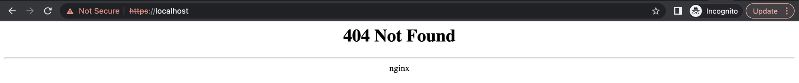

<!DOCTYPE html>
<html><head><title>03. 다양한 리소스들</title><meta charSet="utf-8"/><meta name="viewport" content="width=device-width, initial-scale=1.0"/><meta property="og:title" content="03. 다양한 리소스들"/><meta property="og:description" content="Workload Resource § StatefulSet § Pain point § Deployment 의 Pod 는 “일용직” 과 유사한 측면이 있다. 일용직 노동자는 일을 그만두어도 다른 인력을 쉽게 구해 대체할 수 있듯이, Pod 는 삭제되어도 아무런 영향을 주지 않고 Deployment 에 의해 재생성된다."/><meta property="og:image" content="https://mdg.haeramk.im/static/og-image.png"/><meta property="og:width" content="1200"/><meta property="og:height" content="675"/><link rel="icon" href="../../static/icon.png"/><meta name="description" content="Workload Resource § StatefulSet § Pain point § Deployment 의 Pod 는 “일용직” 과 유사한 측면이 있다. 일용직 노동자는 일을 그만두어도 다른 인력을 쉽게 구해 대체할 수 있듯이, Pod 는 삭제되어도 아무런 영향을 주지 않고 Deployment 에 의해 재생성된다."/><meta name="generator" content="Quartz"/><link rel="preconnect" href="https://fonts.googleapis.com"/><link rel="preconnect" href="https://fonts.gstatic.com"/><link href="../../index.css" rel="stylesheet" type="text/css" spa-preserve/><link href="https://cdn.jsdelivr.net/npm/katex@0.16.0/dist/katex.min.css" rel="stylesheet" type="text/css" spa-preserve/><link href="https://fonts.googleapis.com/css2?family=IBM Plex Mono&amp;family=Gowun Batang:wght@400;700&amp;family=Gowun Dodum:ital,wght@0,400;0,600;1,400;1,600&amp;display=swap" rel="stylesheet" type="text/css" spa-preserve/><script src="../../prescript.js" type="application/javascript" spa-preserve></script><script type="application/javascript" spa-preserve>const fetchData = fetch(`../../static/contentIndex.json`).then(data => data.json())</script></head><body data-slug="originals/kubernetes.jan.2023.si-analytics.ai/03.-다양한-리소스들"><div id="quartz-root" class="page"><div id="quartz-body"><div class="left sidebar"><h1 class="page-title "><a href="../..">Madison Digital Garden</a></h1><div class="spacer mobile-only"></div><div class="search "><div id="search-icon"><p>Search</p><div></div><svg tabIndex="0" aria-labelledby="title desc" role="img" xmlns="http://www.w3.org/2000/svg" viewBox="0 0 19.9 19.7"><title id="title">Search</title><desc id="desc">Search</desc><g class="search-path" fill="none"><path stroke-linecap="square" d="M18.5 18.3l-5.4-5.4"></path><circle cx="8" cy="8" r="7"></circle></g></svg></div><div id="search-container"><div id="search-space"><input autocomplete="off" id="search-bar" name="search" type="text" aria-label="Search for something" placeholder="Search for something"/><div id="results-container"></div></div></div></div><div class="darkmode "><input class="toggle" id="darkmode-toggle" type="checkbox" tabIndex="-1"/><label id="toggle-label-light" for="darkmode-toggle" tabIndex="-1"><svg xmlns="http://www.w3.org/2000/svg" xmlnsXlink="http://www.w3.org/1999/xlink" version="1.1" id="dayIcon" x="0px" y="0px" viewBox="0 0 35 35" style="enable-background:new 0 0 35 35;" xmlSpace="preserve"><title>Light mode</title><path d="M6,17.5C6,16.672,5.328,16,4.5,16h-3C0.672,16,0,16.672,0,17.5    S0.672,19,1.5,19h3C5.328,19,6,18.328,6,17.5z M7.5,26c-0.414,0-0.789,0.168-1.061,0.439l-2,2C4.168,28.711,4,29.086,4,29.5    C4,30.328,4.671,31,5.5,31c0.414,0,0.789-0.168,1.06-0.44l2-2C8.832,28.289,9,27.914,9,27.5C9,26.672,8.329,26,7.5,26z M17.5,6    C18.329,6,19,5.328,19,4.5v-3C19,0.672,18.329,0,17.5,0S16,0.672,16,1.5v3C16,5.328,16.671,6,17.5,6z M27.5,9    c0.414,0,0.789-0.168,1.06-0.439l2-2C30.832,6.289,31,5.914,31,5.5C31,4.672,30.329,4,29.5,4c-0.414,0-0.789,0.168-1.061,0.44    l-2,2C26.168,6.711,26,7.086,26,7.5C26,8.328,26.671,9,27.5,9z M6.439,8.561C6.711,8.832,7.086,9,7.5,9C8.328,9,9,8.328,9,7.5    c0-0.414-0.168-0.789-0.439-1.061l-2-2C6.289,4.168,5.914,4,5.5,4C4.672,4,4,4.672,4,5.5c0,0.414,0.168,0.789,0.439,1.06    L6.439,8.561z M33.5,16h-3c-0.828,0-1.5,0.672-1.5,1.5s0.672,1.5,1.5,1.5h3c0.828,0,1.5-0.672,1.5-1.5S34.328,16,33.5,16z     M28.561,26.439C28.289,26.168,27.914,26,27.5,26c-0.828,0-1.5,0.672-1.5,1.5c0,0.414,0.168,0.789,0.439,1.06l2,2    C28.711,30.832,29.086,31,29.5,31c0.828,0,1.5-0.672,1.5-1.5c0-0.414-0.168-0.789-0.439-1.061L28.561,26.439z M17.5,29    c-0.829,0-1.5,0.672-1.5,1.5v3c0,0.828,0.671,1.5,1.5,1.5s1.5-0.672,1.5-1.5v-3C19,29.672,18.329,29,17.5,29z M17.5,7    C11.71,7,7,11.71,7,17.5S11.71,28,17.5,28S28,23.29,28,17.5S23.29,7,17.5,7z M17.5,25c-4.136,0-7.5-3.364-7.5-7.5    c0-4.136,3.364-7.5,7.5-7.5c4.136,0,7.5,3.364,7.5,7.5C25,21.636,21.636,25,17.5,25z"></path></svg></label><label id="toggle-label-dark" for="darkmode-toggle" tabIndex="-1"><svg xmlns="http://www.w3.org/2000/svg" xmlnsXlink="http://www.w3.org/1999/xlink" version="1.1" id="nightIcon" x="0px" y="0px" viewBox="0 0 100 100" style="enable-background='new 0 0 100 100'" xmlSpace="preserve"><title>Dark mode</title><path d="M96.76,66.458c-0.853-0.852-2.15-1.064-3.23-0.534c-6.063,2.991-12.858,4.571-19.655,4.571  C62.022,70.495,50.88,65.88,42.5,57.5C29.043,44.043,25.658,23.536,34.076,6.47c0.532-1.08,0.318-2.379-0.534-3.23  c-0.851-0.852-2.15-1.064-3.23-0.534c-4.918,2.427-9.375,5.619-13.246,9.491c-9.447,9.447-14.65,22.008-14.65,35.369  c0,13.36,5.203,25.921,14.65,35.368s22.008,14.65,35.368,14.65c13.361,0,25.921-5.203,35.369-14.65  c3.872-3.871,7.064-8.328,9.491-13.246C97.826,68.608,97.611,67.309,96.76,66.458z"></path></svg></label></div><div class="explorer desktop-only"><button type="button" id="explorer" data-behavior="collapse" data-collapsed="collapsed" data-savestate="true" data-tree="[{&quot;path&quot;:&quot;archives&quot;,&quot;collapsed&quot;:true},{&quot;path&quot;:&quot;archives/microelectronics.spring.2021.cse.cnu.ac.kr&quot;,&quot;collapsed&quot;:true},{&quot;path&quot;:&quot;archives/practicalcoding.spring.2021.cse.cnu.ac.kr&quot;,&quot;collapsed&quot;:true},{&quot;path&quot;:&quot;botanicals&quot;,&quot;collapsed&quot;:true},{&quot;path&quot;:&quot;botanicals/algorithm&quot;,&quot;collapsed&quot;:true},{&quot;path&quot;:&quot;botanicals/algorithm/algorithm&quot;,&quot;collapsed&quot;:true},{&quot;path&quot;:&quot;botanicals/algorithm/algorithm/sort&quot;,&quot;collapsed&quot;:true},{&quot;path&quot;:&quot;botanicals/algorithm/data-structure&quot;,&quot;collapsed&quot;:true},{&quot;path&quot;:&quot;botanicals/algorithm/data-structure/linear&quot;,&quot;collapsed&quot;:true},{&quot;path&quot;:&quot;botanicals/algorithm/data-structure/map&quot;,&quot;collapsed&quot;:true},{&quot;path&quot;:&quot;botanicals/algorithm/data-structure/tree&quot;,&quot;collapsed&quot;:true},{&quot;path&quot;:&quot;botanicals/algorithm/draft&quot;,&quot;collapsed&quot;:true},{&quot;path&quot;:&quot;botanicals/cpp&quot;,&quot;collapsed&quot;:true},{&quot;path&quot;:&quot;botanicals/cpp/story&quot;,&quot;collapsed&quot;:true},{&quot;path&quot;:&quot;botanicals/cybersecurity&quot;,&quot;collapsed&quot;:true},{&quot;path&quot;:&quot;botanicals/cybersecurity/docs&quot;,&quot;collapsed&quot;:true},{&quot;path&quot;:&quot;botanicals/cybersecurity/draft&quot;,&quot;collapsed&quot;:true},{&quot;path&quot;:&quot;botanicals/cybersecurity/terms&quot;,&quot;collapsed&quot;:true},{&quot;path&quot;:&quot;botanicals/database&quot;,&quot;collapsed&quot;:true},{&quot;path&quot;:&quot;botanicals/database/draft&quot;,&quot;collapsed&quot;:true},{&quot;path&quot;:&quot;botanicals/database/rocksdb&quot;,&quot;collapsed&quot;:true},{&quot;path&quot;:&quot;botanicals/elasticsearch&quot;,&quot;collapsed&quot;:true},{&quot;path&quot;:&quot;botanicals/elasticsearch/docs&quot;,&quot;collapsed&quot;:true},{&quot;path&quot;:&quot;botanicals/elasticsearch/terms&quot;,&quot;collapsed&quot;:true},{&quot;path&quot;:&quot;botanicals/kubernetes&quot;,&quot;collapsed&quot;:true},{&quot;path&quot;:&quot;botanicals/kubernetes/docs&quot;,&quot;collapsed&quot;:true},{&quot;path&quot;:&quot;botanicals/kubernetes/troubleshoots&quot;,&quot;collapsed&quot;:true},{&quot;path&quot;:&quot;botanicals/networks&quot;,&quot;collapsed&quot;:true},{&quot;path&quot;:&quot;botanicals/networks/bgp&quot;,&quot;collapsed&quot;:true},{&quot;path&quot;:&quot;botanicals/networks/bgp/terms&quot;,&quot;collapsed&quot;:true},{&quot;path&quot;:&quot;botanicals/networks/dns&quot;,&quot;collapsed&quot;:true},{&quot;path&quot;:&quot;botanicals/networks/dns/story&quot;,&quot;collapsed&quot;:true},{&quot;path&quot;:&quot;botanicals/networks/dns/terms&quot;,&quot;collapsed&quot;:true},{&quot;path&quot;:&quot;botanicals/networks/draft&quot;,&quot;collapsed&quot;:true},{&quot;path&quot;:&quot;botanicals/os&quot;,&quot;collapsed&quot;:true},{&quot;path&quot;:&quot;botanicals/os/draft&quot;,&quot;collapsed&quot;:true},{&quot;path&quot;:&quot;botanicals/os/fs&quot;,&quot;collapsed&quot;:true},{&quot;path&quot;:&quot;botanicals/os/papers&quot;,&quot;collapsed&quot;:true},{&quot;path&quot;:&quot;botanicals/os/terms&quot;,&quot;collapsed&quot;:true},{&quot;path&quot;:&quot;botanicals/proxmox-vm&quot;,&quot;collapsed&quot;:true},{&quot;path&quot;:&quot;botanicals/proxmox-vm/story&quot;,&quot;collapsed&quot;:true},{&quot;path&quot;:&quot;botanicals/shellscript&quot;,&quot;collapsed&quot;:true},{&quot;path&quot;:&quot;botanicals/shellscript/apt&quot;,&quot;collapsed&quot;:true},{&quot;path&quot;:&quot;botanicals/shellscript/arp&quot;,&quot;collapsed&quot;:true},{&quot;path&quot;:&quot;botanicals/shellscript/bash&quot;,&quot;collapsed&quot;:true},{&quot;path&quot;:&quot;botanicals/shellscript/bash/alias&quot;,&quot;collapsed&quot;:true},{&quot;path&quot;:&quot;botanicals/shellscript/bash/conditional&quot;,&quot;collapsed&quot;:true},{&quot;path&quot;:&quot;botanicals/shellscript/bash/env&quot;,&quot;collapsed&quot;:true},{&quot;path&quot;:&quot;botanicals/shellscript/bash/list&quot;,&quot;collapsed&quot;:true},{&quot;path&quot;:&quot;botanicals/shellscript/bash/substitution&quot;,&quot;collapsed&quot;:true},{&quot;path&quot;:&quot;botanicals/shellscript/ca-certificates&quot;,&quot;collapsed&quot;:true},{&quot;path&quot;:&quot;botanicals/shellscript/curl&quot;,&quot;collapsed&quot;:true},{&quot;path&quot;:&quot;botanicals/shellscript/df&quot;,&quot;collapsed&quot;:true},{&quot;path&quot;:&quot;botanicals/shellscript/expr&quot;,&quot;collapsed&quot;:true},{&quot;path&quot;:&quot;botanicals/shellscript/fdisk&quot;,&quot;collapsed&quot;:true},{&quot;path&quot;:&quot;botanicals/shellscript/nvme&quot;,&quot;collapsed&quot;:true},{&quot;path&quot;:&quot;botanicals/shellscript/nvme/zns&quot;,&quot;collapsed&quot;:true},{&quot;path&quot;:&quot;botanicals/shellscript/openssl&quot;,&quot;collapsed&quot;:true},{&quot;path&quot;:&quot;botanicals/shellscript/story&quot;,&quot;collapsed&quot;:true},{&quot;path&quot;:&quot;botanicals/shellscript/tar&quot;,&quot;collapsed&quot;:true},{&quot;path&quot;:&quot;botanicals/shellscript/tcpdump&quot;,&quot;collapsed&quot;:true},{&quot;path&quot;:&quot;botanicals/shellscript/tr&quot;,&quot;collapsed&quot;:true},{&quot;path&quot;:&quot;botanicals/shellscript/watch&quot;,&quot;collapsed&quot;:true},{&quot;path&quot;:&quot;botanicals/storage&quot;,&quot;collapsed&quot;:true},{&quot;path&quot;:&quot;botanicals/storage/draft&quot;,&quot;collapsed&quot;:true},{&quot;path&quot;:&quot;botanicals/storage/nvme&quot;,&quot;collapsed&quot;:true},{&quot;path&quot;:&quot;botanicals/storage/nvme/story&quot;,&quot;collapsed&quot;:true},{&quot;path&quot;:&quot;botanicals/storage/terms&quot;,&quot;collapsed&quot;:true},{&quot;path&quot;:&quot;originals&quot;,&quot;collapsed&quot;:true},{&quot;path&quot;:&quot;originals/comnet.fall.2021.cse.cnu.ac.kr&quot;,&quot;collapsed&quot;:true},{&quot;path&quot;:&quot;originals/compiler.fall.2021.cse.cnu.ac.kr&quot;,&quot;collapsed&quot;:true},{&quot;path&quot;:&quot;originals/datacommunication.spring.2021.cse.cnu.ac.kr&quot;,&quot;collapsed&quot;:true},{&quot;path&quot;:&quot;originals/jumptopython.books.wikidocs.net&quot;,&quot;collapsed&quot;:true},{&quot;path&quot;:&quot;originals/kubernetes.jan.2023.si-analytics.ai&quot;,&quot;collapsed&quot;:true},{&quot;path&quot;:&quot;originals/os.bahn.ewha.kocw.net&quot;,&quot;collapsed&quot;:true},{&quot;path&quot;:&quot;originals/os.spring.2021.cse.cnu.ac.kr&quot;,&quot;collapsed&quot;:true},{&quot;path&quot;:&quot;originals/pl.spring.2021.cse.cnu.ac.kr&quot;,&quot;collapsed&quot;:true},{&quot;path&quot;:&quot;originals/softwareengineering.fall.2021.cse.cnu.ac.kr&quot;,&quot;collapsed&quot;:true},{&quot;path&quot;:&quot;originals/webprogramming.fall.2021.cse.cnu.ac.kr&quot;,&quot;collapsed&quot;:true}]"><h1>Explorer</h1><svg xmlns="http://www.w3.org/2000/svg" width="14" height="14" viewBox="5 8 14 8" fill="none" stroke="currentColor" stroke-width="2" stroke-linecap="round" stroke-linejoin="round" class="fold"><polyline points="6 9 12 15 18 9"></polyline></svg></button><div id="explorer-content"><ul class="overflow" id="explorer-ul"><li><div><div class="folder-outer open"><ul style="padding-left:0;" class="content" data-folderul><li><div><div class="folder-container"><svg xmlns="http://www.w3.org/2000/svg" width="12" height="12" viewBox="5 8 14 8" fill="none" stroke="currentColor" stroke-width="2" stroke-linecap="round" stroke-linejoin="round" class="folder-icon"><polyline points="6 9 12 15 18 9"></polyline></svg><div data-folderpath="/archives"><button class="folder-button"><p class="folder-title">archives</p></button></div></div><div class="folder-outer "><ul style="padding-left:1.4rem;" class="content" data-folderul="/archives"><li><div><div class="folder-container"><svg xmlns="http://www.w3.org/2000/svg" width="12" height="12" viewBox="5 8 14 8" fill="none" stroke="currentColor" stroke-width="2" stroke-linecap="round" stroke-linejoin="round" class="folder-icon"><polyline points="6 9 12 15 18 9"></polyline></svg><div data-folderpath="/archives/microelectronics.spring.2021.cse.cnu.ac.kr"><button class="folder-button"><p class="folder-title">microelectronics.spring.2021.cse.cnu.ac.kr</p></button></div></div><div class="folder-outer "><ul style="padding-left:1.4rem;" class="content" data-folderul="/archives/microelectronics.spring.2021.cse.cnu.ac.kr"><li><li><a href="../../archives/microelectronics.spring.2021.cse.cnu.ac.kr/(충남대)-전자회로-강의록" data-for="archives/microelectronics.spring.2021.cse.cnu.ac.kr/(충남대)-전자회로-강의록">(충남대) 전자회로 강의록</a></li></li><li><li><a href="../../archives/microelectronics.spring.2021.cse.cnu.ac.kr/01.-강의-개요" data-for="archives/microelectronics.spring.2021.cse.cnu.ac.kr/01.-강의-개요">01. 강의 개요</a></li></li><li><li><a href="../../archives/microelectronics.spring.2021.cse.cnu.ac.kr/02.-전하,-전압,-전류" data-for="archives/microelectronics.spring.2021.cse.cnu.ac.kr/02.-전하,-전압,-전류">02. 전하, 전압, 전류</a></li></li><li><li><a href="../../archives/microelectronics.spring.2021.cse.cnu.ac.kr/03.-파워,-저항의-직렬병렬연결" data-for="archives/microelectronics.spring.2021.cse.cnu.ac.kr/03.-파워,-저항의-직렬병렬연결">03. 파워, 저항의 직렬병렬연결</a></li></li><li><li><a href="../../archives/microelectronics.spring.2021.cse.cnu.ac.kr/04.-전압원,-전류원" data-for="archives/microelectronics.spring.2021.cse.cnu.ac.kr/04.-전압원,-전류원">04. 전압원, 전류원</a></li></li><li><li><a href="../../archives/microelectronics.spring.2021.cse.cnu.ac.kr/05.-캐패시터" data-for="archives/microelectronics.spring.2021.cse.cnu.ac.kr/05.-캐패시터">05. 캐패시터</a></li></li><li><li><a href="../../archives/microelectronics.spring.2021.cse.cnu.ac.kr/06.-인덕터" data-for="archives/microelectronics.spring.2021.cse.cnu.ac.kr/06.-인덕터">06. 인덕터</a></li></li><li><li><a href="../../archives/microelectronics.spring.2021.cse.cnu.ac.kr/07.-교류-신호" data-for="archives/microelectronics.spring.2021.cse.cnu.ac.kr/07.-교류-신호">07. 교류 신호</a></li></li><li><li><a href="../../archives/microelectronics.spring.2021.cse.cnu.ac.kr/08.-리액턴스" data-for="archives/microelectronics.spring.2021.cse.cnu.ac.kr/08.-리액턴스">08. 리액턴스</a></li></li><li><li><a href="../../archives/microelectronics.spring.2021.cse.cnu.ac.kr/09.-반도체,-P-N-도핑" data-for="archives/microelectronics.spring.2021.cse.cnu.ac.kr/09.-반도체,-P-N-도핑">09. 반도체, P N 도핑</a></li></li><li><li><a href="../../archives/microelectronics.spring.2021.cse.cnu.ac.kr/10.-다이오드" data-for="archives/microelectronics.spring.2021.cse.cnu.ac.kr/10.-다이오드">10. 다이오드</a></li></li><li><li><a href="../../archives/microelectronics.spring.2021.cse.cnu.ac.kr/11.-트랜지스터" data-for="archives/microelectronics.spring.2021.cse.cnu.ac.kr/11.-트랜지스터">11. 트랜지스터</a></li></li><li><li><a href="../../archives/microelectronics.spring.2021.cse.cnu.ac.kr/12.-등가회로" data-for="archives/microelectronics.spring.2021.cse.cnu.ac.kr/12.-등가회로">12. 등가회로</a></li></li><li><li><a href="../../archives/microelectronics.spring.2021.cse.cnu.ac.kr/13.-트랜지스터-Biasing" data-for="archives/microelectronics.spring.2021.cse.cnu.ac.kr/13.-트랜지스터-Biasing">13. 트랜지스터 Biasing</a></li></li><li><li><a href="../../archives/microelectronics.spring.2021.cse.cnu.ac.kr/14.-CS-증폭기" data-for="archives/microelectronics.spring.2021.cse.cnu.ac.kr/14.-CS-증폭기">14. CS 증폭기</a></li></li><li><li><a href="../../archives/microelectronics.spring.2021.cse.cnu.ac.kr/15.-CMOS" data-for="archives/microelectronics.spring.2021.cse.cnu.ac.kr/15.-CMOS">15. CMOS</a></li></li></ul></div></div></li><li><div><div class="folder-container"><svg xmlns="http://www.w3.org/2000/svg" width="12" height="12" viewBox="5 8 14 8" fill="none" stroke="currentColor" stroke-width="2" stroke-linecap="round" stroke-linejoin="round" class="folder-icon"><polyline points="6 9 12 15 18 9"></polyline></svg><div data-folderpath="/archives/practicalcoding.spring.2021.cse.cnu.ac.kr"><button class="folder-button"><p class="folder-title">practicalcoding.spring.2021.cse.cnu.ac.kr</p></button></div></div><div class="folder-outer "><ul style="padding-left:1.4rem;" class="content" data-folderul="/archives/practicalcoding.spring.2021.cse.cnu.ac.kr"><li><li><a href="../../archives/practicalcoding.spring.2021.cse.cnu.ac.kr/(충남대)-실전코딩-강의록" data-for="archives/practicalcoding.spring.2021.cse.cnu.ac.kr/(충남대)-실전코딩-강의록">(충남대) 실전코딩 강의록</a></li></li><li><li><a href="../../archives/practicalcoding.spring.2021.cse.cnu.ac.kr/01.-개발-프로세스" data-for="archives/practicalcoding.spring.2021.cse.cnu.ac.kr/01.-개발-프로세스">01. 개발 프로세스</a></li></li><li><li><a href="../../archives/practicalcoding.spring.2021.cse.cnu.ac.kr/02.-Git-(1)" data-for="archives/practicalcoding.spring.2021.cse.cnu.ac.kr/02.-Git-(1)">02. Git (1)</a></li></li><li><li><a href="../../archives/practicalcoding.spring.2021.cse.cnu.ac.kr/03.-Git-(2)" data-for="archives/practicalcoding.spring.2021.cse.cnu.ac.kr/03.-Git-(2)">03. Git (2)</a></li></li><li><li><a href="../../archives/practicalcoding.spring.2021.cse.cnu.ac.kr/04.-Backend-개발-(1)" data-for="archives/practicalcoding.spring.2021.cse.cnu.ac.kr/04.-Backend-개발-(1)">04. Backend 개발 (1)</a></li></li><li><li><a href="../../archives/practicalcoding.spring.2021.cse.cnu.ac.kr/05.-Backend-개발-(2)" data-for="archives/practicalcoding.spring.2021.cse.cnu.ac.kr/05.-Backend-개발-(2)">05. Backend 개발 (2)</a></li></li><li><li><a href="../../archives/practicalcoding.spring.2021.cse.cnu.ac.kr/06.-Spring-Boot-Annotation" data-for="archives/practicalcoding.spring.2021.cse.cnu.ac.kr/06.-Spring-Boot-Annotation">06. Spring Boot Annotation</a></li></li><li><li><a href="../../archives/practicalcoding.spring.2021.cse.cnu.ac.kr/07.-MSA-(1)" data-for="archives/practicalcoding.spring.2021.cse.cnu.ac.kr/07.-MSA-(1)">07. MSA (1)</a></li></li><li><li><a href="../../archives/practicalcoding.spring.2021.cse.cnu.ac.kr/08.-MSA-(2)" data-for="archives/practicalcoding.spring.2021.cse.cnu.ac.kr/08.-MSA-(2)">08. MSA (2)</a></li></li><li><li><a href="../../archives/practicalcoding.spring.2021.cse.cnu.ac.kr/09.-테스팅" data-for="archives/practicalcoding.spring.2021.cse.cnu.ac.kr/09.-테스팅">09. 테스팅</a></li></li><li><li><a href="../../archives/practicalcoding.spring.2021.cse.cnu.ac.kr/10.-Frontend-개발" data-for="archives/practicalcoding.spring.2021.cse.cnu.ac.kr/10.-Frontend-개발">10. Frontend 개발</a></li></li></ul></div></div></li><li><li><a href="../../archives/아까이브-갈든---Archive-Garden" data-for="archives/아까이브-갈든---Archive-Garden">아까이브 갈든 - Archive Garden</a></li></li></ul></div></div></li><li><div><div class="folder-container"><svg xmlns="http://www.w3.org/2000/svg" width="12" height="12" viewBox="5 8 14 8" fill="none" stroke="currentColor" stroke-width="2" stroke-linecap="round" stroke-linejoin="round" class="folder-icon"><polyline points="6 9 12 15 18 9"></polyline></svg><div data-folderpath="/botanicals"><button class="folder-button"><p class="folder-title">botanicals</p></button></div></div><div class="folder-outer "><ul style="padding-left:1.4rem;" class="content" data-folderul="/botanicals"><li><div><div class="folder-container"><svg xmlns="http://www.w3.org/2000/svg" width="12" height="12" viewBox="5 8 14 8" fill="none" stroke="currentColor" stroke-width="2" stroke-linecap="round" stroke-linejoin="round" class="folder-icon"><polyline points="6 9 12 15 18 9"></polyline></svg><div data-folderpath="/botanicals/algorithm"><button class="folder-button"><p class="folder-title">algorithm</p></button></div></div><div class="folder-outer "><ul style="padding-left:1.4rem;" class="content" data-folderul="/botanicals/algorithm"><li><div><div class="folder-container"><svg xmlns="http://www.w3.org/2000/svg" width="12" height="12" viewBox="5 8 14 8" fill="none" stroke="currentColor" stroke-width="2" stroke-linecap="round" stroke-linejoin="round" class="folder-icon"><polyline points="6 9 12 15 18 9"></polyline></svg><div data-folderpath="/botanicals/algorithm/algorithm"><button class="folder-button"><p class="folder-title">algorithm</p></button></div></div><div class="folder-outer "><ul style="padding-left:1.4rem;" class="content" data-folderul="/botanicals/algorithm/algorithm"><li><div><div class="folder-container"><svg xmlns="http://www.w3.org/2000/svg" width="12" height="12" viewBox="5 8 14 8" fill="none" stroke="currentColor" stroke-width="2" stroke-linecap="round" stroke-linejoin="round" class="folder-icon"><polyline points="6 9 12 15 18 9"></polyline></svg><div data-folderpath="/botanicals/algorithm/algorithm/sort"><button class="folder-button"><p class="folder-title">sort</p></button></div></div><div class="folder-outer "><ul style="padding-left:1.4rem;" class="content" data-folderul="/botanicals/algorithm/algorithm/sort"><li><li><a href="../../botanicals/algorithm/algorithm/sort/Merge-Sort-(Algorithm)" data-for="botanicals/algorithm/algorithm/sort/Merge-Sort-(Algorithm)">Merge Sort (Algorithm)</a></li></li></ul></div></div></li></ul></div></div></li><li><div><div class="folder-container"><svg xmlns="http://www.w3.org/2000/svg" width="12" height="12" viewBox="5 8 14 8" fill="none" stroke="currentColor" stroke-width="2" stroke-linecap="round" stroke-linejoin="round" class="folder-icon"><polyline points="6 9 12 15 18 9"></polyline></svg><div data-folderpath="/botanicals/algorithm/data-structure"><button class="folder-button"><p class="folder-title">data-structure</p></button></div></div><div class="folder-outer "><ul style="padding-left:1.4rem;" class="content" data-folderul="/botanicals/algorithm/data-structure"><li><div><div class="folder-container"><svg xmlns="http://www.w3.org/2000/svg" width="12" height="12" viewBox="5 8 14 8" fill="none" stroke="currentColor" stroke-width="2" stroke-linecap="round" stroke-linejoin="round" class="folder-icon"><polyline points="6 9 12 15 18 9"></polyline></svg><div data-folderpath="/botanicals/algorithm/data-structure/linear"><button class="folder-button"><p class="folder-title">linear</p></button></div></div><div class="folder-outer "><ul style="padding-left:1.4rem;" class="content" data-folderul="/botanicals/algorithm/data-structure/linear"><li><li><a href="../../botanicals/algorithm/data-structure/linear/Sorted-Run-(Data-Structure)" data-for="botanicals/algorithm/data-structure/linear/Sorted-Run-(Data-Structure)">Sorted Run (Data Structure)</a></li></li></ul></div></div></li><li><div><div class="folder-container"><svg xmlns="http://www.w3.org/2000/svg" width="12" height="12" viewBox="5 8 14 8" fill="none" stroke="currentColor" stroke-width="2" stroke-linecap="round" stroke-linejoin="round" class="folder-icon"><polyline points="6 9 12 15 18 9"></polyline></svg><div data-folderpath="/botanicals/algorithm/data-structure/map"><button class="folder-button"><p class="folder-title">map</p></button></div></div><div class="folder-outer "><ul style="padding-left:1.4rem;" class="content" data-folderul="/botanicals/algorithm/data-structure/map"><li><li><a href="../../botanicals/algorithm/data-structure/map/Bloom-Filter-(Data-Structure)" data-for="botanicals/algorithm/data-structure/map/Bloom-Filter-(Data-Structure)">Bloom Filter (Data Structure)</a></li></li></ul></div></div></li><li><div><div class="folder-container"><svg xmlns="http://www.w3.org/2000/svg" width="12" height="12" viewBox="5 8 14 8" fill="none" stroke="currentColor" stroke-width="2" stroke-linecap="round" stroke-linejoin="round" class="folder-icon"><polyline points="6 9 12 15 18 9"></polyline></svg><div data-folderpath="/botanicals/algorithm/data-structure/tree"><button class="folder-button"><p class="folder-title">tree</p></button></div></div><div class="folder-outer "><ul style="padding-left:1.4rem;" class="content" data-folderul="/botanicals/algorithm/data-structure/tree"><li><li><a href="../../botanicals/algorithm/data-structure/tree/Balanced-Tree,-B-Tree-(Data-Structure)" data-for="botanicals/algorithm/data-structure/tree/Balanced-Tree,-B-Tree-(Data-Structure)">Balanced Tree, B Tree (Data Structure)</a></li></li><li><li><a href="../../botanicals/algorithm/data-structure/tree/Binary-Search-Tree,-BST-(Data-Structure)" data-for="botanicals/algorithm/data-structure/tree/Binary-Search-Tree,-BST-(Data-Structure)">Binary Search Tree, BST (Data Structure)</a></li></li></ul></div></div></li></ul></div></div></li><li><div><div class="folder-container"><svg xmlns="http://www.w3.org/2000/svg" width="12" height="12" viewBox="5 8 14 8" fill="none" stroke="currentColor" stroke-width="2" stroke-linecap="round" stroke-linejoin="round" class="folder-icon"><polyline points="6 9 12 15 18 9"></polyline></svg><div data-folderpath="/botanicals/algorithm/draft"><button class="folder-button"><p class="folder-title">draft</p></button></div></div><div class="folder-outer "><ul style="padding-left:1.4rem;" class="content" data-folderul="/botanicals/algorithm/draft"><li><li><a href="../../botanicals/algorithm/draft/Log-Structure-Merge-Tree,-LSM-Tree-(Data-Structure)" data-for="botanicals/algorithm/draft/Log-Structure-Merge-Tree,-LSM-Tree-(Data-Structure)">Log Structure Merge Tree, LSM Tree (Data Structure)</a></li></li><li><li><a href="../../botanicals/algorithm/draft/Skip-List-(Data-Structure)" data-for="botanicals/algorithm/draft/Skip-List-(Data-Structure)">Skip List (Data Structure)</a></li></li><li><li><a href="../../botanicals/algorithm/draft/Sparse-Index-(Data-Structure)" data-for="botanicals/algorithm/draft/Sparse-Index-(Data-Structure)">Sparse Index (Data Structure)</a></li></li></ul></div></div></li><li><li><a href="../../botanicals/algorithm/(Botanical-Garden)-Algorithm,-Data-Structure" data-for="botanicals/algorithm/(Botanical-Garden)-Algorithm,-Data-Structure">(Botanical Garden) Algorithm, Data Structure</a></li></li></ul></div></div></li><li><div><div class="folder-container"><svg xmlns="http://www.w3.org/2000/svg" width="12" height="12" viewBox="5 8 14 8" fill="none" stroke="currentColor" stroke-width="2" stroke-linecap="round" stroke-linejoin="round" class="folder-icon"><polyline points="6 9 12 15 18 9"></polyline></svg><div data-folderpath="/botanicals/cpp"><button class="folder-button"><p class="folder-title">cpp</p></button></div></div><div class="folder-outer "><ul style="padding-left:1.4rem;" class="content" data-folderul="/botanicals/cpp"><li><div><div class="folder-container"><svg xmlns="http://www.w3.org/2000/svg" width="12" height="12" viewBox="5 8 14 8" fill="none" stroke="currentColor" stroke-width="2" stroke-linecap="round" stroke-linejoin="round" class="folder-icon"><polyline points="6 9 12 15 18 9"></polyline></svg><div data-folderpath="/botanicals/cpp/story"><button class="folder-button"><p class="folder-title">story</p></button></div></div><div class="folder-outer "><ul style="padding-left:1.4rem;" class="content" data-folderul="/botanicals/cpp/story"><li><li><a href="../../botanicals/cpp/story/Cpp---char-to-string-변환" data-for="botanicals/cpp/story/Cpp---char-to-string-변환">Cpp - char to string 변환</a></li></li><li><li><a href="../../botanicals/cpp/story/Cpp---size()-의-사칙연산-주의할-것" data-for="botanicals/cpp/story/Cpp---size()-의-사칙연산-주의할-것">Cpp - size() 의 사칙연산 주의할 것</a></li></li><li><li><a href="../../botanicals/cpp/story/Cpp---명령줄-인수-(Command-line-arguments)-처리하기" data-for="botanicals/cpp/story/Cpp---명령줄-인수-(Command-line-arguments)-처리하기">Cpp - 명령줄 인수 (Command-line arguments) 처리하기</a></li></li></ul></div></div></li><li><li><a href="../../botanicals/cpp/(Botanical-Garden)-Cpp" data-for="botanicals/cpp/(Botanical-Garden)-Cpp">(Botanical Garden) Cpp</a></li></li></ul></div></div></li><li><div><div class="folder-container"><svg xmlns="http://www.w3.org/2000/svg" width="12" height="12" viewBox="5 8 14 8" fill="none" stroke="currentColor" stroke-width="2" stroke-linecap="round" stroke-linejoin="round" class="folder-icon"><polyline points="6 9 12 15 18 9"></polyline></svg><div data-folderpath="/botanicals/cybersecurity"><button class="folder-button"><p class="folder-title">cybersecurity</p></button></div></div><div class="folder-outer "><ul style="padding-left:1.4rem;" class="content" data-folderul="/botanicals/cybersecurity"><li><div><div class="folder-container"><svg xmlns="http://www.w3.org/2000/svg" width="12" height="12" viewBox="5 8 14 8" fill="none" stroke="currentColor" stroke-width="2" stroke-linecap="round" stroke-linejoin="round" class="folder-icon"><polyline points="6 9 12 15 18 9"></polyline></svg><div data-folderpath="/botanicals/cybersecurity/docs"><button class="folder-button"><p class="folder-title">docs</p></button></div></div><div class="folder-outer "><ul style="padding-left:1.4rem;" class="content" data-folderul="/botanicals/cybersecurity/docs"><li><li><a href="../../botanicals/cybersecurity/docs/Symmetric-Key-for-TLS---TLS-통신에-대칭키를-사용하는-이유" data-for="botanicals/cybersecurity/docs/Symmetric-Key-for-TLS---TLS-통신에-대칭키를-사용하는-이유">Symmetric Key for TLS - TLS 통신에 대칭키를 사용하는 이유</a></li></li><li><li><a href="../../botanicals/cybersecurity/docs/x509v3-Basic-Constraints-extension-explained---Basic-Constraints-란-q" data-for="botanicals/cybersecurity/docs/x509v3-Basic-Constraints-extension-explained---Basic-Constraints-란-q">x509v3 Basic Constraints extension explained - Basic Constraints 란?</a></li></li><li><li><a href="../../botanicals/cybersecurity/docs/x509v3-Key-Usage-and-Extended-Key-Usage-extension-explained---Key-Usage-와-Extended-Key-Usage-란-q" data-for="botanicals/cybersecurity/docs/x509v3-Key-Usage-and-Extended-Key-Usage-extension-explained---Key-Usage-와-Extended-Key-Usage-란-q">x509v3 Key Usage and Extended Key Usage extension explained - Key Usage 와 Extended Key Usage 란?</a></li></li></ul></div></div></li><li><div><div class="folder-container"><svg xmlns="http://www.w3.org/2000/svg" width="12" height="12" viewBox="5 8 14 8" fill="none" stroke="currentColor" stroke-width="2" stroke-linecap="round" stroke-linejoin="round" class="folder-icon"><polyline points="6 9 12 15 18 9"></polyline></svg><div data-folderpath="/botanicals/cybersecurity/draft"><button class="folder-button"><p class="folder-title">draft</p></button></div></div><div class="folder-outer "><ul style="padding-left:1.4rem;" class="content" data-folderul="/botanicals/cybersecurity/draft"><li><li><a href="../../botanicals/cybersecurity/draft/Border-Gateway-Protocol-Security-Extension,-BGPsec-(Security)" data-for="botanicals/cybersecurity/draft/Border-Gateway-Protocol-Security-Extension,-BGPsec-(Security)">Border Gateway Protocol Security Extension, BGPsec (Security)</a></li></li><li><li><a href="../../botanicals/cybersecurity/draft/Public-Key-Infrastructure,-PKI-(Security)" data-for="botanicals/cybersecurity/draft/Public-Key-Infrastructure,-PKI-(Security)">Public Key Infrastructure, PKI (Security)</a></li></li><li><li><a href="../../botanicals/cybersecurity/draft/Resource-Public-Key-Infrastructure,-RPKI-(Security)" data-for="botanicals/cybersecurity/draft/Resource-Public-Key-Infrastructure,-RPKI-(Security)">Resource Public Key Infrastructure, RPKI (Security)</a></li></li><li><li><a href="../../botanicals/cybersecurity/draft/Subject-Key-Identifier,-SKID-(PKIX)" data-for="botanicals/cybersecurity/draft/Subject-Key-Identifier,-SKID-(PKIX)">Subject Key Identifier, SKID (PKIX)</a></li></li></ul></div></div></li><li><div><div class="folder-container"><svg xmlns="http://www.w3.org/2000/svg" width="12" height="12" viewBox="5 8 14 8" fill="none" stroke="currentColor" stroke-width="2" stroke-linecap="round" stroke-linejoin="round" class="folder-icon"><polyline points="6 9 12 15 18 9"></polyline></svg><div data-folderpath="/botanicals/cybersecurity/terms"><button class="folder-button"><p class="folder-title">terms</p></button></div></div><div class="folder-outer "><ul style="padding-left:1.4rem;" class="content" data-folderul="/botanicals/cybersecurity/terms"><li><li><a href="../../botanicals/cybersecurity/terms/Certificate-Authority,-CA-(PKIX)" data-for="botanicals/cybersecurity/terms/Certificate-Authority,-CA-(PKIX)">Certificate Authority, CA (PKIX)</a></li></li><li><li><a href="../../botanicals/cybersecurity/terms/Certificate-Signing-Request,-CSR-(PKIX)" data-for="botanicals/cybersecurity/terms/Certificate-Signing-Request,-CSR-(PKIX)">Certificate Signing Request, CSR (PKIX)</a></li></li><li><li><a href="../../botanicals/cybersecurity/terms/Common-Name,-CN-(PKIX)" data-for="botanicals/cybersecurity/terms/Common-Name,-CN-(PKIX)">Common Name, CN (PKIX)</a></li></li><li><li><a href="../../botanicals/cybersecurity/terms/Mutual-TLS,-mTLS-(PKIX)" data-for="botanicals/cybersecurity/terms/Mutual-TLS,-mTLS-(PKIX)">Mutual TLS, mTLS (PKIX)</a></li></li><li><li><a href="../../botanicals/cybersecurity/terms/Serial-Number-(PKIX)" data-for="botanicals/cybersecurity/terms/Serial-Number-(PKIX)">Serial Number (PKIX)</a></li></li><li><li><a href="../../botanicals/cybersecurity/terms/Subject-Alternative-Name,-SAN-(PKIX)" data-for="botanicals/cybersecurity/terms/Subject-Alternative-Name,-SAN-(PKIX)">Subject Alternative Name, SAN (PKIX)</a></li></li></ul></div></div></li><li><li><a href="../../botanicals/cybersecurity/(Botanical-Garden)-Cybersecurity" data-for="botanicals/cybersecurity/(Botanical-Garden)-Cybersecurity">(Botanical Garden) Cybersecurity</a></li></li></ul></div></div></li><li><div><div class="folder-container"><svg xmlns="http://www.w3.org/2000/svg" width="12" height="12" viewBox="5 8 14 8" fill="none" stroke="currentColor" stroke-width="2" stroke-linecap="round" stroke-linejoin="round" class="folder-icon"><polyline points="6 9 12 15 18 9"></polyline></svg><div data-folderpath="/botanicals/database"><button class="folder-button"><p class="folder-title">database</p></button></div></div><div class="folder-outer "><ul style="padding-left:1.4rem;" class="content" data-folderul="/botanicals/database"><li><div><div class="folder-container"><svg xmlns="http://www.w3.org/2000/svg" width="12" height="12" viewBox="5 8 14 8" fill="none" stroke="currentColor" stroke-width="2" stroke-linecap="round" stroke-linejoin="round" class="folder-icon"><polyline points="6 9 12 15 18 9"></polyline></svg><div data-folderpath="/botanicals/database/draft"><button class="folder-button"><p class="folder-title">draft</p></button></div></div><div class="folder-outer "><ul style="padding-left:1.4rem;" class="content" data-folderul="/botanicals/database/draft"><li><li><a href="../../botanicals/database/draft/Write-Ahead-Log,-WAL-(Database)" data-for="botanicals/database/draft/Write-Ahead-Log,-WAL-(Database)">Write Ahead Log, WAL (Database)</a></li></li></ul></div></div></li><li><div><div class="folder-container"><svg xmlns="http://www.w3.org/2000/svg" width="12" height="12" viewBox="5 8 14 8" fill="none" stroke="currentColor" stroke-width="2" stroke-linecap="round" stroke-linejoin="round" class="folder-icon"><polyline points="6 9 12 15 18 9"></polyline></svg><div data-folderpath="/botanicals/database/rocksdb"><button class="folder-button"><p class="folder-title">rocksdb</p></button></div></div><div class="folder-outer "><ul style="padding-left:1.4rem;" class="content" data-folderul="/botanicals/database/rocksdb"><li><li><a href="../../botanicals/database/rocksdb/Leveled-Compaction-(RocksDB)" data-for="botanicals/database/rocksdb/Leveled-Compaction-(RocksDB)">Leveled Compaction (RocksDB)</a></li></li><li><li><a href="../../botanicals/database/rocksdb/LSM-Tree-(RocksDB)" data-for="botanicals/database/rocksdb/LSM-Tree-(RocksDB)">LSM Tree (RocksDB)</a></li></li><li><li><a href="../../botanicals/database/rocksdb/Memtable-(RocksDB)" data-for="botanicals/database/rocksdb/Memtable-(RocksDB)">Memtable (RocksDB)</a></li></li><li><li><a href="../../botanicals/database/rocksdb/Static-Sorted-Table,-SST-(RocksDB)" data-for="botanicals/database/rocksdb/Static-Sorted-Table,-SST-(RocksDB)">Static Sorted Table, SST (RocksDB)</a></li></li></ul></div></div></li><li><li><a href="../../botanicals/database/(Botanical-Garden)-Database" data-for="botanicals/database/(Botanical-Garden)-Database">(Botanical Garden) Database</a></li></li></ul></div></div></li><li><div><div class="folder-container"><svg xmlns="http://www.w3.org/2000/svg" width="12" height="12" viewBox="5 8 14 8" fill="none" stroke="currentColor" stroke-width="2" stroke-linecap="round" stroke-linejoin="round" class="folder-icon"><polyline points="6 9 12 15 18 9"></polyline></svg><div data-folderpath="/botanicals/elasticsearch"><button class="folder-button"><p class="folder-title">elasticsearch</p></button></div></div><div class="folder-outer "><ul style="padding-left:1.4rem;" class="content" data-folderul="/botanicals/elasticsearch"><li><div><div class="folder-container"><svg xmlns="http://www.w3.org/2000/svg" width="12" height="12" viewBox="5 8 14 8" fill="none" stroke="currentColor" stroke-width="2" stroke-linecap="round" stroke-linejoin="round" class="folder-icon"><polyline points="6 9 12 15 18 9"></polyline></svg><div data-folderpath="/botanicals/elasticsearch/docs"><button class="folder-button"><p class="folder-title">docs</p></button></div></div><div class="folder-outer "><ul style="padding-left:1.4rem;" class="content" data-folderul="/botanicals/elasticsearch/docs"><li><li><a href="../../botanicals/elasticsearch/docs/ElasticSearch-Architecture---엘라스틱서치-아키텍처" data-for="botanicals/elasticsearch/docs/ElasticSearch-Architecture---엘라스틱서치-아키텍처">ElasticSearch Architecture - 엘라스틱서치 아키텍처</a></li></li><li><li><a href="../../botanicals/elasticsearch/docs/Read-&amp;-Write-Operation-in-ElasticSearch---엘라스틱서치-RW-과정-정리" data-for="botanicals/elasticsearch/docs/Read-&amp;-Write-Operation-in-ElasticSearch---엘라스틱서치-RW-과정-정리">Read &amp; Write Operation in ElasticSearch - 엘라스틱서치 RW 과정 정리</a></li></li><li><li><a href="../../botanicals/elasticsearch/docs/TL;DR-ElasticSearch---엘라스틱서치-간단하게-시작하기" data-for="botanicals/elasticsearch/docs/TL;DR-ElasticSearch---엘라스틱서치-간단하게-시작하기">TL;DR ElasticSearch - 엘라스틱서치 간단하게 시작하기</a></li></li></ul></div></div></li><li><div><div class="folder-container"><svg xmlns="http://www.w3.org/2000/svg" width="12" height="12" viewBox="5 8 14 8" fill="none" stroke="currentColor" stroke-width="2" stroke-linecap="round" stroke-linejoin="round" class="folder-icon"><polyline points="6 9 12 15 18 9"></polyline></svg><div data-folderpath="/botanicals/elasticsearch/terms"><button class="folder-button"><p class="folder-title">terms</p></button></div></div><div class="folder-outer "><ul style="padding-left:1.4rem;" class="content" data-folderul="/botanicals/elasticsearch/terms"><li><li><a href="../../botanicals/elasticsearch/terms/_doc-(ElasticSearch)" data-for="botanicals/elasticsearch/terms/_doc-(ElasticSearch)">_doc (ElasticSearch)</a></li></li><li><li><a href="../../botanicals/elasticsearch/terms/_id-(ElasticSearch)" data-for="botanicals/elasticsearch/terms/_id-(ElasticSearch)">_id (ElasticSearch)</a></li></li><li><li><a href="../../botanicals/elasticsearch/terms/Apache-Lucene" data-for="botanicals/elasticsearch/terms/Apache-Lucene">Apache Lucene</a></li></li><li><li><a href="../../botanicals/elasticsearch/terms/Cluster-(ElasticSearch)" data-for="botanicals/elasticsearch/terms/Cluster-(ElasticSearch)">Cluster (ElasticSearch)</a></li></li><li><li><a href="../../botanicals/elasticsearch/terms/Commit-API-(Lucene)" data-for="botanicals/elasticsearch/terms/Commit-API-(Lucene)">Commit API (Lucene)</a></li></li><li><li><a href="../../botanicals/elasticsearch/terms/Coordinating-Node-(ElasticSearch)" data-for="botanicals/elasticsearch/terms/Coordinating-Node-(ElasticSearch)">Coordinating Node (ElasticSearch)</a></li></li><li><li><a href="../../botanicals/elasticsearch/terms/Data-Node-(ElaticSearch)" data-for="botanicals/elasticsearch/terms/Data-Node-(ElaticSearch)">Data Node (ElaticSearch)</a></li></li><li><li><a href="../../botanicals/elasticsearch/terms/Document-(ElasticSearch)" data-for="botanicals/elasticsearch/terms/Document-(ElasticSearch)">Document (ElasticSearch)</a></li></li><li><li><a href="../../botanicals/elasticsearch/terms/ElasticSearch" data-for="botanicals/elasticsearch/terms/ElasticSearch">ElasticSearch</a></li></li><li><li><a href="../../botanicals/elasticsearch/terms/Flush-(ElasticSearch)" data-for="botanicals/elasticsearch/terms/Flush-(ElasticSearch)">Flush (ElasticSearch)</a></li></li><li><li><a href="../../botanicals/elasticsearch/terms/Flush-API-(Lucene)" data-for="botanicals/elasticsearch/terms/Flush-API-(Lucene)">Flush API (Lucene)</a></li></li><li><li><a href="../../botanicals/elasticsearch/terms/Index-(ElasticSearch)" data-for="botanicals/elasticsearch/terms/Index-(ElasticSearch)">Index (ElasticSearch)</a></li></li><li><li><a href="../../botanicals/elasticsearch/terms/Index-(Lucene)" data-for="botanicals/elasticsearch/terms/Index-(Lucene)">Index (Lucene)</a></li></li><li><li><a href="../../botanicals/elasticsearch/terms/Indexing-(ElasticSearch)" data-for="botanicals/elasticsearch/terms/Indexing-(ElasticSearch)">Indexing (ElasticSearch)</a></li></li><li><li><a href="../../botanicals/elasticsearch/terms/Master-Node-(ElasticSearch)" data-for="botanicals/elasticsearch/terms/Master-Node-(ElasticSearch)">Master Node (ElasticSearch)</a></li></li><li><li><a href="../../botanicals/elasticsearch/terms/Merge-(Lucene)" data-for="botanicals/elasticsearch/terms/Merge-(Lucene)">Merge (Lucene)</a></li></li><li><li><a href="../../botanicals/elasticsearch/terms/Node-(ElasticSearch)" data-for="botanicals/elasticsearch/terms/Node-(ElasticSearch)">Node (ElasticSearch)</a></li></li><li><li><a href="../../botanicals/elasticsearch/terms/Primary-Shard-(ElasticSearch)" data-for="botanicals/elasticsearch/terms/Primary-Shard-(ElasticSearch)">Primary Shard (ElasticSearch)</a></li></li><li><li><a href="../../botanicals/elasticsearch/terms/Read-API-(Lucene)" data-for="botanicals/elasticsearch/terms/Read-API-(Lucene)">Read API (Lucene)</a></li></li><li><li><a href="../../botanicals/elasticsearch/terms/Refresh-(ElasticSearch)" data-for="botanicals/elasticsearch/terms/Refresh-(ElasticSearch)">Refresh (ElasticSearch)</a></li></li><li><li><a href="../../botanicals/elasticsearch/terms/Replication-Shard-(ElasticSearch)" data-for="botanicals/elasticsearch/terms/Replication-Shard-(ElasticSearch)">Replication Shard (ElasticSearch)</a></li></li><li><li><a href="../../botanicals/elasticsearch/terms/Segment-(Lucene)" data-for="botanicals/elasticsearch/terms/Segment-(Lucene)">Segment (Lucene)</a></li></li><li><li><a href="../../botanicals/elasticsearch/terms/Shard-(ElasticSearch)" data-for="botanicals/elasticsearch/terms/Shard-(ElasticSearch)">Shard (ElasticSearch)</a></li></li><li><li><a href="../../botanicals/elasticsearch/terms/Type-(ElasticSearch)" data-for="botanicals/elasticsearch/terms/Type-(ElasticSearch)">Type (ElasticSearch)</a></li></li></ul></div></div></li><li><li><a href="../../botanicals/elasticsearch/(Botanical-Garden)-ElasticSearch" data-for="botanicals/elasticsearch/(Botanical-Garden)-ElasticSearch">(Botanical Garden) ElasticSearch</a></li></li></ul></div></div></li><li><div><div class="folder-container"><svg xmlns="http://www.w3.org/2000/svg" width="12" height="12" viewBox="5 8 14 8" fill="none" stroke="currentColor" stroke-width="2" stroke-linecap="round" stroke-linejoin="round" class="folder-icon"><polyline points="6 9 12 15 18 9"></polyline></svg><div data-folderpath="/botanicals/kubernetes"><button class="folder-button"><p class="folder-title">kubernetes</p></button></div></div><div class="folder-outer "><ul style="padding-left:1.4rem;" class="content" data-folderul="/botanicals/kubernetes"><li><div><div class="folder-container"><svg xmlns="http://www.w3.org/2000/svg" width="12" height="12" viewBox="5 8 14 8" fill="none" stroke="currentColor" stroke-width="2" stroke-linecap="round" stroke-linejoin="round" class="folder-icon"><polyline points="6 9 12 15 18 9"></polyline></svg><div data-folderpath="/botanicals/kubernetes/docs"><button class="folder-button"><p class="folder-title">docs</p></button></div></div><div class="folder-outer "><ul style="padding-left:1.4rem;" class="content" data-folderul="/botanicals/kubernetes/docs"><li><li><a href="../../botanicals/kubernetes/docs/Kubeconfig-파일로-Kube-apiserver-에-직접-cURL-찔러보기" data-for="botanicals/kubernetes/docs/Kubeconfig-파일로-Kube-apiserver-에-직접-cURL-찔러보기">Kubeconfig 파일로 Kube apiserver 에 직접 cURL 찔러보기</a></li></li><li><li><a href="../../botanicals/kubernetes/docs/Kubernetes-Control-Plane-TLS-explained---컨트롤-플레인-인증서-톺아보기" data-for="botanicals/kubernetes/docs/Kubernetes-Control-Plane-TLS-explained---컨트롤-플레인-인증서-톺아보기">Kubernetes Control Plane TLS explained - 컨트롤 플레인 인증서 톺아보기</a></li></li><li><li><a href="../../botanicals/kubernetes/docs/Security-model-in-etcd---etcd-에서-사용되는-인증서들" data-for="botanicals/kubernetes/docs/Security-model-in-etcd---etcd-에서-사용되는-인증서들">Security model in etcd - etcd 에서 사용되는 인증서들</a></li></li><li><li><a href="../../botanicals/kubernetes/docs/제-4회-테크-데이---Kubernetes-Korea-Group-커뮤니티-기술-세미나-참석-기록" data-for="botanicals/kubernetes/docs/제-4회-테크-데이---Kubernetes-Korea-Group-커뮤니티-기술-세미나-참석-기록">제 4회 테크 데이 - Kubernetes Korea Group 커뮤니티 기술 세미나 참석 기록</a></li></li></ul></div></div></li><li><div><div class="folder-container"><svg xmlns="http://www.w3.org/2000/svg" width="12" height="12" viewBox="5 8 14 8" fill="none" stroke="currentColor" stroke-width="2" stroke-linecap="round" stroke-linejoin="round" class="folder-icon"><polyline points="6 9 12 15 18 9"></polyline></svg><div data-folderpath="/botanicals/kubernetes/troubleshoots"><button class="folder-button"><p class="folder-title">troubleshoots</p></button></div></div><div class="folder-outer "><ul style="padding-left:1.4rem;" class="content" data-folderul="/botanicals/kubernetes/troubleshoots"><li><li><a href="../../botanicals/kubernetes/troubleshoots/Ingress-NGINX---&quot;upstream-sent-too-large-http2-frame-4740180&quot;-에러-해결기" data-for="botanicals/kubernetes/troubleshoots/Ingress-NGINX---&quot;upstream-sent-too-large-http2-frame-4740180&quot;-에러-해결기">Ingress NGINX - &quot;upstream sent too large http2 frame 4740180&quot; 에러 해결기</a></li></li><li><li><a href="../../botanicals/kubernetes/troubleshoots/RabbitMQ-on-Kubernetes---Troubleshooting-error-&quot;Command-df-timed-out&quot;" data-for="botanicals/kubernetes/troubleshoots/RabbitMQ-on-Kubernetes---Troubleshooting-error-&quot;Command-df-timed-out&quot;">RabbitMQ on Kubernetes - &quot;Command timed out: '/usr/bin/df -kP ...'&quot; 에러 해결기</a></li></li></ul></div></div></li><li><li><a href="../../botanicals/kubernetes/(Botanical-Garden)-Kubernetes" data-for="botanicals/kubernetes/(Botanical-Garden)-Kubernetes">(Botanical Garden) Kubernetes</a></li></li></ul></div></div></li><li><div><div class="folder-container"><svg xmlns="http://www.w3.org/2000/svg" width="12" height="12" viewBox="5 8 14 8" fill="none" stroke="currentColor" stroke-width="2" stroke-linecap="round" stroke-linejoin="round" class="folder-icon"><polyline points="6 9 12 15 18 9"></polyline></svg><div data-folderpath="/botanicals/networks"><button class="folder-button"><p class="folder-title">networks</p></button></div></div><div class="folder-outer "><ul style="padding-left:1.4rem;" class="content" data-folderul="/botanicals/networks"><li><div><div class="folder-container"><svg xmlns="http://www.w3.org/2000/svg" width="12" height="12" viewBox="5 8 14 8" fill="none" stroke="currentColor" stroke-width="2" stroke-linecap="round" stroke-linejoin="round" class="folder-icon"><polyline points="6 9 12 15 18 9"></polyline></svg><div data-folderpath="/botanicals/networks/bgp"><button class="folder-button"><p class="folder-title">bgp</p></button></div></div><div class="folder-outer "><ul style="padding-left:1.4rem;" class="content" data-folderul="/botanicals/networks/bgp"><li><div><div class="folder-container"><svg xmlns="http://www.w3.org/2000/svg" width="12" height="12" viewBox="5 8 14 8" fill="none" stroke="currentColor" stroke-width="2" stroke-linecap="round" stroke-linejoin="round" class="folder-icon"><polyline points="6 9 12 15 18 9"></polyline></svg><div data-folderpath="/botanicals/networks/bgp/terms"><button class="folder-button"><p class="folder-title">terms</p></button></div></div><div class="folder-outer "><ul style="padding-left:1.4rem;" class="content" data-folderul="/botanicals/networks/bgp/terms"><li><li><a href="../../botanicals/networks/bgp/terms/Regional-Internet-Registry,-RIR-(Network)" data-for="botanicals/networks/bgp/terms/Regional-Internet-Registry,-RIR-(Network)">Regional Internet Registry, RIR (Network)</a></li></li></ul></div></div></li></ul></div></div></li><li><div><div class="folder-container"><svg xmlns="http://www.w3.org/2000/svg" width="12" height="12" viewBox="5 8 14 8" fill="none" stroke="currentColor" stroke-width="2" stroke-linecap="round" stroke-linejoin="round" class="folder-icon"><polyline points="6 9 12 15 18 9"></polyline></svg><div data-folderpath="/botanicals/networks/dns"><button class="folder-button"><p class="folder-title">dns</p></button></div></div><div class="folder-outer "><ul style="padding-left:1.4rem;" class="content" data-folderul="/botanicals/networks/dns"><li><div><div class="folder-container"><svg xmlns="http://www.w3.org/2000/svg" width="12" height="12" viewBox="5 8 14 8" fill="none" stroke="currentColor" stroke-width="2" stroke-linecap="round" stroke-linejoin="round" class="folder-icon"><polyline points="6 9 12 15 18 9"></polyline></svg><div data-folderpath="/botanicals/networks/dns/story"><button class="folder-button"><p class="folder-title">story</p></button></div></div><div class="folder-outer "><ul style="padding-left:1.4rem;" class="content" data-folderul="/botanicals/networks/dns/story"><li><li><a href="../../botanicals/networks/dns/story/How-DNS-Works---Iterative-or-Recursive-(DNS)" data-for="botanicals/networks/dns/story/How-DNS-Works---Iterative-or-Recursive-(DNS)">How DNS Works - Iterative or Recursive (DNS)</a></li></li></ul></div></div></li><li><div><div class="folder-container"><svg xmlns="http://www.w3.org/2000/svg" width="12" height="12" viewBox="5 8 14 8" fill="none" stroke="currentColor" stroke-width="2" stroke-linecap="round" stroke-linejoin="round" class="folder-icon"><polyline points="6 9 12 15 18 9"></polyline></svg><div data-folderpath="/botanicals/networks/dns/terms"><button class="folder-button"><p class="folder-title">terms</p></button></div></div><div class="folder-outer "><ul style="padding-left:1.4rem;" class="content" data-folderul="/botanicals/networks/dns/terms"><li><li><a href="../../botanicals/networks/dns/terms/Cache-Poisoning-(DNS)" data-for="botanicals/networks/dns/terms/Cache-Poisoning-(DNS)">Cache Poisoning (DNS)</a></li></li><li><li><a href="../../botanicals/networks/dns/terms/DNS-Tunneling-(DNS)" data-for="botanicals/networks/dns/terms/DNS-Tunneling-(DNS)">DNS Tunneling (DNS)</a></li></li><li><li><a href="../../botanicals/networks/dns/terms/Domain-Name-System-(DNS)" data-for="botanicals/networks/dns/terms/Domain-Name-System-(DNS)">Domain Name System (DNS)</a></li></li><li><li><a href="../../botanicals/networks/dns/terms/Full-Qualified-Domain-Name,-FQDN-(DNS)" data-for="botanicals/networks/dns/terms/Full-Qualified-Domain-Name,-FQDN-(DNS)">Full Qualified Domain Name, FQDN (DNS)</a></li></li><li><li><a href="../../botanicals/networks/dns/terms/Nameserver-(DNS)" data-for="botanicals/networks/dns/terms/Nameserver-(DNS)">Nameserver (DNS)</a></li></li><li><li><a href="../../botanicals/networks/dns/terms/Namespace-(DNS)" data-for="botanicals/networks/dns/terms/Namespace-(DNS)">Namespace (DNS)</a></li></li><li><li><a href="../../botanicals/networks/dns/terms/Partially-Qualified-Domain-Name,-PQDN-(DNS)" data-for="botanicals/networks/dns/terms/Partially-Qualified-Domain-Name,-PQDN-(DNS)">Partially Qualified Domain Name, PQDN (DNS)</a></li></li><li><li><a href="../../botanicals/networks/dns/terms/Top-Level-Domain,-TLD-(DNS)" data-for="botanicals/networks/dns/terms/Top-Level-Domain,-TLD-(DNS)">Top Level Domain, TLD (DNS)</a></li></li><li><li><a href="../../botanicals/networks/dns/terms/Zone-(DNS)" data-for="botanicals/networks/dns/terms/Zone-(DNS)">Zone (DNS)</a></li></li><li><li><a href="../../botanicals/networks/dns/terms/Zone-Delegation-(DNS)" data-for="botanicals/networks/dns/terms/Zone-Delegation-(DNS)">Zone Delegation (DNS)</a></li></li></ul></div></div></li></ul></div></div></li><li><div><div class="folder-container"><svg xmlns="http://www.w3.org/2000/svg" width="12" height="12" viewBox="5 8 14 8" fill="none" stroke="currentColor" stroke-width="2" stroke-linecap="round" stroke-linejoin="round" class="folder-icon"><polyline points="6 9 12 15 18 9"></polyline></svg><div data-folderpath="/botanicals/networks/draft"><button class="folder-button"><p class="folder-title">draft</p></button></div></div><div class="folder-outer "><ul style="padding-left:1.4rem;" class="content" data-folderul="/botanicals/networks/draft"><li><li><a href="../../botanicals/networks/draft/Autonomous-System,-AS-(Network)" data-for="botanicals/networks/draft/Autonomous-System,-AS-(Network)">Autonomous System, AS (Network)</a></li></li><li><li><a href="../../botanicals/networks/draft/Border-Gateway-Protocol,-BGP-(Network)" data-for="botanicals/networks/draft/Border-Gateway-Protocol,-BGP-(Network)">Border Gateway Protocol, BGP (Network)</a></li></li><li><li><a href="../../botanicals/networks/draft/DNS-Security-Extension,-DNSSEC-(DNS)" data-for="botanicals/networks/draft/DNS-Security-Extension,-DNSSEC-(DNS)">DNS Security Extension, DNSSEC (DNS)</a></li></li><li><li><a href="../../botanicals/networks/draft/Resource-Record,-RR-(DNS)" data-for="botanicals/networks/draft/Resource-Record,-RR-(DNS)">Resource Record, RR (DNS)</a></li></li></ul></div></div></li><li><li><a href="../../botanicals/networks/(Botanical-Garden)-Network,-Protocol" data-for="botanicals/networks/(Botanical-Garden)-Network,-Protocol">(Botanical Garden) Network, Protocol</a></li></li></ul></div></div></li><li><div><div class="folder-container"><svg xmlns="http://www.w3.org/2000/svg" width="12" height="12" viewBox="5 8 14 8" fill="none" stroke="currentColor" stroke-width="2" stroke-linecap="round" stroke-linejoin="round" class="folder-icon"><polyline points="6 9 12 15 18 9"></polyline></svg><div data-folderpath="/botanicals/os"><button class="folder-button"><p class="folder-title">os</p></button></div></div><div class="folder-outer "><ul style="padding-left:1.4rem;" class="content" data-folderul="/botanicals/os"><li><div><div class="folder-container"><svg xmlns="http://www.w3.org/2000/svg" width="12" height="12" viewBox="5 8 14 8" fill="none" stroke="currentColor" stroke-width="2" stroke-linecap="round" stroke-linejoin="round" class="folder-icon"><polyline points="6 9 12 15 18 9"></polyline></svg><div data-folderpath="/botanicals/os/draft"><button class="folder-button"><p class="folder-title">draft</p></button></div></div><div class="folder-outer "><ul style="padding-left:1.4rem;" class="content" data-folderul="/botanicals/os/draft"><li><li><a href="../../botanicals/os/draft/Log-structured-File-System,-LFS-(File-System)" data-for="botanicals/os/draft/Log-structured-File-System,-LFS-(File-System)">Log-structured File System, LFS (File System)</a></li></li><li><li><a href="../../botanicals/os/draft/Virtual-Memory-(OS)" data-for="botanicals/os/draft/Virtual-Memory-(OS)">Virtual Memory (OS)</a></li></li></ul></div></div></li><li><div><div class="folder-container"><svg xmlns="http://www.w3.org/2000/svg" width="12" height="12" viewBox="5 8 14 8" fill="none" stroke="currentColor" stroke-width="2" stroke-linecap="round" stroke-linejoin="round" class="folder-icon"><polyline points="6 9 12 15 18 9"></polyline></svg><div data-folderpath="/botanicals/os/fs"><button class="folder-button"><p class="folder-title">fs</p></button></div></div><div class="folder-outer "><ul style="padding-left:1.4rem;" class="content" data-folderul="/botanicals/os/fs"><li><li><a href="../../botanicals/os/fs/Slack-Space-Recycling,-SSR-(File-System)" data-for="botanicals/os/fs/Slack-Space-Recycling,-SSR-(File-System)">Slack Space Recycling, SSR (File System)</a></li></li></ul></div></div></li><li><div><div class="folder-container"><svg xmlns="http://www.w3.org/2000/svg" width="12" height="12" viewBox="5 8 14 8" fill="none" stroke="currentColor" stroke-width="2" stroke-linecap="round" stroke-linejoin="round" class="folder-icon"><polyline points="6 9 12 15 18 9"></polyline></svg><div data-folderpath="/botanicals/os/papers"><button class="folder-button"><p class="folder-title">papers</p></button></div></div><div class="folder-outer "><ul style="padding-left:1.4rem;" class="content" data-folderul="/botanicals/os/papers"><li><li><a href="../../botanicals/os/papers/논문---A-Fast-File-System-for-UNIX" data-for="botanicals/os/papers/논문---A-Fast-File-System-for-UNIX">논문 - A Fast File System for UNIX</a></li></li><li><li><a href="../../botanicals/os/papers/논문---F2FS---A-New-File-System-for-Flash-Storage" data-for="botanicals/os/papers/논문---F2FS---A-New-File-System-for-Flash-Storage">논문 - F2FS - A New File System for Flash Storage</a></li></li><li><li><a href="../../botanicals/os/papers/논문---Hints-for-Computer-System-Design" data-for="botanicals/os/papers/논문---Hints-for-Computer-System-Design">논문 - Hints for Computer System Design</a></li></li><li><li><a href="../../botanicals/os/papers/논문---The-design-and-implementation-of-a-log-structured-file-system" data-for="botanicals/os/papers/논문---The-design-and-implementation-of-a-log-structured-file-system">논문 - The design and implementation of a log-structured file system</a></li></li><li><li><a href="../../botanicals/os/papers/논문---The-Evolution-of-the-Unix-Time-sharing-System" data-for="botanicals/os/papers/논문---The-Evolution-of-the-Unix-Time-sharing-System">논문 - The Evolution of the Unix Time-sharing System</a></li></li></ul></div></div></li><li><div><div class="folder-container"><svg xmlns="http://www.w3.org/2000/svg" width="12" height="12" viewBox="5 8 14 8" fill="none" stroke="currentColor" stroke-width="2" stroke-linecap="round" stroke-linejoin="round" class="folder-icon"><polyline points="6 9 12 15 18 9"></polyline></svg><div data-folderpath="/botanicals/os/terms"><button class="folder-button"><p class="folder-title">terms</p></button></div></div><div class="folder-outer "><ul style="padding-left:1.4rem;" class="content" data-folderul="/botanicals/os/terms"><li><li><a href="../../botanicals/os/terms/External-Fragment-(OS)" data-for="botanicals/os/terms/External-Fragment-(OS)">External Fragment (OS)</a></li></li><li><li><a href="../../botanicals/os/terms/Internal-Fragment-(OS)" data-for="botanicals/os/terms/Internal-Fragment-(OS)">Internal Fragment (OS)</a></li></li></ul></div></div></li><li><li><a href="../../botanicals/os/(Botanical-Garden)-Operating-Systems,-Linux" data-for="botanicals/os/(Botanical-Garden)-Operating-Systems,-Linux">(Botanical Garden) Operating Systems, Linux</a></li></li></ul></div></div></li><li><div><div class="folder-container"><svg xmlns="http://www.w3.org/2000/svg" width="12" height="12" viewBox="5 8 14 8" fill="none" stroke="currentColor" stroke-width="2" stroke-linecap="round" stroke-linejoin="round" class="folder-icon"><polyline points="6 9 12 15 18 9"></polyline></svg><div data-folderpath="/botanicals/proxmox-vm"><button class="folder-button"><p class="folder-title">proxmox-vm</p></button></div></div><div class="folder-outer "><ul style="padding-left:1.4rem;" class="content" data-folderul="/botanicals/proxmox-vm"><li><div><div class="folder-container"><svg xmlns="http://www.w3.org/2000/svg" width="12" height="12" viewBox="5 8 14 8" fill="none" stroke="currentColor" stroke-width="2" stroke-linecap="round" stroke-linejoin="round" class="folder-icon"><polyline points="6 9 12 15 18 9"></polyline></svg><div data-folderpath="/botanicals/proxmox-vm/story"><button class="folder-button"><p class="folder-title">story</p></button></div></div><div class="folder-outer "><ul style="padding-left:1.4rem;" class="content" data-folderul="/botanicals/proxmox-vm/story"><li><li><a href="../../botanicals/proxmox-vm/story/Proxmox---Basic-Setup-Journal" data-for="botanicals/proxmox-vm/story/Proxmox---Basic-Setup-Journal">Proxmox - Basic Setup Journal</a></li></li><li><li><a href="../../botanicals/proxmox-vm/story/Proxmox---NVMe-Emulation-(ZNS,-FDP)" data-for="botanicals/proxmox-vm/story/Proxmox---NVMe-Emulation-(ZNS,-FDP)">Proxmox - NVMe Emulation (ZNS, FDP)</a></li></li><li><li><a href="../../botanicals/proxmox-vm/story/Proxmox---NVMe-Emulation-for-VM" data-for="botanicals/proxmox-vm/story/Proxmox---NVMe-Emulation-for-VM">Proxmox - NVMe Emulation for VM</a></li></li></ul></div></div></li><li><li><a href="../../botanicals/proxmox-vm/(Botanical-Garden)-Proxmox,-VM-related" data-for="botanicals/proxmox-vm/(Botanical-Garden)-Proxmox,-VM-related">(Botanical Garden) Proxmox, VM-related</a></li></li></ul></div></div></li><li><div><div class="folder-container"><svg xmlns="http://www.w3.org/2000/svg" width="12" height="12" viewBox="5 8 14 8" fill="none" stroke="currentColor" stroke-width="2" stroke-linecap="round" stroke-linejoin="round" class="folder-icon"><polyline points="6 9 12 15 18 9"></polyline></svg><div data-folderpath="/botanicals/shellscript"><button class="folder-button"><p class="folder-title">shellscript</p></button></div></div><div class="folder-outer "><ul style="padding-left:1.4rem;" class="content" data-folderul="/botanicals/shellscript"><li><div><div class="folder-container"><svg xmlns="http://www.w3.org/2000/svg" width="12" height="12" viewBox="5 8 14 8" fill="none" stroke="currentColor" stroke-width="2" stroke-linecap="round" stroke-linejoin="round" class="folder-icon"><polyline points="6 9 12 15 18 9"></polyline></svg><div data-folderpath="/botanicals/shellscript/apt"><button class="folder-button"><p class="folder-title">apt</p></button></div></div><div class="folder-outer "><ul style="padding-left:1.4rem;" class="content" data-folderul="/botanicals/shellscript/apt"><li><li><a href="../../botanicals/shellscript/apt/apt---Kernel-업그레이드-하기" data-for="botanicals/shellscript/apt/apt---Kernel-업그레이드-하기">apt - Kernel 업그레이드 하기</a></li></li><li><li><a href="../../botanicals/shellscript/apt/apt---설치된-패키지-확인하기" data-for="botanicals/shellscript/apt/apt---설치된-패키지-확인하기">apt - 설치된 패키지 확인하기</a></li></li><li><li><a href="../../botanicals/shellscript/apt/apt---패키지-깔끔하게-지우기" data-for="botanicals/shellscript/apt/apt---패키지-깔끔하게-지우기">apt - 패키지 깔끔하게 지우기</a></li></li><li><li><a href="../../botanicals/shellscript/apt/apt---패키지-레포지토리-알아내기" data-for="botanicals/shellscript/apt/apt---패키지-레포지토리-알아내기">apt - 패키지 레포지토리 알아내기</a></li></li><li><li><a href="../../botanicals/shellscript/apt/apt---패키지-하나만-버전-업그레이드하기" data-for="botanicals/shellscript/apt/apt---패키지-하나만-버전-업그레이드하기">apt - 패키지 하나만 버전 업그레이드하기</a></li></li></ul></div></div></li><li><div><div class="folder-container"><svg xmlns="http://www.w3.org/2000/svg" width="12" height="12" viewBox="5 8 14 8" fill="none" stroke="currentColor" stroke-width="2" stroke-linecap="round" stroke-linejoin="round" class="folder-icon"><polyline points="6 9 12 15 18 9"></polyline></svg><div data-folderpath="/botanicals/shellscript/arp"><button class="folder-button"><p class="folder-title">arp</p></button></div></div><div class="folder-outer "><ul style="padding-left:1.4rem;" class="content" data-folderul="/botanicals/shellscript/arp"><li><li><a href="../../botanicals/shellscript/arp/arp---ARP-테이블-요소-삭제하기" data-for="botanicals/shellscript/arp/arp---ARP-테이블-요소-삭제하기">arp - ARP 테이블 요소 삭제하기</a></li></li><li><li><a href="../../botanicals/shellscript/arp/arp---ARP-테이블-확인하기" data-for="botanicals/shellscript/arp/arp---ARP-테이블-확인하기">arp - ARP 테이블 확인하기</a></li></li></ul></div></div></li><li><div><div class="folder-container"><svg xmlns="http://www.w3.org/2000/svg" width="12" height="12" viewBox="5 8 14 8" fill="none" stroke="currentColor" stroke-width="2" stroke-linecap="round" stroke-linejoin="round" class="folder-icon"><polyline points="6 9 12 15 18 9"></polyline></svg><div data-folderpath="/botanicals/shellscript/bash"><button class="folder-button"><p class="folder-title">bash</p></button></div></div><div class="folder-outer "><ul style="padding-left:1.4rem;" class="content" data-folderul="/botanicals/shellscript/bash"><li><div><div class="folder-container"><svg xmlns="http://www.w3.org/2000/svg" width="12" height="12" viewBox="5 8 14 8" fill="none" stroke="currentColor" stroke-width="2" stroke-linecap="round" stroke-linejoin="round" class="folder-icon"><polyline points="6 9 12 15 18 9"></polyline></svg><div data-folderpath="/botanicals/shellscript/bash/alias"><button class="folder-button"><p class="folder-title">alias</p></button></div></div><div class="folder-outer "><ul style="padding-left:1.4rem;" class="content" data-folderul="/botanicals/shellscript/bash/alias"><li><li><a href="../../botanicals/shellscript/bash/alias/bash---alias-설정" data-for="botanicals/shellscript/bash/alias/bash---alias-설정">bash - alias 설정</a></li></li><li><li><a href="../../botanicals/shellscript/bash/alias/bash---alias-해제" data-for="botanicals/shellscript/bash/alias/bash---alias-해제">bash - alias 해제</a></li></li></ul></div></div></li><li><div><div class="folder-container"><svg xmlns="http://www.w3.org/2000/svg" width="12" height="12" viewBox="5 8 14 8" fill="none" stroke="currentColor" stroke-width="2" stroke-linecap="round" stroke-linejoin="round" class="folder-icon"><polyline points="6 9 12 15 18 9"></polyline></svg><div data-folderpath="/botanicals/shellscript/bash/conditional"><button class="folder-button"><p class="folder-title">conditional</p></button></div></div><div class="folder-outer "><ul style="padding-left:1.4rem;" class="content" data-folderul="/botanicals/shellscript/bash/conditional"><li><li><a href="../../botanicals/shellscript/bash/conditional/bash---조건문-문법" data-for="botanicals/shellscript/bash/conditional/bash---조건문-문법">bash - 조건문 문법</a></li></li><li><li><a href="../../botanicals/shellscript/bash/conditional/bash---조건문으로-파일-혹은-디렉토리-존재-확인하기" data-for="botanicals/shellscript/bash/conditional/bash---조건문으로-파일-혹은-디렉토리-존재-확인하기">bash - 조건문으로 파일 혹은 디렉토리 존재 확인하기</a></li></li></ul></div></div></li><li><div><div class="folder-container"><svg xmlns="http://www.w3.org/2000/svg" width="12" height="12" viewBox="5 8 14 8" fill="none" stroke="currentColor" stroke-width="2" stroke-linecap="round" stroke-linejoin="round" class="folder-icon"><polyline points="6 9 12 15 18 9"></polyline></svg><div data-folderpath="/botanicals/shellscript/bash/env"><button class="folder-button"><p class="folder-title">env</p></button></div></div><div class="folder-outer "><ul style="padding-left:1.4rem;" class="content" data-folderul="/botanicals/shellscript/bash/env"><li><li><a href="../../botanicals/shellscript/bash/env/bash---파일에서-환경변수-읽어오기" data-for="botanicals/shellscript/bash/env/bash---파일에서-환경변수-읽어오기">bash - 파일에서 환경변수 읽어오기</a></li></li></ul></div></div></li><li><div><div class="folder-container"><svg xmlns="http://www.w3.org/2000/svg" width="12" height="12" viewBox="5 8 14 8" fill="none" stroke="currentColor" stroke-width="2" stroke-linecap="round" stroke-linejoin="round" class="folder-icon"><polyline points="6 9 12 15 18 9"></polyline></svg><div data-folderpath="/botanicals/shellscript/bash/list"><button class="folder-button"><p class="folder-title">list</p></button></div></div><div class="folder-outer "><ul style="padding-left:1.4rem;" class="content" data-folderul="/botanicals/shellscript/bash/list"><li><li><a href="../../botanicals/shellscript/bash/list/bash---list-기본-사용법" data-for="botanicals/shellscript/bash/list/bash---list-기본-사용법">bash - list 기본 사용법</a></li></li></ul></div></div></li><li><div><div class="folder-container"><svg xmlns="http://www.w3.org/2000/svg" width="12" height="12" viewBox="5 8 14 8" fill="none" stroke="currentColor" stroke-width="2" stroke-linecap="round" stroke-linejoin="round" class="folder-icon"><polyline points="6 9 12 15 18 9"></polyline></svg><div data-folderpath="/botanicals/shellscript/bash/substitution"><button class="folder-button"><p class="folder-title">substitution</p></button></div></div><div class="folder-outer "><ul style="padding-left:1.4rem;" class="content" data-folderul="/botanicals/shellscript/bash/substitution"><li><li><a href="../../botanicals/shellscript/bash/substitution/bash---Substitution-으로-변수-기본값-설정하기" data-for="botanicals/shellscript/bash/substitution/bash---Substitution-으로-변수-기본값-설정하기">bash - Substitution 으로 변수 기본값 설정하기</a></li></li><li><li><a href="../../botanicals/shellscript/bash/substitution/bash---Substitution-으로-변수-미설정-에러-출력하기" data-for="botanicals/shellscript/bash/substitution/bash---Substitution-으로-변수-미설정-에러-출력하기">bash - Substitution 으로 변수 미설정 에러 출력하기</a></li></li><li><li><a href="../../botanicals/shellscript/bash/substitution/bash---Substitution-으로-접미어-지우기" data-for="botanicals/shellscript/bash/substitution/bash---Substitution-으로-접미어-지우기">bash - Substitution 으로 접미어 지우기</a></li></li></ul></div></div></li></ul></div></div></li><li><div><div class="folder-container"><svg xmlns="http://www.w3.org/2000/svg" width="12" height="12" viewBox="5 8 14 8" fill="none" stroke="currentColor" stroke-width="2" stroke-linecap="round" stroke-linejoin="round" class="folder-icon"><polyline points="6 9 12 15 18 9"></polyline></svg><div data-folderpath="/botanicals/shellscript/ca-certificates"><button class="folder-button"><p class="folder-title">ca-certificates</p></button></div></div><div class="folder-outer "><ul style="padding-left:1.4rem;" class="content" data-folderul="/botanicals/shellscript/ca-certificates"><li><li><a href="../../botanicals/shellscript/ca-certificates/ca-certificates---인증서-신뢰하기" data-for="botanicals/shellscript/ca-certificates/ca-certificates---인증서-신뢰하기">ca-certificates - 인증서 신뢰하기</a></li></li></ul></div></div></li><li><div><div class="folder-container"><svg xmlns="http://www.w3.org/2000/svg" width="12" height="12" viewBox="5 8 14 8" fill="none" stroke="currentColor" stroke-width="2" stroke-linecap="round" stroke-linejoin="round" class="folder-icon"><polyline points="6 9 12 15 18 9"></polyline></svg><div data-folderpath="/botanicals/shellscript/curl"><button class="folder-button"><p class="folder-title">curl</p></button></div></div><div class="folder-outer "><ul style="padding-left:1.4rem;" class="content" data-folderul="/botanicals/shellscript/curl"><li><li><a href="../../botanicals/shellscript/curl/curl---Progress-bar-지우기" data-for="botanicals/shellscript/curl/curl---Progress-bar-지우기">curl - Progress bar 지우기</a></li></li><li><li><a href="../../botanicals/shellscript/curl/curl---Redirect-하기" data-for="botanicals/shellscript/curl/curl---Redirect-하기">curl - Redirect 하기</a></li></li><li><li><a href="../../botanicals/shellscript/curl/curl---기본-사용법" data-for="botanicals/shellscript/curl/curl---기본-사용법">curl - 기본 사용법</a></li></li><li><li><a href="../../botanicals/shellscript/curl/curl---타임아웃-설정하기" data-for="botanicals/shellscript/curl/curl---타임아웃-설정하기">curl - 타임아웃 설정하기</a></li></li></ul></div></div></li><li><div><div class="folder-container"><svg xmlns="http://www.w3.org/2000/svg" width="12" height="12" viewBox="5 8 14 8" fill="none" stroke="currentColor" stroke-width="2" stroke-linecap="round" stroke-linejoin="round" class="folder-icon"><polyline points="6 9 12 15 18 9"></polyline></svg><div data-folderpath="/botanicals/shellscript/df"><button class="folder-button"><p class="folder-title">df</p></button></div></div><div class="folder-outer "><ul style="padding-left:1.4rem;" class="content" data-folderul="/botanicals/shellscript/df"><li><li><a href="../../botanicals/shellscript/df/df---inode-현황-출력하기" data-for="botanicals/shellscript/df/df---inode-현황-출력하기">df - inode 현황 출력하기</a></li></li><li><li><a href="../../botanicals/shellscript/df/df---마운트-현황-출력하기" data-for="botanicals/shellscript/df/df---마운트-현황-출력하기">df - 마운트 현황 출력하기</a></li></li></ul></div></div></li><li><div><div class="folder-container"><svg xmlns="http://www.w3.org/2000/svg" width="12" height="12" viewBox="5 8 14 8" fill="none" stroke="currentColor" stroke-width="2" stroke-linecap="round" stroke-linejoin="round" class="folder-icon"><polyline points="6 9 12 15 18 9"></polyline></svg><div data-folderpath="/botanicals/shellscript/expr"><button class="folder-button"><p class="folder-title">expr</p></button></div></div><div class="folder-outer "><ul style="padding-left:1.4rem;" class="content" data-folderul="/botanicals/shellscript/expr"><li><li><a href="../../botanicals/shellscript/expr/expr---사칙연산하기" data-for="botanicals/shellscript/expr/expr---사칙연산하기">expr - 사칙연산하기</a></li></li></ul></div></div></li><li><div><div class="folder-container"><svg xmlns="http://www.w3.org/2000/svg" width="12" height="12" viewBox="5 8 14 8" fill="none" stroke="currentColor" stroke-width="2" stroke-linecap="round" stroke-linejoin="round" class="folder-icon"><polyline points="6 9 12 15 18 9"></polyline></svg><div data-folderpath="/botanicals/shellscript/fdisk"><button class="folder-button"><p class="folder-title">fdisk</p></button></div></div><div class="folder-outer "><ul style="padding-left:1.4rem;" class="content" data-folderul="/botanicals/shellscript/fdisk"><li><li><a href="../../botanicals/shellscript/fdisk/fdisk---디스크-확인하기" data-for="botanicals/shellscript/fdisk/fdisk---디스크-확인하기">fdisk - 디스크 확인하기</a></li></li></ul></div></div></li><li><div><div class="folder-container"><svg xmlns="http://www.w3.org/2000/svg" width="12" height="12" viewBox="5 8 14 8" fill="none" stroke="currentColor" stroke-width="2" stroke-linecap="round" stroke-linejoin="round" class="folder-icon"><polyline points="6 9 12 15 18 9"></polyline></svg><div data-folderpath="/botanicals/shellscript/nvme"><button class="folder-button"><p class="folder-title">nvme</p></button></div></div><div class="folder-outer "><ul style="padding-left:1.4rem;" class="content" data-folderul="/botanicals/shellscript/nvme"><li><div><div class="folder-container"><svg xmlns="http://www.w3.org/2000/svg" width="12" height="12" viewBox="5 8 14 8" fill="none" stroke="currentColor" stroke-width="2" stroke-linecap="round" stroke-linejoin="round" class="folder-icon"><polyline points="6 9 12 15 18 9"></polyline></svg><div data-folderpath="/botanicals/shellscript/nvme/zns"><button class="folder-button"><p class="folder-title">zns</p></button></div></div><div class="folder-outer "><ul style="padding-left:1.4rem;" class="content" data-folderul="/botanicals/shellscript/nvme/zns"><li><li><a href="../../botanicals/shellscript/nvme/zns/nvme-cli---ZNS-zone-상태-관리하기" data-for="botanicals/shellscript/nvme/zns/nvme-cli---ZNS-zone-상태-관리하기">nvme-cli - ZNS zone 상태 관리하기</a></li></li><li><li><a href="../../botanicals/shellscript/nvme/zns/nvme-cli---ZNS-데이터-입출력하기" data-for="botanicals/shellscript/nvme/zns/nvme-cli---ZNS-데이터-입출력하기">nvme-cli - ZNS 데이터 입출력하기</a></li></li><li><li><a href="../../botanicals/shellscript/nvme/zns/nvme-cli---ZNS-디바이스-조회하기" data-for="botanicals/shellscript/nvme/zns/nvme-cli---ZNS-디바이스-조회하기">nvme-cli - ZNS 디바이스 조회하기</a></li></li></ul></div></div></li><li><li><a href="../../botanicals/shellscript/nvme/nvme-cli---데이터-기본-입출력하기" data-for="botanicals/shellscript/nvme/nvme-cli---데이터-기본-입출력하기">nvme-cli - 데이터 기본 입출력하기</a></li></li><li><li><a href="../../botanicals/shellscript/nvme/nvme-cli---디바이스-조회하기" data-for="botanicals/shellscript/nvme/nvme-cli---디바이스-조회하기">nvme-cli - 디바이스 조회하기</a></li></li><li><li><a href="../../botanicals/shellscript/nvme/nvme-cli---로그-보기" data-for="botanicals/shellscript/nvme/nvme-cli---로그-보기">nvme-cli - 로그 보기</a></li></li><li><li><a href="../../botanicals/shellscript/nvme/nvme-cli---최신-버전-설치하기" data-for="botanicals/shellscript/nvme/nvme-cli---최신-버전-설치하기">nvme-cli - 최신 버전 설치하기</a></li></li></ul></div></div></li><li><div><div class="folder-container"><svg xmlns="http://www.w3.org/2000/svg" width="12" height="12" viewBox="5 8 14 8" fill="none" stroke="currentColor" stroke-width="2" stroke-linecap="round" stroke-linejoin="round" class="folder-icon"><polyline points="6 9 12 15 18 9"></polyline></svg><div data-folderpath="/botanicals/shellscript/openssl"><button class="folder-button"><p class="folder-title">openssl</p></button></div></div><div class="folder-outer "><ul style="padding-left:1.4rem;" class="content" data-folderul="/botanicals/shellscript/openssl"><li><li><a href="../../botanicals/shellscript/openssl/openssl---Server-인증서-다운로드-하기" data-for="botanicals/shellscript/openssl/openssl---Server-인증서-다운로드-하기">openssl - Server 인증서 다운로드 하기</a></li></li><li><li><a href="../../botanicals/shellscript/openssl/openssl---인증서-상세-정보-확인하기" data-for="botanicals/shellscript/openssl/openssl---인증서-상세-정보-확인하기">openssl - 인증서 상세 정보 확인하기</a></li></li><li><li><a href="../../botanicals/shellscript/openssl/openssl---인증서가-어떤-CA-인증서에-의해-서명되었는지-확인하기" data-for="botanicals/shellscript/openssl/openssl---인증서가-어떤-CA-인증서에-의해-서명되었는지-확인하기">openssl - 인증서가 어떤 CA 인증서에 의해 서명되었는지 확인하기</a></li></li><li><li><a href="../../botanicals/shellscript/openssl/openssl---인증서에서-CSR-(Certificate-Signing-Request)-뽑아내기" data-for="botanicals/shellscript/openssl/openssl---인증서에서-CSR-(Certificate-Signing-Request)-뽑아내기">openssl - 인증서에서 CSR (Certificate Signing Request) 뽑아내기</a></li></li></ul></div></div></li><li><div><div class="folder-container"><svg xmlns="http://www.w3.org/2000/svg" width="12" height="12" viewBox="5 8 14 8" fill="none" stroke="currentColor" stroke-width="2" stroke-linecap="round" stroke-linejoin="round" class="folder-icon"><polyline points="6 9 12 15 18 9"></polyline></svg><div data-folderpath="/botanicals/shellscript/story"><button class="folder-button"><p class="folder-title">story</p></button></div></div><div class="folder-outer "><ul style="padding-left:1.4rem;" class="content" data-folderul="/botanicals/shellscript/story"><li><li><a href="../../botanicals/shellscript/story/Shell-story---디스크-마운트하기" data-for="botanicals/shellscript/story/Shell-story---디스크-마운트하기">Shell story - 디스크 마운트하기</a></li></li></ul></div></div></li><li><div><div class="folder-container"><svg xmlns="http://www.w3.org/2000/svg" width="12" height="12" viewBox="5 8 14 8" fill="none" stroke="currentColor" stroke-width="2" stroke-linecap="round" stroke-linejoin="round" class="folder-icon"><polyline points="6 9 12 15 18 9"></polyline></svg><div data-folderpath="/botanicals/shellscript/tar"><button class="folder-button"><p class="folder-title">tar</p></button></div></div><div class="folder-outer "><ul style="padding-left:1.4rem;" class="content" data-folderul="/botanicals/shellscript/tar"><li><li><a href="../../botanicals/shellscript/tar/tar---파일-압축-풀기" data-for="botanicals/shellscript/tar/tar---파일-압축-풀기">tar - 파일 압축 풀기</a></li></li><li><li><a href="../../botanicals/shellscript/tar/tar---파일-압축하기" data-for="botanicals/shellscript/tar/tar---파일-압축하기">tar - 파일 압축하기</a></li></li><li><li><a href="../../botanicals/shellscript/tar/TAR-vs-GZIP---뭔차이지-q" data-for="botanicals/shellscript/tar/TAR-vs-GZIP---뭔차이지-q">TAR vs GZIP - 뭔차이지?</a></li></li></ul></div></div></li><li><div><div class="folder-container"><svg xmlns="http://www.w3.org/2000/svg" width="12" height="12" viewBox="5 8 14 8" fill="none" stroke="currentColor" stroke-width="2" stroke-linecap="round" stroke-linejoin="round" class="folder-icon"><polyline points="6 9 12 15 18 9"></polyline></svg><div data-folderpath="/botanicals/shellscript/tcpdump"><button class="folder-button"><p class="folder-title">tcpdump</p></button></div></div><div class="folder-outer "><ul style="padding-left:1.4rem;" class="content" data-folderul="/botanicals/shellscript/tcpdump"><li><li><a href="../../botanicals/shellscript/tcpdump/tcpdump---인터페이스-지정하기" data-for="botanicals/shellscript/tcpdump/tcpdump---인터페이스-지정하기">tcpdump - 인터페이스 지정하기</a></li></li><li><li><a href="../../botanicals/shellscript/tcpdump/tcpdump---포트-지정하기" data-for="botanicals/shellscript/tcpdump/tcpdump---포트-지정하기">tcpdump - 포트 지정하기</a></li></li></ul></div></div></li><li><div><div class="folder-container"><svg xmlns="http://www.w3.org/2000/svg" width="12" height="12" viewBox="5 8 14 8" fill="none" stroke="currentColor" stroke-width="2" stroke-linecap="round" stroke-linejoin="round" class="folder-icon"><polyline points="6 9 12 15 18 9"></polyline></svg><div data-folderpath="/botanicals/shellscript/tr"><button class="folder-button"><p class="folder-title">tr</p></button></div></div><div class="folder-outer "><ul style="padding-left:1.4rem;" class="content" data-folderul="/botanicals/shellscript/tr"><li><li><a href="../../botanicals/shellscript/tr/tr---문자-대체하기" data-for="botanicals/shellscript/tr/tr---문자-대체하기">tr - 문자 대체하기</a></li></li><li><li><a href="../../botanicals/shellscript/tr/tr---문자-지우기" data-for="botanicals/shellscript/tr/tr---문자-지우기">tr - 문자 지우기</a></li></li></ul></div></div></li><li><div><div class="folder-container"><svg xmlns="http://www.w3.org/2000/svg" width="12" height="12" viewBox="5 8 14 8" fill="none" stroke="currentColor" stroke-width="2" stroke-linecap="round" stroke-linejoin="round" class="folder-icon"><polyline points="6 9 12 15 18 9"></polyline></svg><div data-folderpath="/botanicals/shellscript/watch"><button class="folder-button"><p class="folder-title">watch</p></button></div></div><div class="folder-outer "><ul style="padding-left:1.4rem;" class="content" data-folderul="/botanicals/shellscript/watch"><li><li><a href="../../botanicals/shellscript/watch/watch---김해람의-꿀조합" data-for="botanicals/shellscript/watch/watch---김해람의-꿀조합">watch - 김해람의 꿀조합</a></li></li></ul></div></div></li><li><li><a href="../../botanicals/shellscript/(Botanical-Garden)-Shell-Script" data-for="botanicals/shellscript/(Botanical-Garden)-Shell-Script">(Botanical Garden) Shell Script</a></li></li></ul></div></div></li><li><div><div class="folder-container"><svg xmlns="http://www.w3.org/2000/svg" width="12" height="12" viewBox="5 8 14 8" fill="none" stroke="currentColor" stroke-width="2" stroke-linecap="round" stroke-linejoin="round" class="folder-icon"><polyline points="6 9 12 15 18 9"></polyline></svg><div data-folderpath="/botanicals/storage"><button class="folder-button"><p class="folder-title">storage</p></button></div></div><div class="folder-outer "><ul style="padding-left:1.4rem;" class="content" data-folderul="/botanicals/storage"><li><div><div class="folder-container"><svg xmlns="http://www.w3.org/2000/svg" width="12" height="12" viewBox="5 8 14 8" fill="none" stroke="currentColor" stroke-width="2" stroke-linecap="round" stroke-linejoin="round" class="folder-icon"><polyline points="6 9 12 15 18 9"></polyline></svg><div data-folderpath="/botanicals/storage/draft"><button class="folder-button"><p class="folder-title">draft</p></button></div></div><div class="folder-outer "><ul style="padding-left:1.4rem;" class="content" data-folderul="/botanicals/storage/draft"><li><li><a href="../../botanicals/storage/draft/Cylinder-Head-Section,-CHS-(Storage)" data-for="botanicals/storage/draft/Cylinder-Head-Section,-CHS-(Storage)">Cylinder Head Section, CHS (Storage)</a></li></li><li><li><a href="../../botanicals/storage/draft/Deep-Dive-SSD---Storing-and-Detecting-Electrons-(Storage)" data-for="botanicals/storage/draft/Deep-Dive-SSD---Storing-and-Detecting-Electrons-(Storage)">Deep Dive SSD - Storing and Detecting Electrons (Storage)</a></li></li><li><li><a href="../../botanicals/storage/draft/Flash-Friendly-File-System,-F2FS-(Storage)" data-for="botanicals/storage/draft/Flash-Friendly-File-System,-F2FS-(Storage)">Flash Friendly File System, F2FS (Storage)</a></li></li><li><li><a href="../../botanicals/storage/draft/Non-Volatile-Memory-Express,-NVMe-(Storage)" data-for="botanicals/storage/draft/Non-Volatile-Memory-Express,-NVMe-(Storage)">Non-Volatile Memory Express, NVMe (Storage)</a></li></li><li><li><a href="../../botanicals/storage/draft/NVMe---S.M.A.R.T-로그" data-for="botanicals/storage/draft/NVMe---S.M.A.R.T-로그">NVMe - S.M.A.R.T 로그</a></li></li><li><li><a href="../../botanicals/storage/draft/NVMe-FDP---Statistics-(Log-Page-ID-22h)" data-for="botanicals/storage/draft/NVMe-FDP---Statistics-(Log-Page-ID-22h)">NVMe FDP - Statistics (Log Page ID 22h)</a></li></li><li><li><a href="../../botanicals/storage/draft/NVMeVirt---FDP-디버깅-기록" data-for="botanicals/storage/draft/NVMeVirt---FDP-디버깅-기록">NVMeVirt - FDP 디버깅 기록</a></li></li><li><li><a href="../../botanicals/storage/draft/One-shot-Programming-(Storage)" data-for="botanicals/storage/draft/One-shot-Programming-(Storage)">One-shot Programming (Storage)</a></li></li><li><li><a href="../../botanicals/storage/draft/Parallel-ATA,-AT-Attachment,-Integrated-Drive-Electronics,-PATA,-ATA,-IDE-(Storage)" data-for="botanicals/storage/draft/Parallel-ATA,-AT-Attachment,-Integrated-Drive-Electronics,-PATA,-ATA,-IDE-(Storage)">Parallel ATA, AT Attachment, Integrated Drive Electronics, PATA, ATA, IDE (Storage)</a></li></li><li><li><a href="../../botanicals/storage/draft/Small-Computer-Systems-Interface,-SCSI-(Storage)" data-for="botanicals/storage/draft/Small-Computer-Systems-Interface,-SCSI-(Storage)">Small Computer Systems Interface, SCSI (Storage)</a></li></li><li><li><a href="../../botanicals/storage/draft/Total-Cost-Ownership,-TCO-(Storage)" data-for="botanicals/storage/draft/Total-Cost-Ownership,-TCO-(Storage)">Total Cost Ownership, TCO (Storage)</a></li></li><li><li><a href="../../botanicals/storage/draft/Zoned-Block-Commands,-ZBC-(Storage)" data-for="botanicals/storage/draft/Zoned-Block-Commands,-ZBC-(Storage)">Zoned Block Commands, ZBC (Storage)</a></li></li><li><li><a href="../../botanicals/storage/draft/Zoned-Device-ATA-Command-Set,-ZAC-(Storage)" data-for="botanicals/storage/draft/Zoned-Device-ATA-Command-Set,-ZAC-(Storage)">Zoned Device ATA Command Set, ZAC (Storage)</a></li></li><li><li><a href="../../botanicals/storage/draft/Zoned-Namespaces,-ZNS-(Storage)" data-for="botanicals/storage/draft/Zoned-Namespaces,-ZNS-(Storage)">Zoned Namespaces, ZNS (Storage)</a></li></li><li><li><a href="../../botanicals/storage/draft/논문---NVMeVirt---A-Versatile-Software-defined-Virtual-NVMe-Device" data-for="botanicals/storage/draft/논문---NVMeVirt---A-Versatile-Software-defined-Virtual-NVMe-Device">논문 - NVMeVirt - A Versatile Software-defined Virtual NVMe Device</a></li></li><li><li><a href="../../botanicals/storage/draft/논문---ZNS,-Avoiding-the-Block-Interface-Tax-for-Flash-based-SSDs" data-for="botanicals/storage/draft/논문---ZNS,-Avoiding-the-Block-Interface-Tax-for-Flash-based-SSDs">논문 - ZNS, Avoiding the Block Interface Tax for Flash-based SSDs</a></li></li></ul></div></div></li><li><div><div class="folder-container"><svg xmlns="http://www.w3.org/2000/svg" width="12" height="12" viewBox="5 8 14 8" fill="none" stroke="currentColor" stroke-width="2" stroke-linecap="round" stroke-linejoin="round" class="folder-icon"><polyline points="6 9 12 15 18 9"></polyline></svg><div data-folderpath="/botanicals/storage/nvme"><button class="folder-button"><p class="folder-title">nvme</p></button></div></div><div class="folder-outer "><ul style="padding-left:1.4rem;" class="content" data-folderul="/botanicals/storage/nvme"><li><div><div class="folder-container"><svg xmlns="http://www.w3.org/2000/svg" width="12" height="12" viewBox="5 8 14 8" fill="none" stroke="currentColor" stroke-width="2" stroke-linecap="round" stroke-linejoin="round" class="folder-icon"><polyline points="6 9 12 15 18 9"></polyline></svg><div data-folderpath="/botanicals/storage/nvme/story"><button class="folder-button"><p class="folder-title">story</p></button></div></div><div class="folder-outer "><ul style="padding-left:1.4rem;" class="content" data-folderul="/botanicals/storage/nvme/story"><li><li><a href="../../botanicals/storage/nvme/story/NVMeVirt---PoC-시작" data-for="botanicals/storage/nvme/story/NVMeVirt---PoC-시작">NVMeVirt - PoC 시작</a></li></li><li><li><a href="../../botanicals/storage/nvme/story/NVMeVirt---S.M.A.R.T-log-디버깅-기록" data-for="botanicals/storage/nvme/story/NVMeVirt---S.M.A.R.T-log-디버깅-기록">NVMeVirt - S.M.A.R.T log 디버깅 기록</a></li></li><li><li><a href="../../botanicals/storage/nvme/story/NVMeVIrt---코드까기-인형-기록" data-for="botanicals/storage/nvme/story/NVMeVIrt---코드까기-인형-기록">NVMeVIrt - 코드까기 인형 기록</a></li></li></ul></div></div></li></ul></div></div></li><li><div><div class="folder-container"><svg xmlns="http://www.w3.org/2000/svg" width="12" height="12" viewBox="5 8 14 8" fill="none" stroke="currentColor" stroke-width="2" stroke-linecap="round" stroke-linejoin="round" class="folder-icon"><polyline points="6 9 12 15 18 9"></polyline></svg><div data-folderpath="/botanicals/storage/terms"><button class="folder-button"><p class="folder-title">terms</p></button></div></div><div class="folder-outer "><ul style="padding-left:1.4rem;" class="content" data-folderul="/botanicals/storage/terms"><li><li><a href="../../botanicals/storage/terms/Conventional-Magnetic-Recording,-CMR-HDD-(Storage)" data-for="botanicals/storage/terms/Conventional-Magnetic-Recording,-CMR-HDD-(Storage)">Conventional Magnetic Recording, CMR HDD (Storage)</a></li></li><li><li><a href="../../botanicals/storage/terms/Data-Chunk-(Storage)" data-for="botanicals/storage/terms/Data-Chunk-(Storage)">Data Chunk (Storage)</a></li></li><li><li><a href="../../botanicals/storage/terms/Flash-Memory,-SSD-(Storage)" data-for="botanicals/storage/terms/Flash-Memory,-SSD-(Storage)">Flash Memory, SSD (Storage)</a></li></li><li><li><a href="../../botanicals/storage/terms/Flash-Translation-Layer,-FTL-(Storage)" data-for="botanicals/storage/terms/Flash-Translation-Layer,-FTL-(Storage)">Flash Translation Layer, FTL (Storage)</a></li></li><li><li><a href="../../botanicals/storage/terms/Flexible-Data-Placement,-FDP-(Storage)" data-for="botanicals/storage/terms/Flexible-Data-Placement,-FDP-(Storage)">Flexible Data Placement, FDP (Storage)</a></li></li><li><li><a href="../../botanicals/storage/terms/Garbage-Collection,-GC-(Storage)" data-for="botanicals/storage/terms/Garbage-Collection,-GC-(Storage)">Garbage Collection, GC (Storage)</a></li></li><li><li><a href="../../botanicals/storage/terms/Hot-Cold-Separation-(Storage)" data-for="botanicals/storage/terms/Hot-Cold-Separation-(Storage)">Hot Cold Separation (Storage)</a></li></li><li><li><a href="../../botanicals/storage/terms/Input-Output-per-second,-IOps-(storage)" data-for="botanicals/storage/terms/Input-Output-per-second,-IOps-(storage)">Input Output per second, IOps (storage)</a></li></li><li><li><a href="../../botanicals/storage/terms/Latency-(Storage)" data-for="botanicals/storage/terms/Latency-(Storage)">Latency (Storage)</a></li></li><li><li><a href="../../botanicals/storage/terms/Logical-Block-Addressing,-LBA-(Storage)" data-for="botanicals/storage/terms/Logical-Block-Addressing,-LBA-(Storage)">Logical Block Addressing, LBA (Storage)</a></li></li><li><li><a href="../../botanicals/storage/terms/Multi-Level-Cell,-MLC-(Storage)" data-for="botanicals/storage/terms/Multi-Level-Cell,-MLC-(Storage)">Multi Level Cell, MLC (Storage)</a></li></li><li><li><a href="../../botanicals/storage/terms/Multi-stream-SSD-(Storage)" data-for="botanicals/storage/terms/Multi-stream-SSD-(Storage)">Multi-stream SSD (Storage)</a></li></li><li><li><a href="../../botanicals/storage/terms/NAND-based-Flash-Memory-(Storage)" data-for="botanicals/storage/terms/NAND-based-Flash-Memory-(Storage)">NAND-based Flash Memory (Storage)</a></li></li><li><li><a href="../../botanicals/storage/terms/NOR-based-Flash-Memory-(Storage)" data-for="botanicals/storage/terms/NOR-based-Flash-Memory-(Storage)">NOR-based Flash Memory (Storage)</a></li></li><li><li><a href="../../botanicals/storage/terms/NVMe-Namespace-(Storage)" data-for="botanicals/storage/terms/NVMe-Namespace-(Storage)">NVMe Namespace (Storage)</a></li></li><li><li><a href="../../botanicals/storage/terms/Open-Channel-SSD,-OCSSD-(Storage)" data-for="botanicals/storage/terms/Open-Channel-SSD,-OCSSD-(Storage)">Open Channel SSD, OCSSD (Storage)</a></li></li><li><li><a href="../../botanicals/storage/terms/Over-Provisioning,-OP-(Storage)" data-for="botanicals/storage/terms/Over-Provisioning,-OP-(Storage)">Over Provisioning, OP (Storage)</a></li></li><li><li><a href="../../botanicals/storage/terms/PE-Cyclen-Limit,-Wearing-off-(Storage)" data-for="botanicals/storage/terms/PE-Cyclen-Limit,-Wearing-off-(Storage)">PE Cyclen Limit, Wearing-off (Storage)</a></li></li><li><li><a href="../../botanicals/storage/terms/Physical-Block-Address,-PBA-(Storage)" data-for="botanicals/storage/terms/Physical-Block-Address,-PBA-(Storage)">Physical Block Address, PBA (Storage)</a></li></li><li><li><a href="../../botanicals/storage/terms/Pre-conditioning-(Storage)" data-for="botanicals/storage/terms/Pre-conditioning-(Storage)">Pre-conditioning (Storage)</a></li></li><li><li><a href="../../botanicals/storage/terms/Read-Disturb-(Storage)" data-for="botanicals/storage/terms/Read-Disturb-(Storage)">Read Disturb (Storage)</a></li></li><li><li><a href="../../botanicals/storage/terms/Shingled-Magnetic-Recording-HDD,-SMR-HDD-(Storage)" data-for="botanicals/storage/terms/Shingled-Magnetic-Recording-HDD,-SMR-HDD-(Storage)">Shingled Magnetic Recording HDD, SMR HDD (Storage)</a></li></li><li><li><a href="../../botanicals/storage/terms/Superblock-(Storage)" data-for="botanicals/storage/terms/Superblock-(Storage)">Superblock (Storage)</a></li></li><li><li><a href="../../botanicals/storage/terms/Throughput-(Storage)" data-for="botanicals/storage/terms/Throughput-(Storage)">Throughput (Storage)</a></li></li><li><li><a href="../../botanicals/storage/terms/TRIM,-Deallocation-(Storage)" data-for="botanicals/storage/terms/TRIM,-Deallocation-(Storage)">TRIM, Deallocation (Storage)</a></li></li><li><li><a href="../../botanicals/storage/terms/Wear-Leveling-(Storage)" data-for="botanicals/storage/terms/Wear-Leveling-(Storage)">Wear Leveling (Storage)</a></li></li><li><li><a href="../../botanicals/storage/terms/Write-Amplification,-WA-and-Write-Amplication-Factor,-WAF-(Storage)" data-for="botanicals/storage/terms/Write-Amplification,-WA-and-Write-Amplication-Factor,-WAF-(Storage)">Write Amplification, WA and Write Amplication Factor, WAF (Storage)</a></li></li><li><li><a href="../../botanicals/storage/terms/Zoned-Storage-Model-(Storage)" data-for="botanicals/storage/terms/Zoned-Storage-Model-(Storage)">Zoned Storage Model (Storage)</a></li></li></ul></div></div></li><li><li><a href="../../botanicals/storage/(Botanical-Garden)-Storage,-SSD" data-for="botanicals/storage/(Botanical-Garden)-Storage,-SSD">(Botanical Garden) Storage, SSD</a></li></li></ul></div></div></li><li><li><a href="../../botanicals/보따니깔-갈든---Botanical-Garden" data-for="botanicals/보따니깔-갈든---Botanical-Garden">보따니깔 갈든 - Botanical Garden</a></li></li></ul></div></div></li><li><div><div class="folder-container"><svg xmlns="http://www.w3.org/2000/svg" width="12" height="12" viewBox="5 8 14 8" fill="none" stroke="currentColor" stroke-width="2" stroke-linecap="round" stroke-linejoin="round" class="folder-icon"><polyline points="6 9 12 15 18 9"></polyline></svg><div data-folderpath="/originals"><button class="folder-button"><p class="folder-title">originals</p></button></div></div><div class="folder-outer "><ul style="padding-left:1.4rem;" class="content" data-folderul="/originals"><li><div><div class="folder-container"><svg xmlns="http://www.w3.org/2000/svg" width="12" height="12" viewBox="5 8 14 8" fill="none" stroke="currentColor" stroke-width="2" stroke-linecap="round" stroke-linejoin="round" class="folder-icon"><polyline points="6 9 12 15 18 9"></polyline></svg><div data-folderpath="/originals/comnet.fall.2021.cse.cnu.ac.kr"><button class="folder-button"><p class="folder-title">comnet.fall.2021.cse.cnu.ac.kr</p></button></div></div><div class="folder-outer "><ul style="padding-left:1.4rem;" class="content" data-folderul="/originals/comnet.fall.2021.cse.cnu.ac.kr"><li><li><a href="../../originals/comnet.fall.2021.cse.cnu.ac.kr/(충남대)-컴퓨터-네트워크-강의록" data-for="originals/comnet.fall.2021.cse.cnu.ac.kr/(충남대)-컴퓨터-네트워크-강의록">(충남대) 컴퓨터 네트워크 강의록</a></li></li><li><li><a href="../../originals/comnet.fall.2021.cse.cnu.ac.kr/01.-데이터통신-회고" data-for="originals/comnet.fall.2021.cse.cnu.ac.kr/01.-데이터통신-회고">01. 데이터통신 회고</a></li></li><li><li><a href="../../originals/comnet.fall.2021.cse.cnu.ac.kr/02.-Network-Layer" data-for="originals/comnet.fall.2021.cse.cnu.ac.kr/02.-Network-Layer">02. Network Layer</a></li></li><li><li><a href="../../originals/comnet.fall.2021.cse.cnu.ac.kr/03.-Packet-switching-example" data-for="originals/comnet.fall.2021.cse.cnu.ac.kr/03.-Packet-switching-example">03. Packet switching example</a></li></li><li><li><a href="../../originals/comnet.fall.2021.cse.cnu.ac.kr/04.-Routing-복습" data-for="originals/comnet.fall.2021.cse.cnu.ac.kr/04.-Routing-복습">04. Routing 복습</a></li></li><li><li><a href="../../originals/comnet.fall.2021.cse.cnu.ac.kr/05.-Routing-예시" data-for="originals/comnet.fall.2021.cse.cnu.ac.kr/05.-Routing-예시">05. Routing 예시</a></li></li><li><li><a href="../../originals/comnet.fall.2021.cse.cnu.ac.kr/06.-IPv4,-IPv6" data-for="originals/comnet.fall.2021.cse.cnu.ac.kr/06.-IPv4,-IPv6">06. IPv4, IPv6</a></li></li><li><li><a href="../../originals/comnet.fall.2021.cse.cnu.ac.kr/07.-Address-mapping,-Multicasting,-Error-rep" data-for="originals/comnet.fall.2021.cse.cnu.ac.kr/07.-Address-mapping,-Multicasting,-Error-rep">07. Address mapping, Multicasting, Error rep</a></li></li><li><li><a href="../../originals/comnet.fall.2021.cse.cnu.ac.kr/08.-Transport-Layer-&amp;-UDP" data-for="originals/comnet.fall.2021.cse.cnu.ac.kr/08.-Transport-Layer-&amp;-UDP">08. Transport Layer &amp; UDP</a></li></li><li><li><a href="../../originals/comnet.fall.2021.cse.cnu.ac.kr/09.-TCP" data-for="originals/comnet.fall.2021.cse.cnu.ac.kr/09.-TCP">09. TCP</a></li></li><li><li><a href="../../originals/comnet.fall.2021.cse.cnu.ac.kr/10.-Congestion-control,-SCTP" data-for="originals/comnet.fall.2021.cse.cnu.ac.kr/10.-Congestion-control,-SCTP">10. Congestion control, SCTP</a></li></li><li><li><a href="../../originals/comnet.fall.2021.cse.cnu.ac.kr/11.-Application-Layer,-DNS" data-for="originals/comnet.fall.2021.cse.cnu.ac.kr/11.-Application-Layer,-DNS">11. Application Layer, DNS</a></li></li><li><li><a href="../../originals/comnet.fall.2021.cse.cnu.ac.kr/12.-TELNET,-Email,-File-Transfer" data-for="originals/comnet.fall.2021.cse.cnu.ac.kr/12.-TELNET,-Email,-File-Transfer">12. TELNET, Email, File Transfer</a></li></li><li><li><a href="../../originals/comnet.fall.2021.cse.cnu.ac.kr/13.-WWW,--HTTP" data-for="originals/comnet.fall.2021.cse.cnu.ac.kr/13.-WWW,--HTTP">13. WWW,  HTTP</a></li></li><li><li><a href="../../originals/comnet.fall.2021.cse.cnu.ac.kr/14.-SNMP" data-for="originals/comnet.fall.2021.cse.cnu.ac.kr/14.-SNMP">14. SNMP</a></li></li><li><li><a href="../../originals/comnet.fall.2021.cse.cnu.ac.kr/부록---시험대비)-싱하형배-컴퓨터-네트워크-모의고사" data-for="originals/comnet.fall.2021.cse.cnu.ac.kr/부록---시험대비)-싱하형배-컴퓨터-네트워크-모의고사">부록 - 시험대비) 싱하형배 컴퓨터 네트워크 모의고사</a></li></li><li><li><a href="../../originals/comnet.fall.2021.cse.cnu.ac.kr/부록---시험대비)-싱하형배-컴퓨터-네트워크-모의고사-정답" data-for="originals/comnet.fall.2021.cse.cnu.ac.kr/부록---시험대비)-싱하형배-컴퓨터-네트워크-모의고사-정답">부록 - 시험대비) 싱하형배 컴퓨터 네트워크 모의고사 정답</a></li></li><li><li><a href="../../originals/comnet.fall.2021.cse.cnu.ac.kr/부록---실습자료-1)-Network-layer-&amp;-ARP" data-for="originals/comnet.fall.2021.cse.cnu.ac.kr/부록---실습자료-1)-Network-layer-&amp;-ARP">부록 - 실습자료 1) Network layer &amp; ARP</a></li></li><li><li><a href="../../originals/comnet.fall.2021.cse.cnu.ac.kr/부록---실습자료-2)-Proxy-ARP" data-for="originals/comnet.fall.2021.cse.cnu.ac.kr/부록---실습자료-2)-Proxy-ARP">부록 - 실습자료 2) Proxy ARP</a></li></li><li><li><a href="../../originals/comnet.fall.2021.cse.cnu.ac.kr/부록---실습자료-3)-GARP" data-for="originals/comnet.fall.2021.cse.cnu.ac.kr/부록---실습자료-3)-GARP">부록 - 실습자료 3) GARP</a></li></li><li><li><a href="../../originals/comnet.fall.2021.cse.cnu.ac.kr/부록---실습자료-4)-Static-Router" data-for="originals/comnet.fall.2021.cse.cnu.ac.kr/부록---실습자료-4)-Static-Router">부록 - 실습자료 4) Static Router</a></li></li></ul></div></div></li><li><div><div class="folder-container"><svg xmlns="http://www.w3.org/2000/svg" width="12" height="12" viewBox="5 8 14 8" fill="none" stroke="currentColor" stroke-width="2" stroke-linecap="round" stroke-linejoin="round" class="folder-icon"><polyline points="6 9 12 15 18 9"></polyline></svg><div data-folderpath="/originals/compiler.fall.2021.cse.cnu.ac.kr"><button class="folder-button"><p class="folder-title">compiler.fall.2021.cse.cnu.ac.kr</p></button></div></div><div class="folder-outer "><ul style="padding-left:1.4rem;" class="content" data-folderul="/originals/compiler.fall.2021.cse.cnu.ac.kr"><li><li><a href="../../originals/compiler.fall.2021.cse.cnu.ac.kr/(충남대)-컴파일러-개론-강의록" data-for="originals/compiler.fall.2021.cse.cnu.ac.kr/(충남대)-컴파일러-개론-강의록">(충남대) 컴파일러 개론 강의록</a></li></li><li><li><a href="../../originals/compiler.fall.2021.cse.cnu.ac.kr/01.-어휘분석-&amp;-토큰" data-for="originals/compiler.fall.2021.cse.cnu.ac.kr/01.-어휘분석-&amp;-토큰">01. 어휘분석 &amp; 토큰</a></li></li><li><li><a href="../../originals/compiler.fall.2021.cse.cnu.ac.kr/02.-어휘분석기-만들어보기" data-for="originals/compiler.fall.2021.cse.cnu.ac.kr/02.-어휘분석기-만들어보기">02. 어휘분석기 만들어보기</a></li></li><li><li><a href="../../originals/compiler.fall.2021.cse.cnu.ac.kr/03.-구문분석-&amp;-파스트리" data-for="originals/compiler.fall.2021.cse.cnu.ac.kr/03.-구문분석-&amp;-파스트리">03. 구문분석 &amp; 파스트리</a></li></li><li><li><a href="../../originals/compiler.fall.2021.cse.cnu.ac.kr/04.-Top-down-구문분석" data-for="originals/compiler.fall.2021.cse.cnu.ac.kr/04.-Top-down-구문분석">04. Top-down 구문분석</a></li></li><li><li><a href="../../originals/compiler.fall.2021.cse.cnu.ac.kr/05.-LL문법" data-for="originals/compiler.fall.2021.cse.cnu.ac.kr/05.-LL문법">05. LL문법</a></li></li><li><li><a href="../../originals/compiler.fall.2021.cse.cnu.ac.kr/06.-구문분석기-만들기" data-for="originals/compiler.fall.2021.cse.cnu.ac.kr/06.-구문분석기-만들기">06. 구문분석기 만들기</a></li></li><li><li><a href="../../originals/compiler.fall.2021.cse.cnu.ac.kr/07.-Bottom-up-parsing" data-for="originals/compiler.fall.2021.cse.cnu.ac.kr/07.-Bottom-up-parsing">07. Bottom up parsing</a></li></li><li><li><a href="../../originals/compiler.fall.2021.cse.cnu.ac.kr/08.-yacc" data-for="originals/compiler.fall.2021.cse.cnu.ac.kr/08.-yacc">08. yacc</a></li></li><li><li><a href="../../originals/compiler.fall.2021.cse.cnu.ac.kr/09.-LR(0)-파싱-테이블,--SLR-파싱" data-for="originals/compiler.fall.2021.cse.cnu.ac.kr/09.-LR(0)-파싱-테이블,--SLR-파싱">09. LR(0) 파싱 테이블,  SLR 파싱</a></li></li><li><li><a href="../../originals/compiler.fall.2021.cse.cnu.ac.kr/10.-LR(1)-파서,--LALR-파서" data-for="originals/compiler.fall.2021.cse.cnu.ac.kr/10.-LR(1)-파서,--LALR-파서">10. LR(1) 파서,  LALR 파서</a></li></li><li><li><a href="../../originals/compiler.fall.2021.cse.cnu.ac.kr/11.-SDD,-AST" data-for="originals/compiler.fall.2021.cse.cnu.ac.kr/11.-SDD,-AST">11. SDD, AST</a></li></li><li><li><a href="../../originals/compiler.fall.2021.cse.cnu.ac.kr/12.-IR" data-for="originals/compiler.fall.2021.cse.cnu.ac.kr/12.-IR">12. IR</a></li></li><li><li><a href="../../originals/compiler.fall.2021.cse.cnu.ac.kr/13.-3-Address-code" data-for="originals/compiler.fall.2021.cse.cnu.ac.kr/13.-3-Address-code">13. 3 Address code</a></li></li><li><li><a href="../../originals/compiler.fall.2021.cse.cnu.ac.kr/14.-Semantic-Analysis,-Type-Checking" data-for="originals/compiler.fall.2021.cse.cnu.ac.kr/14.-Semantic-Analysis,-Type-Checking">14. Semantic Analysis, Type Checking</a></li></li><li><li><a href="../../originals/compiler.fall.2021.cse.cnu.ac.kr/15.-Machine-Dependent-Processing" data-for="originals/compiler.fall.2021.cse.cnu.ac.kr/15.-Machine-Dependent-Processing">15. Machine Dependent Processing</a></li></li><li><li><a href="../../originals/compiler.fall.2021.cse.cnu.ac.kr/16.-Analysis-&amp;-Optimization" data-for="originals/compiler.fall.2021.cse.cnu.ac.kr/16.-Analysis-&amp;-Optimization">16. Analysis &amp; Optimization</a></li></li></ul></div></div></li><li><div><div class="folder-container"><svg xmlns="http://www.w3.org/2000/svg" width="12" height="12" viewBox="5 8 14 8" fill="none" stroke="currentColor" stroke-width="2" stroke-linecap="round" stroke-linejoin="round" class="folder-icon"><polyline points="6 9 12 15 18 9"></polyline></svg><div data-folderpath="/originals/datacommunication.spring.2021.cse.cnu.ac.kr"><button class="folder-button"><p class="folder-title">datacommunication.spring.2021.cse.cnu.ac.kr</p></button></div></div><div class="folder-outer "><ul style="padding-left:1.4rem;" class="content" data-folderul="/originals/datacommunication.spring.2021.cse.cnu.ac.kr"><li><li><a href="../../originals/datacommunication.spring.2021.cse.cnu.ac.kr/(충남대)-데이터-통신-강의록" data-for="originals/datacommunication.spring.2021.cse.cnu.ac.kr/(충남대)-데이터-통신-강의록">(충남대) 데이터 통신 강의록</a></li></li><li><li><a href="../../originals/datacommunication.spring.2021.cse.cnu.ac.kr/01.-Bitrate" data-for="originals/datacommunication.spring.2021.cse.cnu.ac.kr/01.-Bitrate">01. Bitrate</a></li></li><li><li><a href="../../originals/datacommunication.spring.2021.cse.cnu.ac.kr/02.-D2D,-A2D-Conversion" data-for="originals/datacommunication.spring.2021.cse.cnu.ac.kr/02.-D2D,-A2D-Conversion">02. D2D, A2D Conversion</a></li></li><li><li><a href="../../originals/datacommunication.spring.2021.cse.cnu.ac.kr/03.-D2A,-A2A-Conversion" data-for="originals/datacommunication.spring.2021.cse.cnu.ac.kr/03.-D2A,-A2A-Conversion">03. D2A, A2A Conversion</a></li></li><li><li><a href="../../originals/datacommunication.spring.2021.cse.cnu.ac.kr/04.-Bandwidth-Utilization" data-for="originals/datacommunication.spring.2021.cse.cnu.ac.kr/04.-Bandwidth-Utilization">04. Bandwidth Utilization</a></li></li><li><li><a href="../../originals/datacommunication.spring.2021.cse.cnu.ac.kr/05.-Data-Link-Control" data-for="originals/datacommunication.spring.2021.cse.cnu.ac.kr/05.-Data-Link-Control">05. Data Link Control</a></li></li><li><li><a href="../../originals/datacommunication.spring.2021.cse.cnu.ac.kr/06.-ARQ-Protocol,-HDLC" data-for="originals/datacommunication.spring.2021.cse.cnu.ac.kr/06.-ARQ-Protocol,-HDLC">06. ARQ Protocol, HDLC</a></li></li><li><li><a href="../../originals/datacommunication.spring.2021.cse.cnu.ac.kr/07.-MAC" data-for="originals/datacommunication.spring.2021.cse.cnu.ac.kr/07.-MAC">07. MAC</a></li></li><li><li><a href="../../originals/datacommunication.spring.2021.cse.cnu.ac.kr/08.-Ethernet" data-for="originals/datacommunication.spring.2021.cse.cnu.ac.kr/08.-Ethernet">08. Ethernet</a></li></li><li><li><a href="../../originals/datacommunication.spring.2021.cse.cnu.ac.kr/09.-Wireless-LAN-(1)" data-for="originals/datacommunication.spring.2021.cse.cnu.ac.kr/09.-Wireless-LAN-(1)">09. Wireless LAN (1)</a></li></li><li><li><a href="../../originals/datacommunication.spring.2021.cse.cnu.ac.kr/10.-Wireless-LAN-(2)" data-for="originals/datacommunication.spring.2021.cse.cnu.ac.kr/10.-Wireless-LAN-(2)">10. Wireless LAN (2)</a></li></li><li><li><a href="../../originals/datacommunication.spring.2021.cse.cnu.ac.kr/11.-Layer-Architecture" data-for="originals/datacommunication.spring.2021.cse.cnu.ac.kr/11.-Layer-Architecture">11. Layer Architecture</a></li></li><li><li><a href="../../originals/datacommunication.spring.2021.cse.cnu.ac.kr/12.-Network-Layer,-Routing" data-for="originals/datacommunication.spring.2021.cse.cnu.ac.kr/12.-Network-Layer,-Routing">12. Network Layer, Routing</a></li></li><li><li><a href="../../originals/datacommunication.spring.2021.cse.cnu.ac.kr/13.-Routing" data-for="originals/datacommunication.spring.2021.cse.cnu.ac.kr/13.-Routing">13. Routing</a></li></li><li><li><a href="../../originals/datacommunication.spring.2021.cse.cnu.ac.kr/부록---시험대비)-싱하형배-데이터통신-모의고사" data-for="originals/datacommunication.spring.2021.cse.cnu.ac.kr/부록---시험대비)-싱하형배-데이터통신-모의고사">부록 - 시험대비) 싱하형배 데이터통신 모의고사</a></li></li><li><li><a href="../../originals/datacommunication.spring.2021.cse.cnu.ac.kr/부록---시험대비)-싱하형배-데이터통신-모의고사-정답" data-for="originals/datacommunication.spring.2021.cse.cnu.ac.kr/부록---시험대비)-싱하형배-데이터통신-모의고사-정답">부록 - 시험대비) 싱하형배 데이터통신 모의고사 정답</a></li></li><li><li><a href="../../originals/datacommunication.spring.2021.cse.cnu.ac.kr/부록---실습자료-1)-MAC,-ARQ" data-for="originals/datacommunication.spring.2021.cse.cnu.ac.kr/부록---실습자료-1)-MAC,-ARQ">부록 - 실습자료 1) MAC, ARQ</a></li></li><li><li><a href="../../originals/datacommunication.spring.2021.cse.cnu.ac.kr/부록---실습자료-2)-Peer-2-Peer-process" data-for="originals/datacommunication.spring.2021.cse.cnu.ac.kr/부록---실습자료-2)-Peer-2-Peer-process">부록 - 실습자료 2) Peer 2 Peer process</a></li></li><li><li><a href="../../originals/datacommunication.spring.2021.cse.cnu.ac.kr/부록---실습자료-3)-단편화" data-for="originals/datacommunication.spring.2021.cse.cnu.ac.kr/부록---실습자료-3)-단편화">부록 - 실습자료 3) 단편화</a></li></li><li><li><a href="../../originals/datacommunication.spring.2021.cse.cnu.ac.kr/부록---실습자료-4)-프로토콜" data-for="originals/datacommunication.spring.2021.cse.cnu.ac.kr/부록---실습자료-4)-프로토콜">부록 - 실습자료 4) 프로토콜</a></li></li></ul></div></div></li><li><div><div class="folder-container"><svg xmlns="http://www.w3.org/2000/svg" width="12" height="12" viewBox="5 8 14 8" fill="none" stroke="currentColor" stroke-width="2" stroke-linecap="round" stroke-linejoin="round" class="folder-icon"><polyline points="6 9 12 15 18 9"></polyline></svg><div data-folderpath="/originals/jumptopython.books.wikidocs.net"><button class="folder-button"><p class="folder-title">jumptopython.books.wikidocs.net</p></button></div></div><div class="folder-outer "><ul style="padding-left:1.4rem;" class="content" data-folderul="/originals/jumptopython.books.wikidocs.net"><li><li><a href="../../originals/jumptopython.books.wikidocs.net/(책)-점프-투-파이썬-정리록" data-for="originals/jumptopython.books.wikidocs.net/(책)-점프-투-파이썬-정리록">(책) 점프 투 파이썬 정리록</a></li></li><li><li><a href="../../originals/jumptopython.books.wikidocs.net/01.-화면입출력" data-for="originals/jumptopython.books.wikidocs.net/01.-화면입출력">01. 화면입출력</a></li></li><li><li><a href="../../originals/jumptopython.books.wikidocs.net/02.-파이썬-자료형-개요" data-for="originals/jumptopython.books.wikidocs.net/02.-파이썬-자료형-개요">02. 파이썬 자료형 개요</a></li></li><li><li><a href="../../originals/jumptopython.books.wikidocs.net/03.-문자열" data-for="originals/jumptopython.books.wikidocs.net/03.-문자열">03. 문자열</a></li></li><li><li><a href="../../originals/jumptopython.books.wikidocs.net/04.-리스트" data-for="originals/jumptopython.books.wikidocs.net/04.-리스트">04. 리스트</a></li></li><li><li><a href="../../originals/jumptopython.books.wikidocs.net/05.-튜플" data-for="originals/jumptopython.books.wikidocs.net/05.-튜플">05. 튜플</a></li></li><li><li><a href="../../originals/jumptopython.books.wikidocs.net/06.-집합" data-for="originals/jumptopython.books.wikidocs.net/06.-집합">06. 집합</a></li></li><li><li><a href="../../originals/jumptopython.books.wikidocs.net/07.-데크" data-for="originals/jumptopython.books.wikidocs.net/07.-데크">07. 데크</a></li></li><li><li><a href="../../originals/jumptopython.books.wikidocs.net/08.-딕셔너리" data-for="originals/jumptopython.books.wikidocs.net/08.-딕셔너리">08. 딕셔너리</a></li></li><li><li><a href="../../originals/jumptopython.books.wikidocs.net/09.-반복,-조건문" data-for="originals/jumptopython.books.wikidocs.net/09.-반복,-조건문">09. 반복, 조건문</a></li></li><li><li><a href="../../originals/jumptopython.books.wikidocs.net/10.-함수-선언-문법" data-for="originals/jumptopython.books.wikidocs.net/10.-함수-선언-문법">10. 함수 선언 문법</a></li></li><li><li><a href="../../originals/jumptopython.books.wikidocs.net/11.-함수-타입-힌트,-제네레이터" data-for="originals/jumptopython.books.wikidocs.net/11.-함수-타입-힌트,-제네레이터">11. 함수 타입 힌트, 제네레이터</a></li></li><li><li><a href="../../originals/jumptopython.books.wikidocs.net/12.-클래스" data-for="originals/jumptopython.books.wikidocs.net/12.-클래스">12. 클래스</a></li></li><li><li><a href="../../originals/jumptopython.books.wikidocs.net/13.-클래스-문법" data-for="originals/jumptopython.books.wikidocs.net/13.-클래스-문법">13. 클래스 문법</a></li></li><li><li><a href="../../originals/jumptopython.books.wikidocs.net/14.-파일입출력" data-for="originals/jumptopython.books.wikidocs.net/14.-파일입출력">14. 파일입출력</a></li></li><li><li><a href="../../originals/jumptopython.books.wikidocs.net/15.-예외처리" data-for="originals/jumptopython.books.wikidocs.net/15.-예외처리">15. 예외처리</a></li></li><li><li><a href="../../originals/jumptopython.books.wikidocs.net/16.-모듈" data-for="originals/jumptopython.books.wikidocs.net/16.-모듈">16. 모듈</a></li></li><li><li><a href="../../originals/jumptopython.books.wikidocs.net/17.-패키지" data-for="originals/jumptopython.books.wikidocs.net/17.-패키지">17. 패키지</a></li></li><li><li><a href="../../originals/jumptopython.books.wikidocs.net/18.-내장함수-정리" data-for="originals/jumptopython.books.wikidocs.net/18.-내장함수-정리">18. 내장함수 정리</a></li></li><li><li><a href="../../originals/jumptopython.books.wikidocs.net/19.-내장라이브러리-정리" data-for="originals/jumptopython.books.wikidocs.net/19.-내장라이브러리-정리">19. 내장라이브러리 정리</a></li></li><li><li><a href="../../originals/jumptopython.books.wikidocs.net/20.-클린코드-가이드" data-for="originals/jumptopython.books.wikidocs.net/20.-클린코드-가이드">20. 클린코드 가이드</a></li></li><li><li><a href="../../originals/jumptopython.books.wikidocs.net/21.-정규표현식-이용" data-for="originals/jumptopython.books.wikidocs.net/21.-정규표현식-이용">21. 정규표현식 이용</a></li></li><li><li><a href="../../originals/jumptopython.books.wikidocs.net/부록---정규표현식" data-for="originals/jumptopython.books.wikidocs.net/부록---정규표현식">부록 - 정규표현식</a></li></li></ul></div></div></li><li><div><div class="folder-container"><svg xmlns="http://www.w3.org/2000/svg" width="12" height="12" viewBox="5 8 14 8" fill="none" stroke="currentColor" stroke-width="2" stroke-linecap="round" stroke-linejoin="round" class="folder-icon"><polyline points="6 9 12 15 18 9"></polyline></svg><div data-folderpath="/originals/kubernetes.jan.2023.si-analytics.ai"><button class="folder-button"><p class="folder-title">kubernetes.jan.2023.si-analytics.ai</p></button></div></div><div class="folder-outer "><ul style="padding-left:1.4rem;" class="content" data-folderul="/originals/kubernetes.jan.2023.si-analytics.ai"><li><li><a href="../../originals/kubernetes.jan.2023.si-analytics.ai/01.-쿠버네티스와-친해지기" data-for="originals/kubernetes.jan.2023.si-analytics.ai/01.-쿠버네티스와-친해지기">01. 쿠버네티스와 친해지기</a></li></li><li><li><a href="../../originals/kubernetes.jan.2023.si-analytics.ai/02.-기본-개념" data-for="originals/kubernetes.jan.2023.si-analytics.ai/02.-기본-개념">02. 기본 개념</a></li></li><li><li><a href="../../originals/kubernetes.jan.2023.si-analytics.ai/03.-다양한-리소스들" data-for="originals/kubernetes.jan.2023.si-analytics.ai/03.-다양한-리소스들">03. 다양한 리소스들</a></li></li><li><li><a href="../../originals/kubernetes.jan.2023.si-analytics.ai/04.-심화" data-for="originals/kubernetes.jan.2023.si-analytics.ai/04.-심화">04. 심화</a></li></li><li><li><a href="../../originals/kubernetes.jan.2023.si-analytics.ai/쿠버네티스-교육자료-(SI-Analytics,-Jan.-2023)" data-for="originals/kubernetes.jan.2023.si-analytics.ai/쿠버네티스-교육자료-(SI-Analytics,-Jan.-2023)">쿠버네티스 교육자료 (SI Analytics, Jan. 2023)</a></li></li></ul></div></div></li><li><div><div class="folder-container"><svg xmlns="http://www.w3.org/2000/svg" width="12" height="12" viewBox="5 8 14 8" fill="none" stroke="currentColor" stroke-width="2" stroke-linecap="round" stroke-linejoin="round" class="folder-icon"><polyline points="6 9 12 15 18 9"></polyline></svg><div data-folderpath="/originals/os.bahn.ewha.kocw.net"><button class="folder-button"><p class="folder-title">os.bahn.ewha.kocw.net</p></button></div></div><div class="folder-outer "><ul style="padding-left:1.4rem;" class="content" data-folderul="/originals/os.bahn.ewha.kocw.net"><li><li><a href="../../originals/os.bahn.ewha.kocw.net/(이화여대)-운영체제-강의록" data-for="originals/os.bahn.ewha.kocw.net/(이화여대)-운영체제-강의록">(이화여대) 운영체제 강의록</a></li></li><li><li><a href="../../originals/os.bahn.ewha.kocw.net/01.-운영체제란" data-for="originals/os.bahn.ewha.kocw.net/01.-운영체제란">01. 운영체제란</a></li></li><li><li><a href="../../originals/os.bahn.ewha.kocw.net/02.-System-Structure-&amp;-Process-Execution" data-for="originals/os.bahn.ewha.kocw.net/02.-System-Structure-&amp;-Process-Execution">02. System Structure &amp; Process Execution</a></li></li><li><li><a href="../../originals/os.bahn.ewha.kocw.net/03.-Process" data-for="originals/os.bahn.ewha.kocw.net/03.-Process">03. Process</a></li></li><li><li><a href="../../originals/os.bahn.ewha.kocw.net/04.-Process-Management" data-for="originals/os.bahn.ewha.kocw.net/04.-Process-Management">04. Process Management</a></li></li><li><li><a href="../../originals/os.bahn.ewha.kocw.net/05.-CPU-Scheduling" data-for="originals/os.bahn.ewha.kocw.net/05.-CPU-Scheduling">05. CPU Scheduling</a></li></li><li><li><a href="../../originals/os.bahn.ewha.kocw.net/06.-Process-Synchronize" data-for="originals/os.bahn.ewha.kocw.net/06.-Process-Synchronize">06. Process Synchronize</a></li></li><li><li><a href="../../originals/os.bahn.ewha.kocw.net/07.-Deadlocks" data-for="originals/os.bahn.ewha.kocw.net/07.-Deadlocks">07. Deadlocks</a></li></li><li><li><a href="../../originals/os.bahn.ewha.kocw.net/08-1.-Memory-Address" data-for="originals/os.bahn.ewha.kocw.net/08-1.-Memory-Address">08-1. Memory Address</a></li></li><li><li><a href="../../originals/os.bahn.ewha.kocw.net/08-2.-Physical-Memory-Allocation" data-for="originals/os.bahn.ewha.kocw.net/08-2.-Physical-Memory-Allocation">08-2. Physical Memory Allocation</a></li></li><li><li><a href="../../originals/os.bahn.ewha.kocw.net/09.-Virtual-Memory" data-for="originals/os.bahn.ewha.kocw.net/09.-Virtual-Memory">09. Virtual Memory</a></li></li><li><li><a href="../../originals/os.bahn.ewha.kocw.net/10.-File-Systems" data-for="originals/os.bahn.ewha.kocw.net/10.-File-Systems">10. File Systems</a></li></li><li><li><a href="../../originals/os.bahn.ewha.kocw.net/11.-Disk-Scheduling" data-for="originals/os.bahn.ewha.kocw.net/11.-Disk-Scheduling">11. Disk Scheduling</a></li></li></ul></div></div></li><li><div><div class="folder-container"><svg xmlns="http://www.w3.org/2000/svg" width="12" height="12" viewBox="5 8 14 8" fill="none" stroke="currentColor" stroke-width="2" stroke-linecap="round" stroke-linejoin="round" class="folder-icon"><polyline points="6 9 12 15 18 9"></polyline></svg><div data-folderpath="/originals/os.spring.2021.cse.cnu.ac.kr"><button class="folder-button"><p class="folder-title">os.spring.2021.cse.cnu.ac.kr</p></button></div></div><div class="folder-outer "><ul style="padding-left:1.4rem;" class="content" data-folderul="/originals/os.spring.2021.cse.cnu.ac.kr"><li><li><a href="../../originals/os.spring.2021.cse.cnu.ac.kr/(충남대)-운영체제-강의록" data-for="originals/os.spring.2021.cse.cnu.ac.kr/(충남대)-운영체제-강의록">(충남대) 운영체제 강의록</a></li></li><li><li><a href="../../originals/os.spring.2021.cse.cnu.ac.kr/01.-인터럽트,-타임쉐어링" data-for="originals/os.spring.2021.cse.cnu.ac.kr/01.-인터럽트,-타임쉐어링">01. 인터럽트, 타임쉐어링</a></li></li><li><li><a href="../../originals/os.spring.2021.cse.cnu.ac.kr/02.-프로세스" data-for="originals/os.spring.2021.cse.cnu.ac.kr/02.-프로세스">02. 프로세스</a></li></li><li><li><a href="../../originals/os.spring.2021.cse.cnu.ac.kr/03.-쓰레드" data-for="originals/os.spring.2021.cse.cnu.ac.kr/03.-쓰레드">03. 쓰레드</a></li></li><li><li><a href="../../originals/os.spring.2021.cse.cnu.ac.kr/04.-Concurrency" data-for="originals/os.spring.2021.cse.cnu.ac.kr/04.-Concurrency">04. Concurrency</a></li></li><li><li><a href="../../originals/os.spring.2021.cse.cnu.ac.kr/05.-Semaphore" data-for="originals/os.spring.2021.cse.cnu.ac.kr/05.-Semaphore">05. Semaphore</a></li></li><li><li><a href="../../originals/os.spring.2021.cse.cnu.ac.kr/06.-Deadlock-&amp;-Starvation" data-for="originals/os.spring.2021.cse.cnu.ac.kr/06.-Deadlock-&amp;-Starvation">06. Deadlock &amp; Starvation</a></li></li><li><li><a href="../../originals/os.spring.2021.cse.cnu.ac.kr/07.-메모리-관리" data-for="originals/os.spring.2021.cse.cnu.ac.kr/07.-메모리-관리">07. 메모리 관리</a></li></li><li><li><a href="../../originals/os.spring.2021.cse.cnu.ac.kr/08.-가상메모리" data-for="originals/os.spring.2021.cse.cnu.ac.kr/08.-가상메모리">08. 가상메모리</a></li></li><li><li><a href="../../originals/os.spring.2021.cse.cnu.ac.kr/09.-Segmentation" data-for="originals/os.spring.2021.cse.cnu.ac.kr/09.-Segmentation">09. Segmentation</a></li></li><li><li><a href="../../originals/os.spring.2021.cse.cnu.ac.kr/10.-CPU-Scheduling" data-for="originals/os.spring.2021.cse.cnu.ac.kr/10.-CPU-Scheduling">10. CPU Scheduling</a></li></li><li><li><a href="../../originals/os.spring.2021.cse.cnu.ac.kr/11.-Multicore-Scheduling" data-for="originals/os.spring.2021.cse.cnu.ac.kr/11.-Multicore-Scheduling">11. Multicore Scheduling</a></li></li><li><li><a href="../../originals/os.spring.2021.cse.cnu.ac.kr/12.-IO-&amp;-Disk-Scheduling" data-for="originals/os.spring.2021.cse.cnu.ac.kr/12.-IO-&amp;-Disk-Scheduling">12. IO &amp; Disk Scheduling</a></li></li><li><li><a href="../../originals/os.spring.2021.cse.cnu.ac.kr/13.-File-Management" data-for="originals/os.spring.2021.cse.cnu.ac.kr/13.-File-Management">13. File Management</a></li></li></ul></div></div></li><li><div><div class="folder-container"><svg xmlns="http://www.w3.org/2000/svg" width="12" height="12" viewBox="5 8 14 8" fill="none" stroke="currentColor" stroke-width="2" stroke-linecap="round" stroke-linejoin="round" class="folder-icon"><polyline points="6 9 12 15 18 9"></polyline></svg><div data-folderpath="/originals/pl.spring.2021.cse.cnu.ac.kr"><button class="folder-button"><p class="folder-title">pl.spring.2021.cse.cnu.ac.kr</p></button></div></div><div class="folder-outer "><ul style="padding-left:1.4rem;" class="content" data-folderul="/originals/pl.spring.2021.cse.cnu.ac.kr"><li><li><a href="../../originals/pl.spring.2021.cse.cnu.ac.kr/(충남대)-프로그래밍-언어-개론-강의록" data-for="originals/pl.spring.2021.cse.cnu.ac.kr/(충남대)-프로그래밍-언어-개론-강의록">(충남대) 프로그래밍 언어 개론 강의록</a></li></li><li><li><a href="../../originals/pl.spring.2021.cse.cnu.ac.kr/01.-OCaml-문법-(1)" data-for="originals/pl.spring.2021.cse.cnu.ac.kr/01.-OCaml-문법-(1)">01. OCaml 문법 (1)</a></li></li><li><li><a href="../../originals/pl.spring.2021.cse.cnu.ac.kr/02.-OCaml-문법-(2)" data-for="originals/pl.spring.2021.cse.cnu.ac.kr/02.-OCaml-문법-(2)">02. OCaml 문법 (2)</a></li></li><li><li><a href="../../originals/pl.spring.2021.cse.cnu.ac.kr/03.-재귀-호출-최적화-기법" data-for="originals/pl.spring.2021.cse.cnu.ac.kr/03.-재귀-호출-최적화-기법">03. 재귀 호출 최적화 기법</a></li></li><li><li><a href="../../originals/pl.spring.2021.cse.cnu.ac.kr/04.-Syntax와-Semantics" data-for="originals/pl.spring.2021.cse.cnu.ac.kr/04.-Syntax와-Semantics">04. Syntax와 Semantics</a></li></li><li><li><a href="../../originals/pl.spring.2021.cse.cnu.ac.kr/05.-Lexical-Analyzer-(Lexer,-어휘분석기)" data-for="originals/pl.spring.2021.cse.cnu.ac.kr/05.-Lexical-Analyzer-(Lexer,-어휘분석기)">05. Lexical Analyzer (Lexer, 어휘분석기)</a></li></li><li><li><a href="../../originals/pl.spring.2021.cse.cnu.ac.kr/06.-Syntax-Analyzer-(Parser,-구문분석기)" data-for="originals/pl.spring.2021.cse.cnu.ac.kr/06.-Syntax-Analyzer-(Parser,-구문분석기)">06. Syntax Analyzer (Parser, 구문분석기)</a></li></li><li><li><a href="../../originals/pl.spring.2021.cse.cnu.ac.kr/07.-언어의-정의" data-for="originals/pl.spring.2021.cse.cnu.ac.kr/07.-언어의-정의">07. 언어의 정의</a></li></li><li><li><a href="../../originals/pl.spring.2021.cse.cnu.ac.kr/08.-문법적-설탕과-식별자" data-for="originals/pl.spring.2021.cse.cnu.ac.kr/08.-문법적-설탕과-식별자">08. 문법적 설탕과 식별자</a></li></li><li><li><a href="../../originals/pl.spring.2021.cse.cnu.ac.kr/09.-함수와-함수호출" data-for="originals/pl.spring.2021.cse.cnu.ac.kr/09.-함수와-함수호출">09. 함수와 함수호출</a></li></li><li><li><a href="../../originals/pl.spring.2021.cse.cnu.ac.kr/10.-1등-시민-함수" data-for="originals/pl.spring.2021.cse.cnu.ac.kr/10.-1등-시민-함수">10. 1등 시민 함수</a></li></li><li><li><a href="../../originals/pl.spring.2021.cse.cnu.ac.kr/11.-조건분기문" data-for="originals/pl.spring.2021.cse.cnu.ac.kr/11.-조건분기문">11. 조건분기문</a></li></li><li><li><a href="../../originals/pl.spring.2021.cse.cnu.ac.kr/12.-재귀함수" data-for="originals/pl.spring.2021.cse.cnu.ac.kr/12.-재귀함수">12. 재귀함수</a></li></li><li><li><a href="../../originals/pl.spring.2021.cse.cnu.ac.kr/13.-명령형-언어-(1)" data-for="originals/pl.spring.2021.cse.cnu.ac.kr/13.-명령형-언어-(1)">13. 명령형 언어 (1)</a></li></li><li><li><a href="../../originals/pl.spring.2021.cse.cnu.ac.kr/14.-명령형언어-(2)" data-for="originals/pl.spring.2021.cse.cnu.ac.kr/14.-명령형언어-(2)">14. 명령형언어 (2)</a></li></li></ul></div></div></li><li><div><div class="folder-container"><svg xmlns="http://www.w3.org/2000/svg" width="12" height="12" viewBox="5 8 14 8" fill="none" stroke="currentColor" stroke-width="2" stroke-linecap="round" stroke-linejoin="round" class="folder-icon"><polyline points="6 9 12 15 18 9"></polyline></svg><div data-folderpath="/originals/softwareengineering.fall.2021.cse.cnu.ac.kr"><button class="folder-button"><p class="folder-title">softwareengineering.fall.2021.cse.cnu.ac.kr</p></button></div></div><div class="folder-outer "><ul style="padding-left:1.4rem;" class="content" data-folderul="/originals/softwareengineering.fall.2021.cse.cnu.ac.kr"><li><li><a href="../../originals/softwareengineering.fall.2021.cse.cnu.ac.kr/(충남대)-소프트웨어-공학-강의록" data-for="originals/softwareengineering.fall.2021.cse.cnu.ac.kr/(충남대)-소프트웨어-공학-강의록">(충남대) 소프트웨어 공학 강의록</a></li></li><li><li><a href="../../originals/softwareengineering.fall.2021.cse.cnu.ac.kr/01.-소프트웨어-프로세스" data-for="originals/softwareengineering.fall.2021.cse.cnu.ac.kr/01.-소프트웨어-프로세스">01. 소프트웨어 프로세스</a></li></li><li><li><a href="../../originals/softwareengineering.fall.2021.cse.cnu.ac.kr/02.-프로젝트-관리" data-for="originals/softwareengineering.fall.2021.cse.cnu.ac.kr/02.-프로젝트-관리">02. 프로젝트 관리</a></li></li><li><li><a href="../../originals/softwareengineering.fall.2021.cse.cnu.ac.kr/03.-요구사항-분석" data-for="originals/softwareengineering.fall.2021.cse.cnu.ac.kr/03.-요구사항-분석">03. 요구사항 분석</a></li></li><li><li><a href="../../originals/softwareengineering.fall.2021.cse.cnu.ac.kr/04.-유스케이스-모델링" data-for="originals/softwareengineering.fall.2021.cse.cnu.ac.kr/04.-유스케이스-모델링">04. 유스케이스 모델링</a></li></li><li><li><a href="../../originals/softwareengineering.fall.2021.cse.cnu.ac.kr/05.-클래스-모델링" data-for="originals/softwareengineering.fall.2021.cse.cnu.ac.kr/05.-클래스-모델링">05. 클래스 모델링</a></li></li><li><li><a href="../../originals/softwareengineering.fall.2021.cse.cnu.ac.kr/06.-동적-모델링" data-for="originals/softwareengineering.fall.2021.cse.cnu.ac.kr/06.-동적-모델링">06. 동적 모델링</a></li></li><li><li><a href="../../originals/softwareengineering.fall.2021.cse.cnu.ac.kr/07.-아키텍쳐-디자인" data-for="originals/softwareengineering.fall.2021.cse.cnu.ac.kr/07.-아키텍쳐-디자인">07. 아키텍쳐 디자인</a></li></li><li><li><a href="../../originals/softwareengineering.fall.2021.cse.cnu.ac.kr/08.-디자인-패턴" data-for="originals/softwareengineering.fall.2021.cse.cnu.ac.kr/08.-디자인-패턴">08. 디자인 패턴</a></li></li><li><li><a href="../../originals/softwareengineering.fall.2021.cse.cnu.ac.kr/09.-소프트웨어-테스트-(1)" data-for="originals/softwareengineering.fall.2021.cse.cnu.ac.kr/09.-소프트웨어-테스트-(1)">09. 소프트웨어 테스트 (1)</a></li></li><li><li><a href="../../originals/softwareengineering.fall.2021.cse.cnu.ac.kr/10.-소프트웨어-테스트-(2)" data-for="originals/softwareengineering.fall.2021.cse.cnu.ac.kr/10.-소프트웨어-테스트-(2)">10. 소프트웨어 테스트 (2)</a></li></li><li><li><a href="../../originals/softwareengineering.fall.2021.cse.cnu.ac.kr/부록---시험대비)-요약정리" data-for="originals/softwareengineering.fall.2021.cse.cnu.ac.kr/부록---시험대비)-요약정리">부록 - 시험대비) 요약정리</a></li></li></ul></div></div></li><li><div><div class="folder-container"><svg xmlns="http://www.w3.org/2000/svg" width="12" height="12" viewBox="5 8 14 8" fill="none" stroke="currentColor" stroke-width="2" stroke-linecap="round" stroke-linejoin="round" class="folder-icon"><polyline points="6 9 12 15 18 9"></polyline></svg><div data-folderpath="/originals/webprogramming.fall.2021.cse.cnu.ac.kr"><button class="folder-button"><p class="folder-title">webprogramming.fall.2021.cse.cnu.ac.kr</p></button></div></div><div class="folder-outer "><ul style="padding-left:1.4rem;" class="content" data-folderul="/originals/webprogramming.fall.2021.cse.cnu.ac.kr"><li><li><a href="../../originals/webprogramming.fall.2021.cse.cnu.ac.kr/(충남대)-웹-프로그래밍-강의록" data-for="originals/webprogramming.fall.2021.cse.cnu.ac.kr/(충남대)-웹-프로그래밍-강의록">(충남대) 웹 프로그래밍 강의록</a></li></li><li><li><a href="../../originals/webprogramming.fall.2021.cse.cnu.ac.kr/01.-HTML-(1)" data-for="originals/webprogramming.fall.2021.cse.cnu.ac.kr/01.-HTML-(1)">01. HTML (1)</a></li></li><li><li><a href="../../originals/webprogramming.fall.2021.cse.cnu.ac.kr/02.-CSS-Basic" data-for="originals/webprogramming.fall.2021.cse.cnu.ac.kr/02.-CSS-Basic">02. CSS Basic</a></li></li><li><li><a href="../../originals/webprogramming.fall.2021.cse.cnu.ac.kr/03.-JS-Basic" data-for="originals/webprogramming.fall.2021.cse.cnu.ac.kr/03.-JS-Basic">03. JS Basic</a></li></li><li><li><a href="../../originals/webprogramming.fall.2021.cse.cnu.ac.kr/04.-JS-DOM" data-for="originals/webprogramming.fall.2021.cse.cnu.ac.kr/04.-JS-DOM">04. JS DOM</a></li></li><li><li><a href="../../originals/webprogramming.fall.2021.cse.cnu.ac.kr/05.-PHP" data-for="originals/webprogramming.fall.2021.cse.cnu.ac.kr/05.-PHP">05. PHP</a></li></li><li><li><a href="../../originals/webprogramming.fall.2021.cse.cnu.ac.kr/06.-PHP-form" data-for="originals/webprogramming.fall.2021.cse.cnu.ac.kr/06.-PHP-form">06. PHP form</a></li></li><li><li><a href="../../originals/webprogramming.fall.2021.cse.cnu.ac.kr/07.-HTML-(2)" data-for="originals/webprogramming.fall.2021.cse.cnu.ac.kr/07.-HTML-(2)">07. HTML (2)</a></li></li><li><li><a href="../../originals/webprogramming.fall.2021.cse.cnu.ac.kr/08.-JQuery,-AJAX" data-for="originals/webprogramming.fall.2021.cse.cnu.ac.kr/08.-JQuery,-AJAX">08. JQuery, AJAX</a></li></li><li><li><a href="../../originals/webprogramming.fall.2021.cse.cnu.ac.kr/09.-HTML-API" data-for="originals/webprogramming.fall.2021.cse.cnu.ac.kr/09.-HTML-API">09. HTML API</a></li></li><li><li><a href="../../originals/webprogramming.fall.2021.cse.cnu.ac.kr/10.-JS-Basic-2" data-for="originals/webprogramming.fall.2021.cse.cnu.ac.kr/10.-JS-Basic-2">10. JS Basic 2</a></li></li><li><li><a href="../../originals/webprogramming.fall.2021.cse.cnu.ac.kr/11.-JS-Functions" data-for="originals/webprogramming.fall.2021.cse.cnu.ac.kr/11.-JS-Functions">11. JS Functions</a></li></li><li><li><a href="../../originals/webprogramming.fall.2021.cse.cnu.ac.kr/12.-HTML,-JS,-HTTP" data-for="originals/webprogramming.fall.2021.cse.cnu.ac.kr/12.-HTML,-JS,-HTTP">12. HTML, JS, HTTP</a></li></li></ul></div></div></li><li><li><a href="../../originals/jan.daejeon.k-devcon.com" data-for="originals/jan.daejeon.k-devcon.com">2024-01-27) K-DevCon 대전 강연 기록</a></li></li><li><li><a href="../../originals/오리지날-갈든---Original-Garden" data-for="originals/오리지날-갈든---Original-Garden">오리지날 갈든 - Original Garden</a></li></li></ul></div></div></li></ul></div></div></li><li id="explorer-end"></li></ul></div></div></div><div class="center"><div class="page-header"><div class="popover-hint"><h1 class="article-title ">03. 다양한 리소스들</h1><p class="content-meta ">Apr 29, 2024, 22 min read</p></div></div><article class="popover-hint"><h2 id="workload-resource">Workload Resource<a aria-hidden="true" tabindex="-1" href="#workload-resource" class="internal"> §</a></h2>
<h3 id="statefulset">StatefulSet<a aria-hidden="true" tabindex="-1" href="#statefulset" class="internal"> §</a></h3>
<h4 id="pain-point">Pain point<a aria-hidden="true" tabindex="-1" href="#pain-point" class="internal"> §</a></h4>
<ol>
<li>Deployment 의 Pod 는 “일용직” 과 유사한 측면이 있다.
<ul>
<li>일용직 노동자는 일을 그만두어도 다른 인력을 쉽게 구해 대체할 수 있듯이,</li>
<li>Pod 는 삭제되어도 아무런 영향을 주지 않고 Deployment 에 의해 재생성된다.</li>
<li>하지만 회사의 중요한 업무를 맡는 직책 (예를 들면 대표이사) 라면?</li>
</ul>
</li>
<li>Deployment 의 Pod 는 이름을 예측할 수 없다.
<ul>
<li>Deployment 를 생성하여 Pod 를 생성하면 <code>nginx-76769d88f7-gsmjb</code> 와 같이 deployment 이름 뒤에 replicaset 과 pod 를 구분짓는 임의의 문자열이 생성되어 작명된다.</li>
<li>하지만 이름을 예측해야 할 필요성이 있다면?</li>
</ul>
</li>
</ol>
<h4 id="statefulset-이란">StatefulSet 이란?<a aria-hidden="true" tabindex="-1" href="#statefulset-이란" class="internal"> §</a></h4>
<ul>
<li>Pain point 1 번의 설명처럼, Deployment 의 Pod 는 언제든지 삭제되고 재생성되어도 문제가 없는 애플리케이션을 위한 것이다.
<ul>
<li>이것을 Stateless 라고 표현한다.</li>
</ul>
</li>
<li>하지만 어떤 애플리케이션의 경우 삭제되거나 재생성되는 것이 영향력을 가질 수 있고, 이러한 애플리케이션을 위한 것이 StatefulSet 이다.
<ul>
<li>StatefulSet 의 파드를 이전에는 “Pet” 이라고 표현했다. 다른 것으로 대체될 수 없는 소중한 것이라는 의미를 전달하기 위해서이다.</li>
</ul>
</li>
<li>StatefulSet 은 대표적으로 다음과 같은 특징을 갖는다.
<ul>
<li>StatefulSet 이 생성한 파드에는 임의의 문자열이 아닌 0부터 시작하는 숫자가 부여된다. 즉, <code>foo</code> 라는 이름의 StatefulSet 을 생성하면 <code>foo-0</code>, <code>foo-1</code> … 등의 이름이 부여된다.
<ul>
<li>이것은 StatefulSet 이 생성하는 Pod 가 소중한 것이라는 개념을 뒷받침해준다. 자신이 기르는 애완동물 이름을 랜덤하게 지어주는 사람은 없다.</li>
</ul>
</li>
<li>StatefulSet 의 Pod 들은 소중하기 때문에 일반적으로 데이터가 안전하게 보관되어야 할 필요가 있다. 따라서 StatefulSet 은 PVC (쿠버네티스의 볼륨 요청 방식, 뒤에서 다룬다) 를 자동으로 생성해주는 기능을 제공한다.</li>
</ul>
</li>
</ul>
<h4 id="usecase">Usecase<a aria-hidden="true" tabindex="-1" href="#usecase" class="internal"> §</a></h4>
<ul>
<li>Database
<ul>
<li>대다수의 DBMS 들은 고가용성 설계를 할 때 단순히 데이터 복제를 하진 않는다.</li>
<li>다양한 방식으로 고가용성 DBMS 가 운영되지만 하나의 사례는 여러개의 DB 인스턴스 중 하나를 Master (혹은 Active), 나머지를 Slave (혹은 Standby) 로 선정하고 Master 가 모든 요청을 처리하되, 데이터 저장 / 변경의 경우 일정 부분의 Slave 에도 반영이 되어야 요청이 처리된 것으로 간주하는 방식이다.
<ul>
<li>이렇게 하면 모든 DB 인스턴스에 정보를 복제하는 것보다 빠르게 요청을 처리할 수 있고, 데이터 이중화라는 본래의 목적도 달성할 수 있기 때문이다.</li>
</ul>
</li>
<li>하지만 이때에는 DB 인스턴스가 삭제되는 것이 가볍게 지나칠 일이 아니기에 함부로 삭제되거나 재생성되어서는 안된다.</li>
<li>또한, DB 의 사용자(클라이언트) 입장에서는 Master 에게 요청을 보내야 하기 때문에 어떤 인스턴스가 Master 인지 알아야 한다. 즉, DB 인스턴스의 이름을 사전에 알고 있어야 된다는 이야기이다.</li>
</ul>
</li>
</ul>
<h3 id="daemonset">DaemonSet<a aria-hidden="true" tabindex="-1" href="#daemonset" class="internal"> §</a></h3>
<h4 id="pain-point-1">Pain point<a aria-hidden="true" tabindex="-1" href="#pain-point-1" class="internal"> §</a></h4>
<ol>
<li>어떤 애플리케이션은 모든 노드에서 작동해야 할 필요가 있다.
<ul>
<li>만일 Deployment 를 이용해 파드를 모든 노드에서 작동하게 하려면, 추가적인 설정이 필요할 뿐더러 클러스터에 노드가 추가되었을 경우 파드의 개수를 수동으로 증가시켜줘야 한다.</li>
</ul>
</li>
</ol>
<h4 id="daemonset-이란">DaemonSet 이란?<a aria-hidden="true" tabindex="-1" href="#daemonset-이란" class="internal"> §</a></h4>
<ul>
<li>DaemonSet 은 모든 노드 각각에 반드시 한개의 Pod 가 작동하도록 보장하는 리소스이다.</li>
</ul>
<h4 id="usecase-1">Usecase<a aria-hidden="true" tabindex="-1" href="#usecase-1" class="internal"> §</a></h4>
<ul>
<li>노드를 관리하는 애플리케이션
<ul>
<li>노드의 Networking 을 담당하는 파드
<ul>
<li>쿠버네티스 시스템 컴포넌트 중 노드 내외부의 통신을 담당하는 Kube-proxy 도 DaemonSet 으로 생성된다.</li>
</ul>
</li>
<li>노드의 로그를 수집하는 파드
<ul>
<li>노드의 시스템 로그 및 파드들이 생산하는 로그를 수집하는 파드의 경우 모든 노드에 배포되게 하기 위해 DaemonSet 으로 생성된다.</li>
</ul>
</li>
</ul>
</li>
</ul>
<h3 id="job">Job<a aria-hidden="true" tabindex="-1" href="#job" class="internal"> §</a></h3>
<h4 id="pain-point-2">Pain point<a aria-hidden="true" tabindex="-1" href="#pain-point-2" class="internal"> §</a></h4>
<ol>
<li>파드가 생성된 후 일정한 작업을 수행하고 종료되었으면 좋겠다.
<ul>
<li>하지만, Deployment 는 파드가 삭제되어도 재생성되기에 이러한 니즈를 충족시킬 수 없다.</li>
</ul>
</li>
</ol>
<h4 id="job-이란">Job 이란?<a aria-hidden="true" tabindex="-1" href="#job-이란" class="internal"> §</a></h4>
<ul>
<li>파드를 생성한 후, 작업이 정상적으로 종료될때까지 파드를 유지하다가 정상 종료 이후 삭제하는 리소스이다.</li>
</ul>
<h4 id="usecase-2">Usecase<a aria-hidden="true" tabindex="-1" href="#usecase-2" class="internal"> §</a></h4>
<ul>
<li>일회성 작업
<ul>
<li>예를 들면, AI/ML 모델 학습용 파드나</li>
<li>시스템 성능 테스트 (벤치마크) 파드 등</li>
</ul>
</li>
</ul>
<h3 id="cronjob">CronJob<a aria-hidden="true" tabindex="-1" href="#cronjob" class="internal"> §</a></h3>
<h4 id="pain-point-3">Pain point<a aria-hidden="true" tabindex="-1" href="#pain-point-3" class="internal"> §</a></h4>
<ol>
<li>주기적으로 어떤 작업을 수행해주기 위해, Job 이 특정한 시간 주기로 생성되었으면 좋겠다.</li>
</ol>
<h4 id="cronjob-이란">CronJob 이란?<a aria-hidden="true" tabindex="-1" href="#cronjob-이란" class="internal"> §</a></h4>
<ul>
<li>지정한 시간 간격 (혹은 규칙) 에 따라 Job 을 생성하여 특정한 작업을 하게 해주는 리소스이다.</li>
</ul>
<h4 id="usecase-3">Usecase<a aria-hidden="true" tabindex="-1" href="#usecase-3" class="internal"> §</a></h4>
<ul>
<li>주기적인 작업을 요하는 애플리케이션
<ul>
<li>예를 들면, 매월 1일자에 저장된 로그를 압축하여 디스크 사용량을 줄이는 파드</li>
</ul>
</li>
</ul>
<h2 id="networking-resource">Networking Resource<a aria-hidden="true" tabindex="-1" href="#networking-resource" class="internal"> §</a></h2>
<blockquote class="callout" data-callout="info">
<div class="callout-title">
                  <div class="callout-icon"><svg xmlns="http://www.w3.org/2000/svg" width="100%" height="100%" viewBox="0 0 24 24" fill="none" stroke="currentColor" stroke-width="2" stroke-linecap="round" stroke-linejoin="round"><circle cx="12" cy="12" r="10"></circle><line x1="12" y1="16" x2="12" y2="12"></line><line x1="12" y1="8" x2="12.01" y2="8"></line></svg></div>
                  <div class="callout-title-inner"><p>네트워크 관련 리소스들은 아래의 Deployment 를 활용한 실습을 통해 소개드리겠습니다. </p></div>
                  
                </div>
</blockquote>
<div data-rehype-pretty-code-fragment><pre style="background-color:var(--shiki-color-background);" tabindex="0" data-language="yaml" data-theme="default"><code data-language="yaml" data-theme="default"><span data-line><span style="color:var(--shiki-token-keyword);">apiVersion</span><span style="color:var(--shiki-token-keyword);">:</span><span style="color:var(--shiki-color-text);"> </span><span style="color:var(--shiki-token-string-expression);">apps/v1</span></span>
<span data-line><span style="color:var(--shiki-token-keyword);">kind</span><span style="color:var(--shiki-token-keyword);">:</span><span style="color:var(--shiki-color-text);"> </span><span style="color:var(--shiki-token-string-expression);">Deployment</span></span>
<span data-line><span style="color:var(--shiki-token-keyword);">metadata</span><span style="color:var(--shiki-token-keyword);">:</span></span>
<span data-line><span style="color:var(--shiki-color-text);">  </span><span style="color:var(--shiki-token-keyword);">name</span><span style="color:var(--shiki-token-keyword);">:</span><span style="color:var(--shiki-color-text);"> </span><span style="color:var(--shiki-token-string-expression);">nginx</span></span>
<span data-line><span style="color:var(--shiki-token-keyword);">spec</span><span style="color:var(--shiki-token-keyword);">:</span></span>
<span data-line><span style="color:var(--shiki-color-text);">  </span><span style="color:var(--shiki-token-keyword);">selector</span><span style="color:var(--shiki-token-keyword);">:</span></span>
<span data-line><span style="color:var(--shiki-color-text);">    </span><span style="color:var(--shiki-token-keyword);">matchLabels</span><span style="color:var(--shiki-token-keyword);">:</span></span>
<span data-line><span style="color:var(--shiki-color-text);">      </span><span style="color:var(--shiki-token-keyword);">app</span><span style="color:var(--shiki-token-keyword);">:</span><span style="color:var(--shiki-color-text);"> </span><span style="color:var(--shiki-token-string-expression);">nginx</span></span>
<span data-line><span style="color:var(--shiki-color-text);">  </span><span style="color:var(--shiki-token-keyword);">template</span><span style="color:var(--shiki-token-keyword);">:</span></span>
<span data-line><span style="color:var(--shiki-color-text);">    </span><span style="color:var(--shiki-token-keyword);">metadata</span><span style="color:var(--shiki-token-keyword);">:</span></span>
<span data-line><span style="color:var(--shiki-color-text);">      </span><span style="color:var(--shiki-token-keyword);">labels</span><span style="color:var(--shiki-token-keyword);">:</span></span>
<span data-line><span style="color:var(--shiki-color-text);">        </span><span style="color:var(--shiki-token-keyword);">app</span><span style="color:var(--shiki-token-keyword);">:</span><span style="color:var(--shiki-color-text);"> </span><span style="color:var(--shiki-token-string-expression);">nginx</span></span>
<span data-line><span style="color:var(--shiki-color-text);">    </span><span style="color:var(--shiki-token-keyword);">spec</span><span style="color:var(--shiki-token-keyword);">:</span></span>
<span data-line><span style="color:var(--shiki-color-text);">      </span><span style="color:var(--shiki-token-keyword);">containers</span><span style="color:var(--shiki-token-keyword);">:</span></span>
<span data-line><span style="color:var(--shiki-color-text);">      - </span><span style="color:var(--shiki-token-keyword);">name</span><span style="color:var(--shiki-token-keyword);">:</span><span style="color:var(--shiki-color-text);"> </span><span style="color:var(--shiki-token-string-expression);">nginx</span></span>
<span data-line><span style="color:var(--shiki-color-text);">        </span><span style="color:var(--shiki-token-keyword);">image</span><span style="color:var(--shiki-token-keyword);">:</span><span style="color:var(--shiki-color-text);"> </span><span style="color:var(--shiki-token-string-expression);">nginx:stable</span></span></code></pre></div>
<h3 id="service">Service<a aria-hidden="true" tabindex="-1" href="#service" class="internal"> §</a></h3>
<h4 id="pain-point-4">Pain point<a aria-hidden="true" tabindex="-1" href="#pain-point-4" class="internal"> §</a></h4>
<ol>
<li>Deployment 를 통해 파드를 여러개 생성했을 때, 단일 진입점이 있었으면 좋겠다.</li>
<li>Pod IP 와 같이 언제든 바뀔 수 있는 진입 주소가 아닌, 고정된 진입 주소가 있으면 좋겠다.</li>
</ol>
<h4 id="service-1">Service?<a aria-hidden="true" tabindex="-1" href="#service-1" class="internal"> §</a></h4>
<ul>
<li>Service 는 Pod 로 접근하는 엔드포인트를 제공하는 리소스이다.</li>
<li>위의 Pain Point 는 이 Service 리소스를 통해 다음과 같이 해결된다:
<ol>
<li>Service 로 들어온 트래픽은 Service 와 연결된 Pod 들로 부하 분산된다.</li>
<li>Service 는 생성시에 Virtual IP 가 할당되기에 접근할 수 있는 고정주소로 사용할 수 있다.
<ul>
<li>추가설명) Pod 는 재생성이 빈번하고 그때마다 IP 를 새로 할당받지만, Service 의 경우에는 재생성될 일이 적고, 생성시에 IP 를 할당받기는 하지만 YAML 파일에 IP 를 직접 명시해 줄 수도 있다. 또한, 쿠버네티스에는 클러스터 내부에서 사용할 용도의 DNS 가 존재하기에, Service 의 IP 주소가 아닌 도메인으로 접속하는 것도 가능하다.</li>
<li>이것에 관해서는 아래의 실습에서도 확인할 수 있다.</li>
</ul>
</li>
</ol>
</li>
</ul>
<h4 id="clusterip-service">ClusterIP Service<a aria-hidden="true" tabindex="-1" href="#clusterip-service" class="internal"> §</a></h4>
<h5 id="clusterip-서비스란">ClusterIP 서비스란?<a aria-hidden="true" tabindex="-1" href="#clusterip-서비스란" class="internal"> §</a></h5>
<ul>
<li>클러스터 <strong>내부 통신용</strong> 엔드포인트를 생성하기 위한 서비스 리소스이다.</li>
<li>Service 리소스를 생성할 때, <code>type</code> 을 지정해주지 않거나 <code>type: ClusterIP</code> 로 지정해주면 해당 리소스가 생성된다.</li>
</ul>
<h5 id="cluster-ip-실습">Cluster IP 실습<a aria-hidden="true" tabindex="-1" href="#cluster-ip-실습" class="internal"> §</a></h5>
<ul>
<li>다음의 명령어 혹은 YAML 파일을 이용해 nginx Deployment 에 ClusterIP 서비스를 연결해준다.</li>
</ul>
<div data-rehype-pretty-code-fragment><pre style="background-color:var(--shiki-color-background);" tabindex="0" data-language="bash" data-theme="default"><code data-language="bash" data-theme="default"><span data-line><span style="color:var(--shiki-token-function);">kubectl</span><span style="color:var(--shiki-color-text);"> </span><span style="color:var(--shiki-token-string);">expose</span><span style="color:var(--shiki-color-text);"> </span><span style="color:var(--shiki-token-string);">deployment</span><span style="color:var(--shiki-color-text);"> </span><span style="color:var(--shiki-token-string);">nginx</span><span style="color:var(--shiki-color-text);"> </span><span style="color:var(--shiki-token-string);">--name</span><span style="color:var(--shiki-color-text);"> </span><span style="color:var(--shiki-token-string);">nginx</span><span style="color:var(--shiki-color-text);"> </span><span style="color:var(--shiki-token-string);">--port</span><span style="color:var(--shiki-color-text);"> </span><span style="color:var(--shiki-token-constant);">80</span></span></code></pre></div>
<div data-rehype-pretty-code-fragment><pre style="background-color:var(--shiki-color-background);" tabindex="0" data-language="yaml" data-theme="default"><code data-language="yaml" data-theme="default"><span data-line><span style="color:var(--shiki-token-keyword);">apiVersion</span><span style="color:var(--shiki-token-keyword);">:</span><span style="color:var(--shiki-color-text);"> </span><span style="color:var(--shiki-token-string-expression);">v1</span></span>
<span data-line><span style="color:var(--shiki-token-keyword);">kind</span><span style="color:var(--shiki-token-keyword);">:</span><span style="color:var(--shiki-color-text);"> </span><span style="color:var(--shiki-token-string-expression);">Service</span></span>
<span data-line><span style="color:var(--shiki-token-keyword);">metadata</span><span style="color:var(--shiki-token-keyword);">:</span></span>
<span data-line><span style="color:var(--shiki-color-text);">  </span><span style="color:var(--shiki-token-keyword);">name</span><span style="color:var(--shiki-token-keyword);">:</span><span style="color:var(--shiki-color-text);"> </span><span style="color:var(--shiki-token-string-expression);">nginx</span></span>
<span data-line><span style="color:var(--shiki-token-keyword);">spec</span><span style="color:var(--shiki-token-keyword);">:</span></span>
<span data-line><span style="color:var(--shiki-color-text);">  </span><span style="color:var(--shiki-token-keyword);">ports</span><span style="color:var(--shiki-token-keyword);">:</span></span>
<span data-line><span style="color:var(--shiki-color-text);">  - </span><span style="color:var(--shiki-token-keyword);">name</span><span style="color:var(--shiki-token-keyword);">:</span><span style="color:var(--shiki-color-text);"> </span><span style="color:var(--shiki-token-string-expression);">http</span></span>
<span data-line><span style="color:var(--shiki-color-text);">    </span><span style="color:var(--shiki-token-keyword);">port</span><span style="color:var(--shiki-token-keyword);">:</span><span style="color:var(--shiki-color-text);"> </span><span style="color:var(--shiki-token-constant);">80</span></span>
<span data-line><span style="color:var(--shiki-color-text);">    </span><span style="color:var(--shiki-token-keyword);">protocol</span><span style="color:var(--shiki-token-keyword);">:</span><span style="color:var(--shiki-color-text);"> </span><span style="color:var(--shiki-token-string-expression);">TCP</span></span>
<span data-line><span style="color:var(--shiki-color-text);">    </span><span style="color:var(--shiki-token-keyword);">targetPort</span><span style="color:var(--shiki-token-keyword);">:</span><span style="color:var(--shiki-color-text);"> </span><span style="color:var(--shiki-token-constant);">80</span></span>
<span data-line><span style="color:var(--shiki-color-text);">  </span><span style="color:var(--shiki-token-keyword);">selector</span><span style="color:var(--shiki-token-keyword);">:</span></span>
<span data-line><span style="color:var(--shiki-color-text);">    </span><span style="color:var(--shiki-token-keyword);">app</span><span style="color:var(--shiki-token-keyword);">:</span><span style="color:var(--shiki-color-text);"> </span><span style="color:var(--shiki-token-string-expression);">nginx</span></span>
<span data-line><span style="color:var(--shiki-color-text);">  </span><span style="color:var(--shiki-token-keyword);">type</span><span style="color:var(--shiki-token-keyword);">:</span><span style="color:var(--shiki-color-text);"> </span><span style="color:var(--shiki-token-string-expression);">ClusterIP</span></span></code></pre></div>
<ul>
<li>생성된 ClusterIP 를 확인한다.</li>
</ul>
<div data-rehype-pretty-code-fragment><pre style="background-color:var(--shiki-color-background);" tabindex="0" data-language="bash" data-theme="default"><code data-language="bash" data-theme="default"><span data-line><span style="color:var(--shiki-token-function);">kubectl</span><span style="color:var(--shiki-color-text);"> </span><span style="color:var(--shiki-token-string);">get</span><span style="color:var(--shiki-color-text);"> </span><span style="color:var(--shiki-token-string);">service</span><span style="color:var(--shiki-color-text);"> </span><span style="color:var(--shiki-token-string);">nginx</span></span></code></pre></div>
<pre><code>NAME	TYPE		CLUSTER-IP	   EXTERNAL-IP   PORT(S)   AGE
nginx   ClusterIP   10.105.103.161   &lt;none>		80/TCP	4m2s
</code></pre>
<ul>
<li>ClusterIP 를 통해 접속이 이루어지는지 확인하기 위해 간단히 curl 이 설치되어있는 파드를 생성한다.</li>
</ul>
<div data-rehype-pretty-code-fragment><pre style="background-color:var(--shiki-color-background);" tabindex="0" data-language="yaml" data-theme="default"><code data-language="yaml" data-theme="default"><span data-line><span style="color:var(--shiki-token-keyword);">apiVersion</span><span style="color:var(--shiki-token-keyword);">:</span><span style="color:var(--shiki-color-text);"> </span><span style="color:var(--shiki-token-string-expression);">v1</span></span>
<span data-line><span style="color:var(--shiki-token-keyword);">kind</span><span style="color:var(--shiki-token-keyword);">:</span><span style="color:var(--shiki-color-text);"> </span><span style="color:var(--shiki-token-string-expression);">Pod</span></span>
<span data-line><span style="color:var(--shiki-token-keyword);">metadata</span><span style="color:var(--shiki-token-keyword);">:</span></span>
<span data-line><span style="color:var(--shiki-color-text);">  </span><span style="color:var(--shiki-token-keyword);">name</span><span style="color:var(--shiki-token-keyword);">:</span><span style="color:var(--shiki-color-text);"> </span><span style="color:var(--shiki-token-string-expression);">curlpod</span></span>
<span data-line><span style="color:var(--shiki-token-keyword);">spec</span><span style="color:var(--shiki-token-keyword);">:</span></span>
<span data-line><span style="color:var(--shiki-color-text);">  </span><span style="color:var(--shiki-token-keyword);">containers</span><span style="color:var(--shiki-token-keyword);">:</span></span>
<span data-line><span style="color:var(--shiki-color-text);">  - </span><span style="color:var(--shiki-token-keyword);">name</span><span style="color:var(--shiki-token-keyword);">:</span><span style="color:var(--shiki-color-text);"> </span><span style="color:var(--shiki-token-string-expression);">curl</span></span>
<span data-line><span style="color:var(--shiki-color-text);">    </span><span style="color:var(--shiki-token-keyword);">image</span><span style="color:var(--shiki-token-keyword);">:</span><span style="color:var(--shiki-color-text);"> </span><span style="color:var(--shiki-token-string-expression);">docker.io/curlimages/curl:7.86.0</span></span>
<span data-line><span style="color:var(--shiki-color-text);">    </span><span style="color:var(--shiki-token-keyword);">command</span><span style="color:var(--shiki-token-keyword);">:</span></span>
<span data-line><span style="color:var(--shiki-color-text);">      - </span><span style="color:var(--shiki-token-string-expression);">sleep</span></span>
<span data-line><span style="color:var(--shiki-color-text);">      - </span><span style="color:var(--shiki-token-string-expression);">&quot;infinity&quot;</span></span>
<span data-line><span style="color:var(--shiki-color-text);">    </span><span style="color:var(--shiki-token-keyword);">imagePullPolicy</span><span style="color:var(--shiki-token-keyword);">:</span><span style="color:var(--shiki-color-text);"> </span><span style="color:var(--shiki-token-string-expression);">IfNotPresent</span></span>
<span data-line><span style="color:var(--shiki-color-text);">  </span><span style="color:var(--shiki-token-keyword);">restartPolicy</span><span style="color:var(--shiki-token-keyword);">:</span><span style="color:var(--shiki-color-text);"> </span><span style="color:var(--shiki-token-string-expression);">Always</span></span></code></pre></div>
<ul>
<li>다음의 명령어를 통해 curl 파드 내에서 통신을 시도해보고, NGINX 홈페이지 HTML 이 조회되는지 확인한다. (사용된 IP 는 다를 수 있다.)</li>
</ul>
<div data-rehype-pretty-code-fragment><pre style="background-color:var(--shiki-color-background);" tabindex="0" data-language="bash" data-theme="default"><code data-language="bash" data-theme="default"><span data-line><span style="color:var(--shiki-token-comment);"># kubectl exec -it curlpod -- curl ${kubectl get service nginx 명령어를 통해 확인한 Internal IP 주소}</span></span>
<span data-line><span style="color:var(--shiki-token-function);">kubectl</span><span style="color:var(--shiki-color-text);"> </span><span style="color:var(--shiki-token-string);">exec</span><span style="color:var(--shiki-color-text);"> </span><span style="color:var(--shiki-token-string);">-it</span><span style="color:var(--shiki-color-text);"> </span><span style="color:var(--shiki-token-string);">curlpod</span><span style="color:var(--shiki-color-text);"> </span><span style="color:var(--shiki-token-string);">--</span><span style="color:var(--shiki-color-text);"> </span><span style="color:var(--shiki-token-string);">curl</span><span style="color:var(--shiki-color-text);"> </span><span style="color:var(--shiki-token-constant);">10.105</span><span style="color:var(--shiki-token-string);">.103.161</span></span></code></pre></div>
<pre><code>&lt;!DOCTYPE html>
&lt;html>
&lt;head>
&lt;title>Welcome to nginx!&lt;/title>
&lt;style>
html { color-scheme: light dark; }
body { width: 35em; margin: 0 auto;
font-family: Tahoma, Verdana, Arial, sans-serif; }
&lt;/style>
&lt;/head>
&lt;body>
&lt;h1>Welcome to nginx!&lt;/h1>
&lt;p>If you see this page, the nginx web server is successfully installed and
working. Further configuration is required.&lt;/p>

&lt;p>For online documentation and support please refer to
&lt;a href=&quot;http://nginx.org/&quot;>nginx.org&lt;/a>.&lt;br/>
Commercial support is available at
&lt;a href=&quot;http://nginx.com/&quot;>nginx.com&lt;/a>.&lt;/p>

&lt;p>&lt;em>Thank you for using nginx.&lt;/em>&lt;/p>
&lt;/body>
&lt;/html>
</code></pre>
<ul>
<li>하지만 ClusterIP 의 Internal IP 는 변경 가능성이 높기 때문에 파드간 통신에서는 Internal IP 를 직접적으로 사용하기 보다는 Domain 를 활용한다.
<ul>
<li>쿠버네티스에는 기본적으로 “CoreDNS” 라는 네임서버가 파드로 배포되어 있고, 클러스터 내부에서 사용되는 Domain 에 대한 처리를 담당한다.</li>
<li>Domiain 은 다음과 같이 구성된다: <code>{서비스 이름}.{네임스페이스 이름}.svc.{클러스터 이름}.local</code></li>
<li>따라서 위에서 생성한 ClusterIP 에 대한 Domain 은 다음과 같다: <code>nginx.default.svc.cluster.local</code>
<ul>
<li>참고) <code>{클러스터 이름}</code> 은 기본값이 <code>cluster</code> 이다. 하지만 클러스터 생성시에 다른 이름을 지정해줄 수도 있으니 정상적으로 작동하지 않는다면, <code>kubectl exec -it 파드 -- cat /etc/resolv.conf</code> 로 DNS 설정을 확인해보자.</li>
</ul>
</li>
</ul>
</li>
<li>다음 명령어를 통해 Internal IP 대신 Domain 으로 NGINX 에 접속해본다.</li>
</ul>
<div data-rehype-pretty-code-fragment><pre style="background-color:var(--shiki-color-background);" tabindex="0" data-language="bash" data-theme="default"><code data-language="bash" data-theme="default"><span data-line><span style="color:var(--shiki-token-comment);"># kubectl exec -it curlpod -- curl ${ClusterIP 의 domain}</span></span>
<span data-line><span style="color:var(--shiki-token-function);">kubectl</span><span style="color:var(--shiki-color-text);"> </span><span style="color:var(--shiki-token-string);">exec</span><span style="color:var(--shiki-color-text);"> </span><span style="color:var(--shiki-token-string);">-it</span><span style="color:var(--shiki-color-text);"> </span><span style="color:var(--shiki-token-string);">curlpod</span><span style="color:var(--shiki-color-text);"> </span><span style="color:var(--shiki-token-string);">--</span><span style="color:var(--shiki-color-text);"> </span><span style="color:var(--shiki-token-string);">curl</span><span style="color:var(--shiki-color-text);"> </span><span style="color:var(--shiki-token-string);">nginx.default.svc.cluster.local</span></span></code></pre></div>
<pre><code>&lt;!DOCTYPE html>
&lt;html>
&lt;head>
&lt;title>Welcome to nginx!&lt;/title>
&lt;style>
html { color-scheme: light dark; }
body { width: 35em; margin: 0 auto;
font-family: Tahoma, Verdana, Arial, sans-serif; }
&lt;/style>
&lt;/head>
&lt;body>
&lt;h1>Welcome to nginx!&lt;/h1>
&lt;p>If you see this page, the nginx web server is successfully installed and
working. Further configuration is required.&lt;/p>

&lt;p>For online documentation and support please refer to
&lt;a href=&quot;http://nginx.org/&quot;>nginx.org&lt;/a>.&lt;br/>
Commercial support is available at
&lt;a href=&quot;http://nginx.com/&quot;>nginx.com&lt;/a>.&lt;/p>

&lt;p>&lt;em>Thank you for using nginx.&lt;/em>&lt;/p>
&lt;/body>
&lt;/html>
</code></pre>
<h4 id="nodeport-service">NodePort Service<a aria-hidden="true" tabindex="-1" href="#nodeport-service" class="internal"> §</a></h4>
<h5 id="nodeport-서비스란">NodePort 서비스란?<a aria-hidden="true" tabindex="-1" href="#nodeport-서비스란" class="internal"> §</a></h5>
<ul>
<li>NodePort 타입의 서비스는 모든 노드의 특정 30000-32767 사이의 포트를 열고, 해당 포트로 들어오는 트래픽을 파드로 전달해줄 수 있게 하는 리소스이다.</li>
<li>보통 클러스터 외부에서 파드에 접근하기 위해 사용한다.</li>
</ul>
<h5 id="nodeport-실습">NodePort 실습<a aria-hidden="true" tabindex="-1" href="#nodeport-실습" class="internal"> §</a></h5>
<ul>
<li>다음의 명령어 혹은 YAML 파일을 통해 NodePort 서비스를 생성한다.</li>
</ul>
<div data-rehype-pretty-code-fragment><pre style="background-color:var(--shiki-color-background);" tabindex="0" data-language="bash" data-theme="default"><code data-language="bash" data-theme="default"><span data-line><span style="color:var(--shiki-token-function);">kubectl</span><span style="color:var(--shiki-color-text);"> </span><span style="color:var(--shiki-token-string);">expose</span><span style="color:var(--shiki-color-text);"> </span><span style="color:var(--shiki-token-string);">deployment</span><span style="color:var(--shiki-color-text);"> </span><span style="color:var(--shiki-token-string);">nginx</span><span style="color:var(--shiki-color-text);"> </span><span style="color:var(--shiki-token-string);">--name</span><span style="color:var(--shiki-color-text);"> </span><span style="color:var(--shiki-token-string);">nginx-np</span><span style="color:var(--shiki-color-text);"> </span><span style="color:var(--shiki-token-string);">--type</span><span style="color:var(--shiki-color-text);"> </span><span style="color:var(--shiki-token-string);">NodePort</span><span style="color:var(--shiki-color-text);"> </span><span style="color:var(--shiki-token-string);">--port</span><span style="color:var(--shiki-color-text);"> </span><span style="color:var(--shiki-token-constant);">80</span></span></code></pre></div>
<div data-rehype-pretty-code-fragment><pre style="background-color:var(--shiki-color-background);" tabindex="0" data-language="yaml" data-theme="default"><code data-language="yaml" data-theme="default"><span data-line><span style="color:var(--shiki-token-keyword);">apiVersion</span><span style="color:var(--shiki-token-keyword);">:</span><span style="color:var(--shiki-color-text);"> </span><span style="color:var(--shiki-token-string-expression);">v1</span></span>
<span data-line><span style="color:var(--shiki-token-keyword);">kind</span><span style="color:var(--shiki-token-keyword);">:</span><span style="color:var(--shiki-color-text);"> </span><span style="color:var(--shiki-token-string-expression);">Service</span></span>
<span data-line><span style="color:var(--shiki-token-keyword);">metadata</span><span style="color:var(--shiki-token-keyword);">:</span></span>
<span data-line><span style="color:var(--shiki-color-text);">  </span><span style="color:var(--shiki-token-keyword);">name</span><span style="color:var(--shiki-token-keyword);">:</span><span style="color:var(--shiki-color-text);"> </span><span style="color:var(--shiki-token-string-expression);">nginx-np</span></span>
<span data-line><span style="color:var(--shiki-token-keyword);">spec</span><span style="color:var(--shiki-token-keyword);">:</span></span>
<span data-line><span style="color:var(--shiki-color-text);">  </span><span style="color:var(--shiki-token-keyword);">ports</span><span style="color:var(--shiki-token-keyword);">:</span></span>
<span data-line><span style="color:var(--shiki-color-text);">  - </span><span style="color:var(--shiki-token-keyword);">name</span><span style="color:var(--shiki-token-keyword);">:</span><span style="color:var(--shiki-color-text);"> </span><span style="color:var(--shiki-token-string-expression);">http</span></span>
<span data-line><span style="color:var(--shiki-color-text);">    </span><span style="color:var(--shiki-token-keyword);">nodePort</span><span style="color:var(--shiki-token-keyword);">:</span><span style="color:var(--shiki-color-text);"> </span><span style="color:var(--shiki-token-constant);">31045</span></span>
<span data-line><span style="color:var(--shiki-color-text);">    </span><span style="color:var(--shiki-token-keyword);">port</span><span style="color:var(--shiki-token-keyword);">:</span><span style="color:var(--shiki-color-text);"> </span><span style="color:var(--shiki-token-constant);">80</span></span>
<span data-line><span style="color:var(--shiki-color-text);">    </span><span style="color:var(--shiki-token-keyword);">protocol</span><span style="color:var(--shiki-token-keyword);">:</span><span style="color:var(--shiki-color-text);"> </span><span style="color:var(--shiki-token-string-expression);">TCP</span></span>
<span data-line><span style="color:var(--shiki-color-text);">    </span><span style="color:var(--shiki-token-keyword);">targetPort</span><span style="color:var(--shiki-token-keyword);">:</span><span style="color:var(--shiki-color-text);"> </span><span style="color:var(--shiki-token-constant);">80</span></span>
<span data-line><span style="color:var(--shiki-color-text);">  </span><span style="color:var(--shiki-token-keyword);">selector</span><span style="color:var(--shiki-token-keyword);">:</span></span>
<span data-line><span style="color:var(--shiki-color-text);">    </span><span style="color:var(--shiki-token-keyword);">app</span><span style="color:var(--shiki-token-keyword);">:</span><span style="color:var(--shiki-color-text);"> </span><span style="color:var(--shiki-token-string-expression);">nginx</span></span>
<span data-line><span style="color:var(--shiki-color-text);">  </span><span style="color:var(--shiki-token-keyword);">type</span><span style="color:var(--shiki-token-keyword);">:</span><span style="color:var(--shiki-color-text);"> </span><span style="color:var(--shiki-token-string-expression);">NodePort</span></span></code></pre></div>
<ul>
<li>생성한 NodePort 서비스를 확인한다.</li>
</ul>
<div data-rehype-pretty-code-fragment><pre style="background-color:var(--shiki-color-background);" tabindex="0" data-language="bash" data-theme="default"><code data-language="bash" data-theme="default"><span data-line><span style="color:var(--shiki-token-function);">kubectl</span><span style="color:var(--shiki-color-text);"> </span><span style="color:var(--shiki-token-string);">get</span><span style="color:var(--shiki-color-text);"> </span><span style="color:var(--shiki-token-string);">service</span><span style="color:var(--shiki-color-text);"> </span><span style="color:var(--shiki-token-string);">nginx-np</span></span></code></pre></div>
<pre><code>NAME	   TYPE	   CLUSTER-IP	   EXTERNAL-IP   PORT(S)		AGE
nginx-np   NodePort   10.110.201.171   &lt;none>		80:31045/TCP   118s
</code></pre>
<ul>
<li>참고) YAML 파일을 이용하면 개방할 30000 번대 포트를 직접 지정할 수 있지만, kubectl cli 를 이용하면 30000번대의 임의의 포트가 개방된다.</li>
<li><code>PORT(S)</code> 항목에 바인드되어있는 30000 번대 포트를 통해 브라우저로 접속해본다.</li>
</ul>
<p></p>
<h4 id="lb-service">LB Service<a aria-hidden="true" tabindex="-1" href="#lb-service" class="internal"> §</a></h4>
<h5 id="lbloadbalancer-서비스란">LB(LoadBalancer) 서비스란?<a aria-hidden="true" tabindex="-1" href="#lbloadbalancer-서비스란" class="internal"> §</a></h5>
<ul>
<li>클러스터 외부의 로드밸런서와 연동하여 외부의 트래픽을 클러스터 내부의 파드로 전달하는 리소스</li>
</ul>
<h5 id="lb-서비스-vs-nodeport-서비스">LB 서비스 vs NodePort 서비스<a aria-hidden="true" tabindex="-1" href="#lb-서비스-vs-nodeport-서비스" class="internal"> §</a></h5>
<ul>
<li>LB 서비스와 NodePort 서비스 모두 외부의 트래픽을 파드에 전달한다는 점에서는 동일하다.</li>
<li>하지만, 두 서비스가 사용되는 Usecase 는 많이 다르다.
<ul>
<li>LB 서비스의 경우에는 클러스터 외부의 로드밸런서 (SW 혹은 HW) 와 연동되어야 하기 때문에 온프레미스 클러스터에서는 사용하기 힘들다.
<ul>
<li>쿠버네티스 클러스터가 클라우드에서 작동하는 경우에는 Cloud controller 를 이용해 AWS 의 ALB 와 같은 리소스를 자동으로 생성하고,</li>
<li>Docker desktop 혹은 minikube 의 경우에는 플러그인이 있어 자동적으로 처리해주지만 온프레미스 클러스터에서 안정적으로 사용할 수 있는 솔루션은 부족하다.</li>
</ul>
</li>
</ul>
</li>
<li>따라서 온프레미스 클러스터에서는 LB 서비스보다는 NodePort 를 이용해 외부의 트래픽을 전달받는다.
<ul>
<li>참고) NodePort 의 포트 범위가 30000-32767 이기에, 만일 80 이나 443 와 같은 Known port 로 트래픽을 받을 때에는 아래와 같이 앞단에 HAProxy 같은 프록시를 구성하기도 한다.</li>
</ul>
</li>
</ul>
<pre><code>                                             +-----------------------------+
                                 +----> 32000/TCP(NodePort BE)    K8s Node |
                                 |           +-----------------------------+
                                 |
        +--------------------+   |           +-----------------------------+
--> 80/TCP(FE)       HAPROXY |---+----> 32000/TCP(NodePort BE)    K8s Node |
        +--------------------+   |           +-----------------------------+
                                 |
                                 |           +-----------------------------+
                                 +----> 32000/TCP(NodePort BE)    K8s Node |
                                             +-----------------------------+
</code></pre>
<h3 id="ingress">Ingress<a aria-hidden="true" tabindex="-1" href="#ingress" class="internal"> §</a></h3>
<h4 id="ingress-란">Ingress 란?<a aria-hidden="true" tabindex="-1" href="#ingress-란" class="internal"> §</a></h4>
<ul>
<li>ingress 는 L7 라우팅 규칙을 정의하는 리소스이다.</li>
</ul>
<h4 id="ingress-ingress-controller">Ingress? Ingress controller?<a aria-hidden="true" tabindex="-1" href="#ingress-ingress-controller" class="internal"> §</a></h4>
<ul>
<li>쿠버네티스의 다른 리소스들과 마찬가지로, “리소스”, “리소스-컨트롤러” 와의 관계와 같다.
<ul>
<li>“리소스”는 객체이고, 해당 객체에 명시된 내용에 따라 클러스터의 상태를 관리하는 프로세스(컨테이너) 가 “리소스-컨트롤러” 이듯이,</li>
<li>Ingress 는 객체이고, 생성된 Ingress 에 따라 L7 라우팅 규칙을 업데이트하고 그에 따라 작동할 수 있게 하는 것이 Ingress controller 이다.</li>
<li>NGINX 에 비유하자면, Ingress 는 <code>nginx.conf</code> 파일이고, Ingress controller 는 NGINX 프로세스이다.</li>
</ul>
</li>
<li>쿠버네티스 내부에는 Ingress 리소스가 정의되어 있지만, 이것을 처리하는 컨트롤러 (Ingress controller)는 구현되어있지 않고 별도의 설치가 필요하다.
<ul>
<li>이것은 쿠버네티스가 직접 소프트웨어 L7 로드밸런서를 구현하기보다는 NGINX, HAProxy 같은 상용 솔루션들을 활용하고 사용자로 하여금 익숙한 솔루션을 선택할 수 있도록 한 것이다.</li>
<li>다만, 컨트롤러도 디플로이먼트의 형태로 구성되기에 이것을 외부에 노출시키기 위해 LB 서비스 혹은 NodePort 서비스의 도움이 필요하다.</li>
</ul>
</li>
</ul>
<h4 id="ingress-의-사용-이유">Ingress 의 사용 이유<a aria-hidden="true" tabindex="-1" href="#ingress-의-사용-이유" class="internal"> §</a></h4>
<ul>
<li>NGINX, HAProxy 같은 일반적인 소프트웨어 L7 로드밸런서를 사용하는 이유와 같다.</li>
<li>즉, 클러스터로 진입하는 제일 앞단에서 TLS/SSL 인증서를 처리하거나, Application layer 에서의 라우팅을 이용해 클러스터 내부의 백엔드로 트래픽을 전달하는 용도로 사용한다.</li>
<li>따라서 원하는 파드를 외부에 노출시키고자 할 때 LB 혹은 NodePort 를 이용해 직접 노출시키는 것이 아닌 Ingress controller 만 외부에 노출시켜놓고 이것이 전달해주는 트래픽을 받을 수 있도록 Ingress 리소스를 생성해주면 된다.</li>
</ul>
<h4 id="ingress-의-작동-원리">Ingress 의 작동 원리<a aria-hidden="true" tabindex="-1" href="#ingress-의-작동-원리" class="internal"> §</a></h4>
<p></p>
<ul>
<li>Ingress controller 를 설치하고 외부에 노출한 뒤에는, Ingress 를 생성했을 때에 그에 맞는 L7 라우팅 규칙이 생성되어 외부의 트래픽이 파드로 전달되는 방식으로 작동한다.
<ul>
<li>트래픽을 규칙에 따라 파드로 전달할때에는, Ingress controller pod → target pod 간 통신, 즉, 클러스터 내부의 통신이기에 Cluster IP 타입의 서비스를 이용한다.</li>
<li>즉, L7 로드밸런서로 비유하자면, FE 는 Ingress controller 를 클러스터 외부에 노출시키는 LB type service 이고, BE 는 클러스터 내부의 파드에 연결된 Cluster IP type service 이며, 이 둘을 연결지어주는 규칙을 Ingress 리소스로 정의하게 되는 셈이다.</li>
</ul>
</li>
</ul>
<h4 id="실습">실습<a aria-hidden="true" tabindex="-1" href="#실습" class="internal"> §</a></h4>
<ul>
<li>먼저, Ingress 를 처리할 Ingress controller 를 설치한다.
<ul>
<li>아래의 명령어는 Kubernetes 에서 공식적으로 지원하는 Ingress controller 인 NGINX ingress controller 를 <code>ingress-nginx</code> 네임스페이스에 설치한다.</li>
</ul>
</li>
</ul>
<div data-rehype-pretty-code-fragment><pre style="background-color:var(--shiki-color-background);" tabindex="0" data-language="bash" data-theme="default"><code data-language="bash" data-theme="default"><span data-line><span style="color:var(--shiki-token-function);">kubectl</span><span style="color:var(--shiki-color-text);"> </span><span style="color:var(--shiki-token-string);">apply</span><span style="color:var(--shiki-color-text);"> </span><span style="color:var(--shiki-token-string);">-f</span><span style="color:var(--shiki-color-text);"> </span><span style="color:var(--shiki-token-string);">https://raw.githubusercontent.com/kubernetes/ingress-nginx/controller-v1.5.1/deploy/static/provider/cloud/deploy.yaml</span></span></code></pre></div>
<ul>
<li><code>ingress-nginx</code> 네임스페이스에 인그레스 컨트롤러가 정상적으로 설치되었는지 확인한다.</li>
</ul>
<div data-rehype-pretty-code-fragment><pre style="background-color:var(--shiki-color-background);" tabindex="0" data-language="bash" data-theme="default"><code data-language="bash" data-theme="default"><span data-line><span style="color:var(--shiki-token-function);">kubectl</span><span style="color:var(--shiki-color-text);"> </span><span style="color:var(--shiki-token-string);">-n</span><span style="color:var(--shiki-color-text);"> </span><span style="color:var(--shiki-token-string);">ingress-nginx</span><span style="color:var(--shiki-color-text);"> </span><span style="color:var(--shiki-token-string);">get</span><span style="color:var(--shiki-color-text);"> </span><span style="color:var(--shiki-token-string);">all</span></span></code></pre></div>
<ul>
<li><code>https://localhost</code> 로 접속하여 <code>404: Not Found</code> 화면이 보이는지 확인한다.
<ul>
<li><code>404: Not Found</code> 가 보이는 것은 Ingress controller 가 정상적으로 작동하고 있으나, root path 에 대한 ingress 가 생성되지 않았기에 자원을 찾을 수 없다는 문구를 보여주는 것이다.</li>
</ul>
</li>
</ul>
<p></p>
<ul>
<li>신규 Ingress 를 생성한다.
<ul>
<li>본 Ingress 가 작동하기 위해서는 <code>nginx</code> 라는 이름의 ClusterIP 서비스와, 해당 서비스가 노출하고 있는 Deployment 등의 리소스가 필요하다. (앞선 실습에서 이미 생성되었다고 가정)</li>
</ul>
</li>
</ul>
<div data-rehype-pretty-code-fragment><pre style="background-color:var(--shiki-color-background);" tabindex="0" data-language="yaml" data-theme="default"><code data-language="yaml" data-theme="default"><span data-line><span style="color:var(--shiki-token-keyword);">apiVersion</span><span style="color:var(--shiki-token-keyword);">:</span><span style="color:var(--shiki-color-text);"> </span><span style="color:var(--shiki-token-string-expression);">networking.k8s.io/v1</span></span>
<span data-line><span style="color:var(--shiki-token-keyword);">kind</span><span style="color:var(--shiki-token-keyword);">:</span><span style="color:var(--shiki-color-text);"> </span><span style="color:var(--shiki-token-string-expression);">Ingress</span></span>
<span data-line><span style="color:var(--shiki-token-keyword);">metadata</span><span style="color:var(--shiki-token-keyword);">:</span></span>
<span data-line><span style="color:var(--shiki-color-text);">  </span><span style="color:var(--shiki-token-keyword);">name</span><span style="color:var(--shiki-token-keyword);">:</span><span style="color:var(--shiki-color-text);"> </span><span style="color:var(--shiki-token-string-expression);">nginx-ing</span></span>
<span data-line><span style="color:var(--shiki-color-text);">  </span><span style="color:var(--shiki-token-keyword);">annotations</span><span style="color:var(--shiki-token-keyword);">:</span></span>
<span data-line><span style="color:var(--shiki-color-text);">    </span><span style="color:var(--shiki-token-keyword);">nginx.ingress.kubernetes.io/rewrite-target</span><span style="color:var(--shiki-token-keyword);">:</span><span style="color:var(--shiki-color-text);"> </span><span style="color:var(--shiki-token-string-expression);">/</span></span>
<span data-line><span style="color:var(--shiki-token-keyword);">spec</span><span style="color:var(--shiki-token-keyword);">:</span></span>
<span data-line><span style="color:var(--shiki-color-text);">  </span><span style="color:var(--shiki-token-keyword);">ingressClassName</span><span style="color:var(--shiki-token-keyword);">:</span><span style="color:var(--shiki-color-text);"> </span><span style="color:var(--shiki-token-string-expression);">nginx</span></span>
<span data-line><span style="color:var(--shiki-color-text);">  </span><span style="color:var(--shiki-token-keyword);">rules</span><span style="color:var(--shiki-token-keyword);">:</span></span>
<span data-line><span style="color:var(--shiki-color-text);">  - </span><span style="color:var(--shiki-token-keyword);">host</span><span style="color:var(--shiki-token-keyword);">:</span><span style="color:var(--shiki-color-text);"> </span><span style="color:var(--shiki-token-string-expression);">localhost</span></span>
<span data-line><span style="color:var(--shiki-color-text);">    </span><span style="color:var(--shiki-token-keyword);">http</span><span style="color:var(--shiki-token-keyword);">:</span></span>
<span data-line><span style="color:var(--shiki-color-text);">      </span><span style="color:var(--shiki-token-keyword);">paths</span><span style="color:var(--shiki-token-keyword);">:</span></span>
<span data-line><span style="color:var(--shiki-color-text);">      - </span><span style="color:var(--shiki-token-keyword);">path</span><span style="color:var(--shiki-token-keyword);">:</span><span style="color:var(--shiki-color-text);"> </span><span style="color:var(--shiki-token-string-expression);">/testpath</span></span>
<span data-line><span style="color:var(--shiki-color-text);">        </span><span style="color:var(--shiki-token-keyword);">pathType</span><span style="color:var(--shiki-token-keyword);">:</span><span style="color:var(--shiki-color-text);"> </span><span style="color:var(--shiki-token-string-expression);">Prefix</span></span>
<span data-line><span style="color:var(--shiki-color-text);">        </span><span style="color:var(--shiki-token-keyword);">backend</span><span style="color:var(--shiki-token-keyword);">:</span></span>
<span data-line><span style="color:var(--shiki-color-text);">          </span><span style="color:var(--shiki-token-keyword);">service</span><span style="color:var(--shiki-token-keyword);">:</span></span>
<span data-line><span style="color:var(--shiki-color-text);">            </span><span style="color:var(--shiki-token-keyword);">name</span><span style="color:var(--shiki-token-keyword);">:</span><span style="color:var(--shiki-color-text);"> </span><span style="color:var(--shiki-token-string-expression);">nginx</span></span>
<span data-line><span style="color:var(--shiki-color-text);">            </span><span style="color:var(--shiki-token-keyword);">port</span><span style="color:var(--shiki-token-keyword);">:</span></span>
<span data-line><span style="color:var(--shiki-color-text);">              </span><span style="color:var(--shiki-token-keyword);">number</span><span style="color:var(--shiki-token-keyword);">:</span><span style="color:var(--shiki-color-text);"> </span><span style="color:var(--shiki-token-constant);">80</span></span></code></pre></div>
<ul>
<li>생성한 Ingress 에는 host 가 <code>localhost</code> 이고 path 가 <code>/testpath</code> 일때 “nginx” 라는 이름의 서비스 오브젝트로 트래픽을 전달하도록 되어 있다. 따라서 브라우저에서 <code>https://localhost/testpath</code> 로 접속해본다.</li>
</ul>
<p></p>
<h2 id="생성한-리소스-정리">생성한 리소스 정리<a aria-hidden="true" tabindex="-1" href="#생성한-리소스-정리" class="internal"> §</a></h2>
<div data-rehype-pretty-code-fragment><pre style="background-color:var(--shiki-color-background);" tabindex="0" data-language="bash" data-theme="default"><code data-language="bash" data-theme="default"><span data-line><span style="color:var(--shiki-token-function);">kubectl</span><span style="color:var(--shiki-color-text);"> </span><span style="color:var(--shiki-token-string);">delete</span><span style="color:var(--shiki-color-text);"> </span><span style="color:var(--shiki-token-string);">deployment</span><span style="color:var(--shiki-color-text);"> </span><span style="color:var(--shiki-token-string);">nginx</span></span>
<span data-line><span style="color:var(--shiki-token-function);">kubectl</span><span style="color:var(--shiki-color-text);"> </span><span style="color:var(--shiki-token-string);">delete</span><span style="color:var(--shiki-color-text);"> </span><span style="color:var(--shiki-token-string);">service</span><span style="color:var(--shiki-color-text);"> </span><span style="color:var(--shiki-token-string);">nginx</span></span>
<span data-line><span style="color:var(--shiki-token-function);">kubectl</span><span style="color:var(--shiki-color-text);"> </span><span style="color:var(--shiki-token-string);">delete</span><span style="color:var(--shiki-color-text);"> </span><span style="color:var(--shiki-token-string);">service</span><span style="color:var(--shiki-color-text);"> </span><span style="color:var(--shiki-token-string);">nginx-np</span></span>
<span data-line><span style="color:var(--shiki-token-function);">kubectl</span><span style="color:var(--shiki-color-text);"> </span><span style="color:var(--shiki-token-string);">delete</span><span style="color:var(--shiki-color-text);"> </span><span style="color:var(--shiki-token-string);">pod</span><span style="color:var(--shiki-color-text);"> </span><span style="color:var(--shiki-token-string);">curlutils</span></span>
<span data-line><span style="color:var(--shiki-token-function);">kubectl</span><span style="color:var(--shiki-color-text);"> </span><span style="color:var(--shiki-token-string);">delete</span><span style="color:var(--shiki-color-text);"> </span><span style="color:var(--shiki-token-string);">ingress</span><span style="color:var(--shiki-color-text);"> </span><span style="color:var(--shiki-token-string);">nginx-ing</span></span>
<span data-line><span style="color:var(--shiki-token-function);">kubectl</span><span style="color:var(--shiki-color-text);"> </span><span style="color:var(--shiki-token-string);">delete</span><span style="color:var(--shiki-color-text);"> </span><span style="color:var(--shiki-token-string);">-f</span><span style="color:var(--shiki-color-text);"> </span><span style="color:var(--shiki-token-string);">https://raw.githubusercontent.com/kubernetes/ingress-nginx/controller-v1.5.1/deploy/static/provider/cloud/deploy.yaml</span></span></code></pre></div></article></div><div class="right sidebar"><div class="graph "><h3>Graph View</h3><div class="graph-outer"><div id="graph-container" data-cfg="{&quot;drag&quot;:true,&quot;zoom&quot;:true,&quot;depth&quot;:1,&quot;scale&quot;:1.1,&quot;repelForce&quot;:0.5,&quot;centerForce&quot;:0.3,&quot;linkDistance&quot;:30,&quot;fontSize&quot;:0.6,&quot;opacityScale&quot;:1,&quot;showTags&quot;:true,&quot;removeTags&quot;:[]}"></div><svg version="1.1" id="global-graph-icon" xmlns="http://www.w3.org/2000/svg" xmlnsXlink="http://www.w3.org/1999/xlink" x="0px" y="0px" viewBox="0 0 55 55" fill="currentColor" xmlSpace="preserve"><path d="M49,0c-3.309,0-6,2.691-6,6c0,1.035,0.263,2.009,0.726,2.86l-9.829,9.829C32.542,17.634,30.846,17,29,17
	s-3.542,0.634-4.898,1.688l-7.669-7.669C16.785,10.424,17,9.74,17,9c0-2.206-1.794-4-4-4S9,6.794,9,9s1.794,4,4,4
	c0.74,0,1.424-0.215,2.019-0.567l7.669,7.669C21.634,21.458,21,23.154,21,25s0.634,3.542,1.688,4.897L10.024,42.562
	C8.958,41.595,7.549,41,6,41c-3.309,0-6,2.691-6,6s2.691,6,6,6s6-2.691,6-6c0-1.035-0.263-2.009-0.726-2.86l12.829-12.829
	c1.106,0.86,2.44,1.436,3.898,1.619v10.16c-2.833,0.478-5,2.942-5,5.91c0,3.309,2.691,6,6,6s6-2.691,6-6c0-2.967-2.167-5.431-5-5.91
	v-10.16c1.458-0.183,2.792-0.759,3.898-1.619l7.669,7.669C41.215,39.576,41,40.26,41,41c0,2.206,1.794,4,4,4s4-1.794,4-4
	s-1.794-4-4-4c-0.74,0-1.424,0.215-2.019,0.567l-7.669-7.669C36.366,28.542,37,26.846,37,25s-0.634-3.542-1.688-4.897l9.665-9.665
	C46.042,11.405,47.451,12,49,12c3.309,0,6-2.691,6-6S52.309,0,49,0z M11,9c0-1.103,0.897-2,2-2s2,0.897,2,2s-0.897,2-2,2
	S11,10.103,11,9z M6,51c-2.206,0-4-1.794-4-4s1.794-4,4-4s4,1.794,4,4S8.206,51,6,51z M33,49c0,2.206-1.794,4-4,4s-4-1.794-4-4
	s1.794-4,4-4S33,46.794,33,49z M29,31c-3.309,0-6-2.691-6-6s2.691-6,6-6s6,2.691,6,6S32.309,31,29,31z M47,41c0,1.103-0.897,2-2,2
	s-2-0.897-2-2s0.897-2,2-2S47,39.897,47,41z M49,10c-2.206,0-4-1.794-4-4s1.794-4,4-4s4,1.794,4,4S51.206,10,49,10z"></path></svg></div><div id="global-graph-outer"><div id="global-graph-container" data-cfg="{&quot;drag&quot;:true,&quot;zoom&quot;:true,&quot;depth&quot;:-1,&quot;scale&quot;:0.9,&quot;repelForce&quot;:0.5,&quot;centerForce&quot;:0.3,&quot;linkDistance&quot;:30,&quot;fontSize&quot;:0.6,&quot;opacityScale&quot;:1,&quot;showTags&quot;:true,&quot;removeTags&quot;:[]}"></div></div></div><div class="toc desktop-only"><button type="button" id="toc"><h3>Table of Contents</h3><svg xmlns="http://www.w3.org/2000/svg" width="24" height="24" viewBox="0 0 24 24" fill="none" stroke="currentColor" stroke-width="2" stroke-linecap="round" stroke-linejoin="round" class="fold"><polyline points="6 9 12 15 18 9"></polyline></svg></button><div id="toc-content"><ul class="overflow"><li class="depth-0"><a href="#workload-resource" data-for="workload-resource">Workload Resource</a></li><li class="depth-1"><a href="#statefulset" data-for="statefulset">StatefulSet</a></li><li class="depth-1"><a href="#daemonset" data-for="daemonset">DaemonSet</a></li><li class="depth-1"><a href="#job" data-for="job">Job</a></li><li class="depth-1"><a href="#cronjob" data-for="cronjob">CronJob</a></li><li class="depth-0"><a href="#networking-resource" data-for="networking-resource">Networking Resource</a></li><li class="depth-1"><a href="#service" data-for="service">Service</a></li><li class="depth-1"><a href="#ingress" data-for="ingress">Ingress</a></li><li class="depth-0"><a href="#생성한-리소스-정리" data-for="생성한-리소스-정리">생성한 리소스 정리</a></li></ul></div></div><div class="backlinks "><h3>Backlinks</h3><ul class="overflow"><li><a href="../../originals/kubernetes.jan.2023.si-analytics.ai/쿠버네티스-교육자료-(SI-Analytics,-Jan.-2023)" class="internal">쿠버네티스 교육자료 (SI Analytics, Jan. 2023)</a></li></ul></div></div></div><footer class><hr/><p>Created with <a href="https://quartz.jzhao.xyz/">Quartz v4.1.0</a>, © 2024</p><ul><li><a href="https://github.com/haeramkeem">GitHub</a></li><li><a href="www.linkedin.com/in/haeram-kim-277404220">LinkedIn</a></li><li><a href="mailto:haeram.kim1@gmail.com">Email</a></li></ul></footer></div></body><script type="application/javascript">// quartz/components/scripts/quartz/components/scripts/callout.inline.ts
function toggleCallout() {
  const outerBlock = this.parentElement;
  outerBlock.classList.toggle(`is-collapsed`);
  const collapsed = outerBlock.classList.contains(`is-collapsed`);
  const height = collapsed ? this.scrollHeight : outerBlock.scrollHeight;
  outerBlock.style.maxHeight = height + `px`;
  let current = outerBlock;
  let parent = outerBlock.parentElement;
  while (parent) {
    if (!parent.classList.contains(`callout`)) {
      return;
    }
    const collapsed2 = parent.classList.contains(`is-collapsed`);
    const height2 = collapsed2 ? parent.scrollHeight : parent.scrollHeight + current.scrollHeight;
    parent.style.maxHeight = height2 + `px`;
    current = parent;
    parent = parent.parentElement;
  }
}
function setupCallout() {
  const collapsible = document.getElementsByClassName(
    `callout is-collapsible`
  );
  for (const div of collapsible) {
    const title = div.firstElementChild;
    if (title) {
      title.removeEventListener(`click`, toggleCallout);
      title.addEventListener(`click`, toggleCallout);
      const collapsed = div.classList.contains(`is-collapsed`);
      const height = collapsed ? title.scrollHeight : div.scrollHeight;
      div.style.maxHeight = height + `px`;
    }
  }
}
document.addEventListener(`nav`, setupCallout);
window.addEventListener(`resize`, setupCallout);
</script><script type="module">
          import mermaid from 'https://cdn.jsdelivr.net/npm/mermaid/dist/mermaid.esm.min.mjs';
          const darkMode = document.documentElement.getAttribute('saved-theme') === 'dark'
          mermaid.initialize({
            startOnLoad: false,
            securityLevel: 'loose',
            theme: darkMode ? 'dark' : 'default'
          });
          document.addEventListener('nav', async () => {
            await mermaid.run({
              querySelector: '.mermaid'
            })
          });
          </script><script src="https://cdn.jsdelivr.net/npm/katex@0.16.7/dist/contrib/copy-tex.min.js" type="application/javascript"></script><script src="https://www.googletagmanager.com/gtag/js?id=G-N68CCP1QHG" type="application/javascript"></script><script src="../../postscript.js" type="module"></script></html>